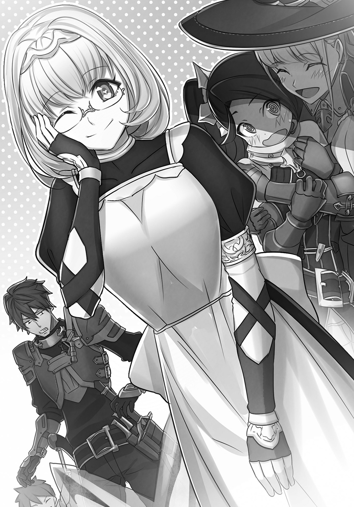
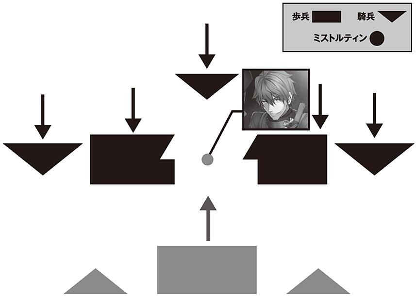

| 魔法使いは終わらない 傭兵団ミストルティン――七人の魔法使い | |
| 八薙玉造 | |
この本は縦書きでレイアウトされています。
また、ご覧になる機種により、表示の差が認められることがあります。
 ダッシュエックス文庫DIGITAL
ダッシュエックス文庫DIGITAL
魔法使いは終わらない
傭兵団ミストルティン――七人の魔法使い
八薙玉造
プロローグ 魔法使いの終わり
紅蓮の炎が大地を焼く。
渦巻く風は炎をはらみ、空へと立ち上る。
何十も屹立する氷の巨剣は炎の色に照り輝いていた。
あとに残されたものは黒く焼け焦げ、あるいは風と氷によって切り刻まれた屍だった。
折り重なる無数の死骸を獣の足が踏み躙る。
獅子の身体と大鷲の頭部、翼を併せ持つ魔獣――獅子鷲。
その背には一人の男が跨る。
先程まで荒れ狂っていた炎と同じ色をした鍔広の帽子と、優美な刺繡が施された外套をまとう姿はまぎれもなく魔法使いだった。
その手には一振りの長剣が握り締められている。ただし、その刃は焰の塊で作り上げられていた。
炎の魔法使いの精悍な眼差しの先には銃で武装した軍勢がいる。
千を超えるだろう兵士たちは横隊で三列に並ぶ。横に広い陣形は魔法使いから見れば、地平を埋め尽くしているかのようだった。
兵の武装は貧相だ。急所を護るためのささやかな革の胸当てのほかは、肩からかけた弾薬帯が目立つぐらいだ。あとは各々、服装すらバラバラだった。
彼らの姿に魔法使いは笑みを浮かべる。ただし、唇の歪みは苦い。
彼のすぐ傍に魔法使いが倒れている。死んでいた。
少し後ろにも魔法使いの屍が転がっている。
炎の魔法使いもまた傷を負っている。腹部がじっとりと濡れ、獅子鷲の鞍には血がこぼれ落ちていた。
銃の軍勢をじっと見つめる。
――銃。
それは何の歴史も持たない武器だ。
銃身に火薬と鉛の弾丸を押し込め、撃鉄を起こして引き金を引く。そうすることで、火打ち石が火薬皿を叩き、発生した火花が内部の火薬に燃え移る。
そこまでして、ようやく弾丸が吐き出される。当たれば人を殺せるかもしれない。
対して、魔法使いはただ二秒、神言を詠唱することで無数の屍を築く。
銃は魔法と比べればはるかに劣った代物だ。
しかし、魔法使いは知っていた。
「かつての戦いは数ではなかった」
目の前にあるほどの数が揃えば、銃は魔法使いを殺す。
神言を唱え終わるまでに、あるいは唱え終わったとしても殺す。
一列目の斉射を凌ぎ、手間のかかる再装塡の隙を狙おうとしても、二列目の兵が撃って殺す。
人生をかけて魔技を磨き抜いた魔法使いが百人を殺す間に、引き金の引き方を覚えただけの兵士たちは千人を殺す。
「魔法と魔法、矜持と矜持、生き様と生き様がぶつかり合う。それが戦場だったはずだ」
魔法使いは友の死骸を一瞥した。
「無様だな」
唇の端から赤いものを滴らせて、魔法使いは炎の剣を構える。
空いた手は騎乗する獅子鷲の頭を優しく撫でた。
「行こうか《暁の風》。神獣の末裔よ」
獅子鷲が高く吼える。
その翼が大きく広がり、風をはらむ。
「聞け！ 我が名はリアム・シゲル・ハートフォード！」
獅子鷲と魔法使いは空へ舞い上がった。
「我が祖たるシゲルと《焰陽の剣》にこの命をかけ、汝らに堂々の勝負を挑む！」
晴れやかに声を上げる。
「いざ！ 魔技を交えん！」
炎の魔法使いは蒼天を駆ける。
口ずさむのは歌にも似た旋律――神言。
◆ ◆ ◆
「慌てるな。引きつけろ」
太陽を背にする形で、空中から突撃してくる魔法使いをまぶしそうに見上げる。
男は気だるげに溜息をついた。のっぺりとした顔には何の感慨もない。
襟元を緩めた服装はだらしなく、革の胸当ても緩い。闘争心すら感じさせないその男は、この軍勢を率いる傭兵隊長だ。
「矜持、生き様......魔法、な。確かにとんでもないよ」
魔法使いが神言と呼ぶ詠唱と共に、彼の周囲に輝きが宿る。
目を焼くほどのあの光は一撃で百の兵を殺す代物だ。
「だけど、時代遅れだ」
傭兵隊長は肩をすくめる。
「第二射は対空。適当に」
彼の命令を伝えるべく、角笛が鳴った。
兵たちが一糸乱れぬというにはほど遠い動作で、銃口を空に向ける。
「撃て」
再びの角笛。各中隊を率いる中隊長たちの号令と共に銃声が響いた。
乾いた音が上がり、黒色火薬の白い煙が戦場に充満する。
彼は目を凝らすが何も見えない。諦めてしばらく待つ。
兵たちのざわめき以外、何も聞こえない。
やがて一陣の風が硝煙を晴らしていく。
半死半生の獅子鷲が離れた場所に転がっていた。魔獣は傭兵の戦列にすら達することができなかった。
そのすぐ近くに赤い外套の魔法使いが横たわる。
傭兵隊長は兵たちをかきわけて前に出た。
恐る恐るという様子で魔法使いを見下ろし、顔をしかめた。
そこにあったものは穴だらけの無惨な屍だった。
獅子鷲がもがく音がする。雄々しい翼を血で汚した魔獣は呼吸するたびに、嫌な音と共に血を吐いていた。
彼は獅子鷲に長銃を向けると引き金を引く。
魔法使いの相棒は動きを止めた。
傭兵隊長は魔法使いがいた空を見上げる。やけに青く澄んでいた。
「だから、魔法使いは終わってるんだって」
◆ ◆ ◆
服を剝ぎ取られた死体が転がっていた。
一斉射撃を受けて穴だらけになった亡骸に残されたものは、赤黒く汚れた肌着だけだった。
「魔法使いか」
既に腐り始めている死体を見下ろし、一人の青年が立つ。
使い込まれた革の防具を着込み、腰には長剣と共に短銃を帯びている。弾薬帯と共に数本の短刀も巻いていた。
「死んで服を剝がれた時のためか。この真新しい肌着は。結局、血まみれじゃないか」
吐息する。
「繁栄を極めた魔法使いの継承帝国。戦場の花形だった魔法使いの騎兵、飛兵。全て過去のもの。銃の台頭で変わった......か」
青年の唇が歪んだ。
「魔法使いは終わっている」
歪んだ唇が作り出したものは濁りきった嘲笑だ。
「バカが。そう思ってる奴ほど殺しやすい」
青年が歩き出す。
行く先にはもういくつか、魔法使いたちの死体が転がっていた。
第一章 《殲光》の魔法使い
雨粒が木々の葉に当たり、音を立てる。
雨の日の森は薄暗く、じっとりと湿っていた。
その中で少女は穴を埋めていた。
穴の底には女性の遺体がある。病に侵されでもしていたのか、瘦せ細った姿だった。
少女はその手で遺体に土をかけていく。白い指先が泥で汚れることもいとわない。
長い銀色の髪は濡れそぼって身体に張りつき、毛先からは水を滴らせている。
鍔広の帽子と炎を模した優美な刺繡が施された外套。赤い色で染め上げられた服や、絹のタイツ。このような雨の森にはあまりにもそぐわない服装だった。
水に濡れ、泥で汚れていようともそれは由緒正しい魔法使いのいでたちにほかならない。
「......ゴメンなさい」
魔法使いの少女は呟く。悲しげだが穏やかな声だった。
「わたしのためにこんなことになってしまって。一緒にいてくれたから......」
遺体のほとんどは埋もれ、土から出ているのは瘦せこけた顔ぐらいだった。
そこへ両手ですくった黒土をかける。
女性を埋めた穴の前で少女はうなだれる。
「もうこれで誰も残っていません」
唇からかすれた吐息が漏れた。
「魔法使いは終わらない、か......。お父様、わたしは――」
空を見上げようとしたが、目に映るのは陰鬱な色をした木々と、落ちてくる雨粒。葉の隙間から辛うじて見える空は夜のように暗かった。
「魔法使いに何ができるというのですか？」
「リオノーラ様ぁぁぁぁぁっ!!」
突然背後から聞こえた叫びに、魔法使いの少女は振り向く。同時に、彼女の唇は動いている。
こぼれるのは囁きでありながらもはっきりと響く歌に似た旋律。神代に用いられた現代の言葉の源流、本質の言の葉――神言だ。
彼女が内に秘めた魔力が神言に導かれ、形を成す。
翻る真紅の外套の内から炎が噴き出した。
雨粒を白い蒸気と変えて舞う炎は突き出した彼女の掌の上に集束されて炎の塊を作り上げる。
声の主に向き直った時、彼女は既に魔法使いとしての戦いの準備を終えていた。
ドチャッと、湿った土の上に倒れる音。
少女は目を瞬かせる。
「ひっ......」
声にならない声が上がった。
目の前にいたのは四つん這いになった男性だった。
半端に伸びた茶色の髪は雨に濡れて乱れている。着ているものは汚れた布の服で、その上から雨除けらしい毛皮の外套を羽織っていた。
顔立ちは若いが、恐怖のあまりくしゃくしゃになった表情からは正確な年齢を読み取ることができない。
武器も帯びていない様子から近隣の農夫なのだろうと、彼女は考えた。
少女は神言を唱え、その手に集まった炎を消し去る。
「怯えないでください」
優しく言うと、彼に歩み寄り、濡れた土の上に膝をついた。
「そのとおりです。わたしはリオノーラ・シゲル・ハートフォード。リアム・シゲル・ハートフォードの子です」
「おぉぉぉぉ......！ やはり、リオノーラ様！」
青年は震え、滂沱の涙を流す。
「スアード都市連合の侵攻がなければ、このハートフォード公国を治めていたはずのハートフォード公王......！ 火の一位《殲光》の名を持ち、先代を超えるとされた炎の魔法使い！ 憎きスアードと東部同盟の衝突で乱れたこの地の救世主！」
四つん這いの青年が突然、顔を泥の中に突っ込む。
「リオノーラ・シゲル・ハートフォード様ぁぁぁぁっ!!」
さらに額を地面に擦りつける。
「え......!? あの、やめてください。こんな......」
「いえ。これは神代より伝わる感謝と敬意、絶対の服従、一生の願いを表す行為なのです！ やらせてください！ 神々は自らの不義を詫びる時、自らの額を大地に叩きつけたと言います。それが地震だったとかなんとか！」
「そうでしたか。続けてください」
リオノーラは即答する。
「不勉強でした。ご教授ありがとうございます。あなたがそれほどの覚悟をもって行為に及ぶなら、わたしには止める権利はありません。しかと見届けます」
膝をついたまま、リオは青年のほうに近寄る。
瞳は泥だらけの顔を上げた青年をじっと見つめていた。
「さあ、どうぞ。もう一度。いえ。何度でも。何十でも、何百でも。思うままに。見守っていますから」
「え？」
青年が目を丸くする。
「え？」
リオノーラもきょとんとした。
「もしかして......一度でよい儀式なんですか？」
「あ、え。はい。......もう一度やったほうがいいでしょうか？」
青年は泥まみれの顔で問う。
「すみません。今ので終わりならば、それで」
やけに間の悪い沈黙が降りる。
しばらく顔を見合わせたあと、互いに立ち上がり、目を逸らす。
「これ、顔を拭くのにどうぞ」
「恐れ多いです」
言いつつも、青年は渡された布で顔を拭う。
それから「あ!?」と叫んだ。
「そうじゃないんです！ リオノーラ様！ そうじゃなくてですね！」
続けようとして青年は言葉を止める。
リオノーラのすぐ後ろにある穴に彼は気づいた。
彼女もまたそれを察したのか、眉を下げる。
「誰か......大事な方が亡くなったのですね。それなのに、俺......」
リオノーラは首を横に振る。
「過ぎたことです。長い間患っていたので、わたしも彼女も覚悟はしていました」
穴を――墓を見据える。
「彼女がいたから......共にいてくれたから、わたしはまだ生きているんです」
「リオノーラ様......」
「それで、わたしに何の用ですか？」
リオノーラは再び青年のほうに振り向く。彼女の顔にもう悲しみの色はない。
「何か願いがあって、先程の儀式を行ったのですよね。なら、わたしには応える義務があります」
青年は息を飲み、言葉に詰まる。
それから意を決し、口を開いた。
「実は俺たちの村が野盗に襲われて――」
「わかりました。行きましょう」
リオノーラは外套を翻して歩き出す。
「え!? いや、リオノーラ様!?」
「リオでかまいません。案内を」
「リオ」
「はい」
反射的に言ったあと、青年は照れた。
「すみません！ 王権賜りしハートフォード公爵にして、偉大なるシゲルの末裔、《殲光》の魔法使いのリオノーラ様にこんな馴れ馴れしく!! せめてリオ様と呼ばせていただければ幸いです!!」
「あなたが望むなら、それでいいですよ」
言いつつ、何かに気づいた様子で、リオは立ち止まる。
「そうでした。わたしもあなたの名前を聞いていません。何と呼ばせてもらえばいいですか？」
「俺如き、犬か豚はどうでしょう」
「豚にしましょう」
間髪をいれずに応えた。
「え？」
「豚さん......。かわいい名前だと思います」
嬉しそうに自らの胸に手を当てるリオの姿を見て、豚と呼ばれた青年は立ち尽くす。
「どうしました？」
「あ、いえ。豚です。ブー」
クスリと、リオは笑った。
「では、行きましょう。豚さん」
リオが再び歩き出す。赤い外套を揺らし、暗い森の中をまっすぐに進んでいく。
豚と呼ばれることになってしまった青年はその背を呆然と見送る。
「あ!? 賊の話、何もしてない！」
慌てて、リオのあとを追う。
◆ ◆ ◆
リオは帽子を上げて、眼下に目をやる。
彼女は木の上にいた。
見下ろす先、リオがいた山の麓には村がある。
周囲に広がる畑と、柵の中で飼われている牛や豚の家畜。それらに加えて山で採れる様々なものが村の生活を支えているのだろうと、リオは思う。
しかし、今、村は略奪を受けていた。
家畜の多くが殺されて引き裂かれている。
家のいくつかは焼かれ、村の中央にある広場には人々が引き摺り出されていた。
村人たちを追い立てているのは、武装した賊たちだ。
「見えるのは二十人......。おそらく隠れている者がいるはずです」
「は、はい。多分、あと十人ぐらいはいるんじゃないかと」
リオのすぐ近くの枝に豚（と呼ばれている青年）が必死の形相でぶら下がっていた。下を見下ろす顔は青い。
「ホーソン型燧発式長銃。雨の中でも十分使える代物です」
リオは賊の武装を睨む。
「ただの賊ではなく、東部同盟の傭兵ですね」
「え？ 食い詰めた傭兵とかじゃなくてですか？」
「可能性は否定できませんが......。略奪にふけっているようで、歩哨は周囲の警戒を怠っていません。装備も資金が不足しているようには見えず、銃も全員に行き渡る数があります」
リオは小さく息を吐く。
「三十以上の敵。強襲したとしても、一撃では......。少しずつ削るべきでしょうか？」
「あぁっ!?」
豚が声を上げた。危うく枝から滑り落ちそうになった彼を支えながら、リオは見た。
中央の広場に集められた村人の中から、数人の女性が小屋のほうへと連れ出されている。
「大事な人ですね」
青ざめた彼の顔を見て、リオは言う。
「は、はい......。俺の、姉で」
「ここにいてください」
告げると同時に、リオは木を滑り降り、泥をはね上げて降り立つ。
「リオ様!?」
「大丈夫です」
振り仰いだリオの顔には優しい笑顔が浮かんでいた。
「わたしが必ず助けます」
リオは一瞬の迷いもなく、村を目がけて一直線に駆け出した。
外套をはためかせ、帽子の鍔を押さえて、風の如く走る。
最短の距離を行けば、村まではすぐだ。
彼女の唇からは神言が既にこぼれていた。
周囲に噴き上がった炎を、自らの両手にまとい、村へ突っ込む。
入り口には四名ほどの歩哨がいる。
突入してくる魔法使いに対して、「な......」と驚きつつも、銃を構えようとした。
それよりも速く、リオは両手を突き出していた。魔法の詠唱は既に終わっている。
赤い炎の塊が唸りを上げて歩哨を襲う。
数瞬悶えただけで声もなく歩哨たちは倒れた。
炎に呑まれた肉体の大半は黒く焼け焦げ、見る影もない。
それらを顧みることなく、リオは村の広場へと走り込む。詠唱は続く。
「シゲルの末、ハートフォード公王リアムの子、リオノーラ・シゲル・ハートフォード！ いざ魔技を交えん」
名乗りと共に撃ち放った炎は蛇のようにうねり、女性を連れていこうとしていた賊と、村人に銃を突きつけていた賊を正確に飲みこんだ。
炎は村人たちを一切傷つけることなく、賊だけを焼き尽くす。
リオの唇からあふれるのはさらなる神言の響き。
「動くんじゃねえ！」
野太い声が上がる。賊たちの銃がリオに突きつけられていた。
リオの炎は五人の敵を瞬時に殺した。しかし、距離を空けていた賊たち全てを巻き込むことはできず、次の魔法の詠唱はまだ終わっていない。
残る賊はこの広場だけで十五名はいる。さらに、周囲に身を潜めていた者たち、十名ほどが姿を現していた。
合計で二十五名強。それらが油断なくリオに銃口を向けている。
「知っているぞ。リオノーラ」
賊の一人が顔を歪めた。
「スアードの侵攻で国を失った魔法使い。追われる身のくせに、くだらん正義を振りかざして賊を討つ......クソ偽善者のお姫様だ」
男は唾を吐き捨てる。
「ここはもうお前の国じゃねえ。スアードからは賞金までかけられている。それなのに、スアード領のこいつらのためにのこのこ出てきた......。アホなのか？」
男が笑えば、他の賊も追随してせせら笑う。
「お前は魔法を使う前に死ぬ。そうしてからかわいがってやる」
「生きてるうちにかわいがりたいけどなぁ！ 死ぬなよ」「元公王家の魔法使いとか、どんな具合か楽しみなもんだ」と、下卑た声が続いた。
無数の銃口に晒されながら、リオは動じた様子を見せない。
彼女はすっと手を上げる。帽子の下、自らの額を指した。
「狙うならここです」
微笑すら湛えていた。
「命の炎がカケラでも残るならば。シゲルの劫火はあなたがたを残さず灰塵に帰すでしょう」
堂々と立つその姿に迷いも恐怖もなかった。
彼女が神言を口ずさみ始めたことで、むしろ、完全包囲している賊たちのほうが狼狽える。
事実、リオの心に焦りはなかった。
リオの詠唱は最も完成が速い高速詠唱でも、二秒を要する。賊の一斉射撃が先に襲いかかるだろう。
しかし、銃の命中精度は著しく低い。何百もの兵が横列を組み、斉射する形なら精度など関係ないが、この人数、距離ではリオに全弾命中することはありえない。
無傷でいることはできず、致命傷を負う可能性もある。
それでも十中八九、即死はない。声を出すことさえできれば、致命傷を負っていたとしても、リオはこの広場の賊を皆殺しにすることはできる。
最初から命と引き換えになることも覚悟して、リオは彼らを殺すためにここに来た。
村人たちが叫ぶ。
「リオ様！ 逃げてください！」「我々のことなんていいんです！」
リオは首を横に振る。
彼女は思う。今はスアード都市連合に支配されているとしても、ここはハートフォード公国が治めていた土地だ。公国の最後の後継者として、彼らを護るのは自分の義務だ。
ハートフォードの民を救い、戦いの中で死ぬのであれば、それは魔法使いとして意味のある死だ。
「そうですよね。父上」と、リオは心の内で言った。
賊たちが引き金を引こうとし、わずかに遅れてリオの詠唱が完成しようとする。
「待って！ 待ってください！」
そこへ飛び込んできた青年がいた。
雨除けの毛皮を着込み、顔や服を泥で汚した青年――豚だ。
彼は広場に駆け込むと顔面から泥に突っ込んだ。そのまま額を地面に擦りつける。
「待ってください！ お願いします！ 俺なんです！ この人を連れてきたのは。村を救うために......！」
泥だらけの顔を上げた。
「小細工を。いつ逃がした？」
賊が村長らしい老人を睨む。
「ジジイ。この魔法使いを殺したら、次はお前だ。お前の家族もだ。目の前で嬲り殺しにしてやる！」
「そんな！ わしは」
「させません」
神言を中断し、魔力を保ちながら、リオは言う。
「わたしが全て救います。豚さん、あなたのお姉さんも無事です」
リオは先ほど助けた女性をチラリと見た。
うずくまった女性は呆然とした顔でリオと青年を見ている。
「......お姉さん？ わたしが？」
女性が問うと、豚が頷いた。
彼女は目を丸くし、豚を見つめ、しばらく黙り込んだ。
それから、おずおずと口を開く。
「......違います。わたし、弟はいません。人違いです。その人、知らない人です」
「わしも知らん。誰じゃ？」
村長も言った。
「え？」
リオと賊が目を瞬かせる。村人たちもざわめいていた。
誰もが豚と呼ばれていた青年を見ているが、明らかに見覚えがなさそうな顔をしていた。
青年の唇の端がいやらしく吊り上がる。
「バーカ」
顔の泥を乱暴に拭って立ち上がる。
彼の顔にはりつくのは泥よりもなお濁った昏い笑みだった。
「お前ら、全員騙されてたんだよ。この俺にな」
風を切る音がした。水の詰まった袋が弾けたような音が続く。
村人が声にならない声を上げた。
賊は目を見開いている。
リオもまた驚きを隠せない。
人間よりも大きな氷の柱が賊の数人をまとめて貫いていた。
貫かれ、押し潰された賊は即死している。
氷柱が来た先、家の屋根の上に一人の少女が立っていた。
左右で束ねた赤い髪が揺れる。小柄で華奢な少女だが、身に着けているものは賊たちの武装に近い実用本位の革の胸当てや厚手の戦闘服だ。特に分厚い籠手と、頑丈そうな革靴が細い身体とは対照的だった。
冷めた目で賊を見下ろした彼女の薄い唇は確かに神言を奏でており、その手にはやけに長い杖が握りしめられている。彼女には大き過ぎる杖には光を宿す宝石がちりばめられており、明らかに普通の杖には見えない。
「魔法使い......。もう一人」
賊がうめいたが、直後絶叫が上がった。
リオや赤毛の魔法使いがいるのとは別の方向から広場に入ってくる者がいる。
それは黒い甲冑に身を包んでいた。顔まで全てを覆い隠す鎧は絵画として描かれる悪竜の類を彷彿とさせる禍々しく鋭利な形状をしている。
雨の中でも金属が擦れる音がよく響く。手にした長剣からはドス黒い血がこぼれ落ちていた。
足元には今しがた斬り捨てた賊が胴を両断された無惨な姿で転がっている。
ガシャと、足音が鳴る。
「うぁぁぁぁっ!!」
悲鳴と共に銃声がいくつも鳴った。
それの近くにいた賊たちがとっさに発砲したのだ。
数発が直撃し、鎧が火花を散らす。
しかし、それだけだった。漆黒の鎧には傷ひとつついていない。
「な......。噓だろ」
賊は目を見開く。
リオにとっても驚くべき光景だった。
傭兵たちが分厚い鎧を着けないことには理由がある。
意味がないのだ。
魔法は鉄の鎧を容易に破壊し、それにとって代わった銃は金属の胸当てを貫通する。
だから、金属の鎧などは継承帝国の末期に一部で使われたに過ぎず、全身甲冑などは調度品としてしか意味を為さなかった。
だが、黒い鎧は銃の直撃を受けて傷つくことなく、それをまとう存在は前進して剣を振るう。
家畜の肉を斬るよりも容易く、長剣は賊を縦に斬り裂く。
「貴様らはここで死ね」
かすれた声で鎧が言った。
「なんだ......！ お前ら、なんなんだ!?」
賊たちが慌てふためく。
そんな中、あの青年はリオの傍らに歩み出た。
「今だぜ。リオ様」
汚れた笑みをこびりつけたままで言う。
リオは驚いていた。
だが、迷わなかった。
彼の言うとおり、敵が乱れ、一部が発砲してしまった今が千載一遇の好機であることは間違いない。
「参ります！」
詠唱を完成させ、炎の魔法を解き放つ。
雨の中で燃え上がる炎は前方の賊を数人まとめて瞬時に焼き尽くした。
火の粉と灰の中をリオは駆け抜ける。
狙いは定めていた。
行く手に立つ男は木の上で村を見ていた時から、賊たちの中心にあった。指揮官であることは確実。
だから、今放った炎でそれを護る敵を焼いた。
もはやリオを邪魔する者はない。
「くそっ......！」
男は銃を捨てた。至近距離とはいえ動く相手に、単独で命中させることは難しいという判断は間違っていない。間髪をいれず、剣を抜き、走り来るリオに突進する。
リオは神言を詠唱しているが、魔法の完成よりも男の切っ先が届くほうが早い。
それでも彼女は止まらず、避けない。リオの手は腰に当てられている。
リオもまた剣を抜いた。
だが、それは奇妙な形の刀剣だった。
剣と言いつつも、鞘はなくそもそも収めるべき刃もない。古めかしくも優美な植物の装飾が施された鍔と柄があるだけの代物だ。
リオは刃なき剣を構える。
大気を揺らし、雨を蒸発させて煙らせながら、先程賊たちを焼いたリオの炎が彼女のもとへと集まってくる。
それらは渦を巻きながら、彼女が握りしめた鍔と柄に集束し、炎の刃を作り出した。
自らの身長よりも長い炎剣がリオの手にある。
突き出された賊の剣に対して、リオは炎の剣を振り上げた。
男の目が驚きに見開かれる。
炎の剣は鉄剣の厚い刃を溶かし斬っていた。
すれ違いざまに、男は斜めに切断され、濡れた地面の上に転がった。焼き斬られた身体からは黒い煙が上がっている。
「ハートフォードが受け継ぐ神代の遺物......焰宿す《焰陽の剣》か」
青年が呟く。
歩み出た彼は残る賊には目もくれず、真っ二つにされて転がった頭目の前に跪いた。
目を見開いたままの男の顔に、自分の顔を近づける。ニタリとした泥のような笑みははりついたままだ。
「俺に騙されたバカにわかりやすく説明してやるよ」
残る賊たちの絶叫が上がる。
リオの炎、赤髪の魔法使いの氷槍、黒鎧の凶刃が彼らを殲滅していく。
「あの魔法使い二人......氷のと、鎧のはな。この近くに待機させてあったんだ。いつでもお前らを殺せるように。......とはいえ、きちんと殲滅するには、隠れている奴も休んでいる奴も引き摺り出しておく必要がある」
青年は炎を放つリオをチラリと見る。
「そこで正義感あふれるリオノーラ様を餌にしようと思ったんだが......。まさか正面から行ってくれるとは好都合。最高の状況だったぜ。お前らはのこのこと集合してくれたわけだ」
喉の奥から嘲笑が漏れた。
「お前らの注意はリオ様に向いている。鎧をガチャガチャ鳴らしても気づかない。包囲は万全、リオ様と遊んでるうちに神言も唱え放題だ。じゃあ、もうお前らは死ぬしかないな」
賊の頭目の瞼が痙攣し、口が動く。声は出ない。
悔しげに顔を歪めているかのように見えた。
「そうだ――」
青年がヒヒッと、満足げに笑う。
「その顔が見たかった！ 勝利を確信したところで足をすくわれて、目の前の理不尽に、驚愕と絶望に染まったその顔がなぁ！ イイ顔してるぜ！」
頭目の唇がかすかに歪み、喉から呼気が漏れた。
「てめぇぇっ！」
咆哮は青年のすぐ近くから聞こえた。
身を隠していたらしい賊が剣を振りかざし、突撃する。
「危ない！」
炎の魔法を放ちながらも、リオが声を上げる。
青年は跪いたままで、よけることなどできそうにない。
「――がっ!?」
だが、賊の剣は彼には届くことなく、足が止まった。賊の腹には短刀が突き刺さっている。
青年はその場から動かず、それを投じていた。
自分の腹に深々と突き立った短刀を、啞然と見つめて立ち尽くす賊を前に、青年は「よっこらせ」とのんびり立ち上がる。
青年の手にはいつの間にか短銃が握られていた。
「て、てめ......」
乾いた破裂音が鳴り、賊が倒れる。即死だった。
短銃からは白煙が立ち上っている。
「俺もこのぐらいは働いておかないとな。どうだ？ 最後の望みも潰えたぜ」
賊の頭目に語りかけつつも、彼は気づいた。
頭目は既に事切れている。
肩をすくめて、青年は周囲を見回した。
魔法使いたちの神言はやんでいる。賊たちの悲鳴やうめきももう聞こえない。
戦いは終わり、襲撃を受けた村落には賊の無惨な屍だけが転がっている。
赤毛の魔法使いと鎧の魔法使い、リオは雨の中に佇んでいる。
炎の刃を手にしたリオと、青年の目が合った。《焰陽の剣》の炎は自然と薄れて、火の粉を残して消えていく。
「あなたは何者なのですか？」
青年が打ち倒した賊の屍を横目に、リオが問う。
村人たちもまた青年のことを疑念と恐れが入り混じった目で見ていた。
青年は口を開く。
「まず......。囮にしたことは詫びておく。金なら出してもいい」
青年はふてぶてしく唇の端を上げた。
「魔法使いだけの傭兵団、ミストルティン」
青年の眼差しが氷を操る赤毛の魔法使いと、漆黒の鎧をまとう魔法使いを見回す。
「その団長、シャノン・ベオーク・ブリマスが俺だ」
己を指しながら、足元に転がる頭目の死骸を踏み躙る。
「魔法使いは終わっている......と、思う奴ほど殺しやすいわけだ」
彼――シャノンの顔に浮かぶのは濁りきった嘲りだった。
第二章 傭兵団ミストルティン
雨の音が藁ぶきの屋根を叩く。
時折、子供の声が聞こえる以外、村は静かなものだった。
リオと、シャノンと名乗った青年は村から一時的に借り受けた家の中にいる。
生活の匂いが残る家の中、シャノンはテーブルの上に座り、リオは窓際に佇んでいる。
赤毛の魔法使いと鎧の魔法使いは姿を消していた。
リオは眉を寄せ、シャノンを見る。
シャノンのいでたちは先程までとはまるで違っていた。
使い込まれた革の胸当てと、腰に提げた長剣と短銃。弾薬帯といくつかの短刀を身体に巻き、長銃を握った姿は、先程の賊、つまりは傭兵に近かった。
「いいぜ。言いたいことがあれば。なんだって言ってみろ」
対するシャノンはふてぶてしい顔で彼女を見返す。
「はい......」
リオは迷いを見せる。
何を言うべきか、どのように立ち振る舞うべきか？ それらの迷いを振り払おうとでもいうように首を横に振ると、意を決した様子で口を開いた。
彼女の眼差しはシャノンをまっすぐに見据えている。
「もしかして......豚さんという名は偽名だったんですか？ シャノンさんという名前が本名なら」
真面目な顔で尋ねた。
「......今そこ？」
シャノンの濁りきっていた表情が崩れた。
「申し訳ありません。他にも尋ねるべきことは多いのですけど、偽名だとすれば、私はこれまでとんでもない失礼をしていたことになります。豚呼ばわりなんて......。最初にお詫びしないといけません。本当にゴメンなさい！ すみません！ 豚の気持ちになれと言われれば、がんばってなります！」
心から申し訳なさそうに頭を垂れる。
「いや、そこまで言わない！ 落ち着け！ あぁ......。そもそも、豚って呼んでくれって言ったのは俺のほうなんで。その、な？ お気遣いなく」
「ありがとうございます。人を豚呼ばわりしたわたしを......」
リオはホッと胸を撫で下ろす。
「優しいんですね。シャノンさんは」
「これ、優しいうちに入るのか」
シャノンの顔からふてぶてしさが消えていた。むしろ、消されてしまっていた。
「村の人間と名乗ったことも、姉がいると言ったことも敵を欺くための策だったのですね」
「まあ、そうだが」
「なるほど。わかります。その策を話してしまえば、わたしの表情や言動から策が露呈することもあったかもしれません。それを防ぐためにあえて、噓という、人間にとって恥じるべき行為をも辞さなかったのですね」
「おおむね、そのとおりだ」
「自らを貶めることすら、人を救うためには迷わず行うことができる。シャノンさん、あなたは素晴らしい方です。尊敬します」
「それほどでも」
曇りなど一切ない眼差しでまっすぐに見つめてくるリオから、シャノンは思わず目を逸らした。
「ま、まあ、ともかくだ！ そういう話はいいんだ」
「この謙遜ぶり......！ 村の方に被害を出すことなく、あの数をわずか四名で蹴散らしたというのに。なんて謙虚な姿勢」
「いやもう、そういう話はいいからな！ キラキラした目をこっちに向けるな！ とにかく状況確認をさせろ！」
「失礼しました。そうですね。この現実に対する判断力もまた素晴らしいです。......あ、すみません。つい、褒めてしまいました。感動してしまって」
苦りきった顔をして、シャノンは額を押さえる。リオとは目を合わせない。
「ともかく......。ともかくだ。さっき全滅させた賊は、お前も気づいているとおり、食い詰めて賊をやってる傭兵なんかじゃない。東部同盟が雇っている傭兵どもだ」
「今、この地を治めるスアード都市連合を攻撃するための先遣部隊ですね」
「ああ。お前たちが治めていたハートフォード旧領を巡るいざこざはまだ終わっていない。むしろ、拡大しているということだよ」
リオが表情を翳らせるが、シャノンはかまわない。
「魔法使いの時代は終わった。五年前の継承帝国の完全な崩壊と共に。原因は言わなくてもわかってるな？ 諸王――帝国が王権を与えた貴族どもが治める国に分割されて、終わる直前だった継承帝国。そこへ魔法使いを簡単に殺せる銃が普及した。それを使う傭兵を主軸として軍を編制した共和国や、東部同盟、源神教会のような都市国家の勃興。連中に対して継承帝国諸王は抗する術なく、魔法使いは端から殺され、帝国領土は都市国家に仲良く食い分けられた。そんな中で唯一最後まで残っていた魔法使いの国がハートフォード公国だ」
「わたしの......父の国でした」
リオは目を伏せる。
「そう......。善政を敷いていたことと粘り強い交渉で、力なんかなくなっても、存続を許されてきた国。だが、それも三年前、協定を無視したスアード都市連合の突然の侵攻で終わった。公王リアム・シゲル・ハートフォードを喪い、公国の領土はスアードのものになった。これで継承帝国であった領土は全てなくなった。残ったのは互いに争う新興勢力の都市国家ども。魔法相手の戦争は、今は銃と銃の戦争になったわけだ」
シャノンは呆れた様子で肩をすくめる。
「スアードはもともと東部同盟に所属する都市連合でした。しかし、単独でのハートフォード侵攻を機に、東部同盟から除名。それを理由として、東部同盟はスアードに......旧ハートフォード領に侵攻しようとしている。そう聞いています」
「治安維持の名目でな。逃亡生活していたわりによく知ってるな」
「助けてくれた方からうかがいました」
「かつての領民に救われるか。さすがは善政で知られるハートフォード公王の娘だ。そうでなければ、生き残ることなんてできなかっただろうが」
リオは否定しないが、何も語らない。
「スアードと東部同盟は実質交戦状態にある。東部同盟も都市の連合体ということで、一枚岩じゃないから、中心になっているのはクルーセスとカッスル二つの都市だが」
「東部同盟の中心都市ですね。単独でもスアードに匹敵する勢力です」
「そのとおり。だから、現状は東部同盟が圧倒的に優勢。スアードは決戦を避けることで、時間を稼いでいる。当然、東部同盟はそれを許さない。決戦に持ち込もうと手を打っている」
「なら、先程の先遣隊の目的は威力偵察などではなく、挑発ですか」
「そうだ。旧ハートフォード領に対する散発的な攻撃。つまりは村落、街の略奪。東部同盟はスアード議会の不安と民衆の不満を煽っているわけだ」
リオは視線を屋外に転じた。
彼女と、シャノン率いるミストルティンの戦いで村人への大きな被害は免れた。
しかし......リオはこれまでにも同じように攻撃された集落を目にしている。かつての領民の家々や人が焼ける臭いも、腐臭も忘れることができない。
「噂は聞いていたぜ。同じような村や街を救ってきたんだろ？」
「ええ。しかし......」
「そうだ。《殲光》の魔法使いなら、それができた。十数名程度の賊なら殺せた。だが、この程度の数が相手で、運がよかったに過ぎない。根本的な解決にも、時間稼ぎにすらならない。さらにだ」
シャノンの唇の端がよりいやらしく上がる。
「東部同盟の先遣隊、六百がこの近くに布陣している」
「六百......。しかし、理由なく攻撃をかけては大義名分も立ちません」
「その理由を作るための先遣隊だ。さっきの賊はそこから分けた部隊。連中が村や街を襲う。東部同盟と戦いたくないスアードが放置する。そうなれば、東部同盟本隊はスアードが見捨てた村落を救うという名目で本隊を送り込むことができる。自作自演だ。放っておけば、また別の小部隊が派遣されて、どこかが焼かれることになる」
「そう......ですか」
リオはうつむいたまま唇を嚙む。その両手は強く握りしめられていた。
「避けられない戦いですね」
言葉と共に顔を上げた。
シャノンがかすかに眉を動かす。
リオの顔にはもう悔しさも悲しみもなかった。澄んだ瞳には迷いすら見えない。
「言うまでもないだろうが。敵は六百だ。魔法使いは止めることもできないぞ。お前の父親はそうやって死んだんだろ？」
「それでも赴くのが魔法使いです」
リオは腰に提げた《焰陽の剣》に触れる。
「シャノンさんは魔法という力が何故あるのか知っていますよね？」
「そんな、ご存じでしょう？ って聞き方されても困る。考え方は色々あるだろう」
「確かに......。多様性を理解する。自らが決めた枠に囚われることがない。それゆえに、先程の戦いのような柔軟な発想ができるということですか」
「ここで褒められると思わなかった」
シャノンは本当に居心地悪そうだった。
「なら、その多様性のひとつとして、わたしの父の考えを話します」
リオは自らの胸に手を当てた。
「かつて世界に君臨し、万物を、人をも創り出した神々がいました。魔法とは、今は既にいない彼らの血を引く者だけに与えられる力。神々の血を引く者。それが魔法使いです」
「継承帝国が継承帝国と呼ばれていた所以だな。神の座を継ぎ、人を統べる者――神帝の国」
「はい。だから、魔法という力を与えられた者は、神々の末裔として、人々を導かなければなりません」
「継承帝国はそれこそ人の手で滅びただろ。そんな役割はもうない」
「それでもなお、魔法使いが弱き人々を導き護ることは変わりません」
「弱き人々......なぁ」
シャノンは首をひねる。
「その弱き人々に、魔法使いは駆逐されてるわけだ。それを弱いと言うのか？」
「そうですね。確かに......魔法使いは昔よりも数を減らし、力を失い、さらには魔法を凌ぐ銃も現れました。それでも――」
リオは窓の外をもう一度見る。
雨の中だというのに、子供たちがはしゃぐ声が聞こえた。
「わたしは、リオノーラ・シゲル・ハートフォードは魔法使いであり続けます」
晴れ晴れとした彼女の横顔を見て、シャノンは溜息をついた。
「そうかよ。勝手にしろ」
呆れた顔で言う。
「......しかし、だ。リオノーラ。俺には銃の軍勢を打ち破る術がある」
リオがシャノンに向き直る。
「お前が魔法使いの誇りと義務と命をかけても絶対に討ちきれない六百の敵。俺にはそれをことごとく殺す策がある」
「まさか......一緒に戦ってくれるんですか？」
シャノンは頷く。
「でも、傭兵はお金で動くはずです。もし本当に六百を討つことができるとしても、その戦いで得られるものなんて......。はっ!?」
リオは大切なことに気づいたかのように口を押さえた。
「それを言うなら、この村を救った戦いにも報酬などありません。さっきも何ももらっていなかったですし、村長さんもシャノンさんのことを本当に知りませんでした......。ということは、シャノンさんの戦いは無償!? 人のために......力なき人のために、その命をかけてなお無償!?」
「いや、待て」
「わたしとは違う考えを持っているとは思います。しかし......その志はハートフォードの魔法使いに通じるものがあります。シャノンさん......！ あなたという方は......！」
感極まり、声を詰まらせる。
「待て待て待て。俺は俺で思惑があるからな。持ち上げるのをやめろ。そんなんじゃないから」
「またも謙遜。尊いですね」
「謙遜じゃねえっつってんだろ!? その目をやめろ、ありがたいものを見るようなその目を！ とにかく、手伝うのは確かだ。それだけだ」
シャノンはテーブルから降りると、外へと歩み出す。
「一緒に行くな？」
「はい」
迷いなく踏み出そうとして、リオは足を止めた。
「そうでした。ひとつ言い忘れていたことがありました」
改まった様子で、彼女はシャノンに向き直る。
「ありがとうございました」
膝をつき、四つん這いになり、深々と垂れた頭を床に擦りつける。
「何やってんだ!?」
「あなたがいなければ、わたしは討たれていたかもしれません。この村を救うこともできなかったかもしれません。リオノーラ・シゲル・ハートフォードは、我が祖たるシゲルと《焰陽の剣》にかけて心より感謝します」
「わかった！ わかったから、立って！ 立ってくれ！ 人が見たら誤解する！」
「しかし......これは、神代より伝わる感謝と敬意を示す行為だと教わりました。父も知らなかった貴重な知識を教えていただいたことも本当に感謝しています」
「疑えよ！ もうちょっとだけでいいから疑えよ！」
「疑う......とは？」
「もうそれはいい！ あの、あれだ......滅多なことがないとやっちゃいけないわけだ。軽々しくは」
「命をかけた戦いへの感謝としてもまだ軽々しいのですか......。失礼しました。それほどに重い儀式とは露知らず」
「あ、あぁ......」
シャノンは困り果てた顔で頭を搔く。
「俺が言うのもなんだけどな。ほんともう少しだけ人を疑ったほうがいいぞ」
「どうしてですか？」
リオはきょとんとした。
シャノンはもう一度頭を搔き、リオと会ってから最も深い溜息をつく。
「騙そうとする奴とかさ。いるかもしれないだろ」
「出会ってすぐのわたしのことをそこまで気遣ってくれるなんて......。どこまで慈悲深いのですか」
「だから、ありがたそうにするな」
「でも、心配はいりません。まず、シャノンさんはわたしを騙そうとしていません。信じています。戦場での創意工夫と魔技の衝突はともかく、志はただまっすぐ示すのが魔法使いです」
リオは屈託のない笑みを見せた。
「もし誰かに騙され、それが結果として、わたしの......シゲルの誇りを穢すのなら。魔技を尽くすまでです」
彼女は目を細めたままだった。
「結果、果てるなら、わたしはそれまでの魔法使いだということですから」
シャノンは何か言おうとしつつも、言葉に詰まった。
リオノーラ・シゲル・ハートフォードという少女の本質に気づいてしまったのだ。
リオはハートフォードの魔法使いとしての在り方を語っているだけではない。
彼女は戦闘において常に本気であり、敵と見定めた相手は躊躇なく殺す。村を救おうとした時の戦い方がまさにそれだった。正々堂々と名乗りは上げるが、その時点で戦いは始まり、応じることができなかった者は、敗れて死ぬしかないと考えているのだろう。
そして、何よりも自らの命を捨てることをいとわない。
リオを謀り、陥れ、誇りを穢し、そこまでして仕留め損なえば、継承帝国が定めた四元の位階の最高位、火の一位の《殲光》は敵を情け容赦なく焼き捨てるだろう。
銃を用いてリオを殺すとしても、どれほどの数が道連れにされるのか？
曇りのない彼女の笑顔に、シャノンは明確な脅威を覚える。
「さあ、それでは行きましょう。シャノンさん」
先に外に出ていたリオの外套が翻る。
シャノンは息を呑みつつも、その背を追って雨の中へと歩み出した。
◆ ◆ ◆
それからしばらくの後、リオとシャノンは雨の中、馬上にあった。
馬は農耕用とは違う、がっしりとした体軀を持つ軍馬だ。
シャノンがあらかじめ準備していたらしく、彼の部下らしい若者が村を出る時に連れてきた。
泥を踏む音を響かせて、シャノンたちは街道を少し外れた木陰を行く。あらかじめシャノンが道を調べていたらしく難路ではない。
既に村を出て、三時間が経過していた。
「部下は既に配置についている」
雨除けの外套をまといながらも、慣れた様子で馬を乗りこなし、シャノンは言う。
「魔法使いのみの傭兵団......でしたね。ミストルティンは」
リオが脳裏に描くのは村の戦いのあと姿を消した赤毛の魔法使いと、鎧の魔法使いだった。二人の手並みはリオから見ても優れたものだと言える。
シャノンが団長であれば、あの二人は傭兵たちを指揮する中隊長なのかもしれない。それだけの才覚を、彼女は感じている。
「何人の魔法使いがいるんですか？ 継承帝国亡き今、魔法使い......それも戦場に立てるほどの者はかなり少ないと思います。......あっ」
リオが今さら気づいた様子で声を上げる。
「全員が魔法使いというなら、シャノンさんも魔法使いですよね。どのような魔法を使うんですか？ まだシャノンさんの魔法は見ていません」
期待に満ちた目を向ける。
「俺の魔法......か」
シャノンは暗い空を見上げた。ニイと唇が歪む。
「それはそれは凄まじい魔法だ。だが、それゆえに軽々しくは見せない」
「慎ましい......！ 普通であれば魔法使いは己の位階と魔法の名を隠そうとはしないものですのに」
リオは例によって真剣な面持ちで頷いた。
シャノンはそちらを見て、何も言わず視線を前に戻す。
「話がずれてしまいました。すみません。それで、ミストルティンの規模は？ 魔法使いのみというのは、主軸となる戦力が魔法使いのみということで、戦法は魔法使いの騎兵で敵を蹴散らし、後詰めとなる歩兵がトドメを刺す。やはり、そのような戦い方ですか？」
「だいたい合ってる。まさしくそのとおり」
シャノンはあくびを嚙み殺す。
それから、隣に並ぶリオに眠そうな目を向けた。
「......というか、お前元気だな。逃亡生活続けて、森の中に潜んで......。あげく、一戦交えて、なんでそんなにピンピンしてるんだよ」
「戦いに臨む魔法使いは疲れなど見せないものです。もしかして、これもハートフォードのみですか？」
「実は俺も眠そうに見えて潑剌としている」
「なるほど。あえて隙を見せているのですね。そのような魔法使いの在り方も......」
シャノンはますます疲れた顔をした。
やがて、馬上の二人は丘の上に出る。
「あまり前に乗り出すなよ」
馬を降り、シャノンは稜線に身を伏せる。
リオも続き、彼の傍らに並んだ。
雨が降りやまない暗い空の下、丘の向こう、もうひとつのなだらかな丘に沿って、野営地が築かれていた。
天幕が並び、多くの兵が行き来している。雨の中でも歩哨は油断なく周囲を警戒していた。
「確かにここはかつてのハートフォード領としても、今のスアードの領土としても辺境に位置しますが」
リオは周囲を見回す。野営地の北側には森の木々が雨に煙るだけで、人里は見えない。
「これほどの数がここまで入り込んでいるのにもかかわらず、手をこまねいているなんて」
「さっきも言ったが、スアードは決戦は避けたいからな。戦力差があり過ぎて。だから、辺境の被害は無視して、できる限り政治的交渉でどうにかしたいとか考えてるんだろ。うまみの少ないこの辺りの領地を手放すだけで済めばよし。それができなくても、傭兵を集めるための時間稼ぎになる」
シャノンはもう一度あくびする。
「もっとも......どう見ても不利なスアードに、どれだけの傭兵がつくか」
「先遣隊の数は六百......。見る限りでは間違っていませんね」
目を凝らして、リオは言う。
「それで、シャノンさん。ミストルティンの兵力は？ シャノンさんの策があれば兵力が三分の一でも勝機はある。そう思います」
「ん？ ああ、勝機か。勝機な」
おもしろくなさそうに、それでも唇を歪めて敵を嘲笑う。
「もう勝ってる」
「勝っている？」
「あいつらの敗因はここに布陣したことだ」
当たり前のように言った。
◆ ◆ ◆
怒鳴り声に続いて殴り合う音がした。
「忌々しい......」と、舌打ちしたのは、スアードに侵入した東部同盟の傭兵隊を率いる中隊長の一人だった。
頰を濡らす雨を拭う。
壮年の男で、雨除けの分厚い外套から覗く身体にはいくつもの古傷が残る。
東部同盟に所属するクルーセス都市連合の傭兵隊で戦ってきた男だ。
彼の長い傭兵としての経験の中でも、今回の任務はかなり面倒な部類となりつつあった。
「喧嘩、止めますか？」
部下が問う。
「不満があるならやらせとけ。そのほうが爆発もしない。俺だって殴ってやりてえよ」
暗い空を陰鬱な顔で見上げる。
「楽な任務のはずだったんだがなぁ。運がない」
スアード都市連合を挑発するべく、辺境の村々を略奪し、焼き討ちする。
新兵の実戦訓練も兼ね、なおかつ懐が温まる簡単な任務だった。
だが、スアードに入ってから、予想外の不運に見舞われ続けている。
「なんで、そこらの村を襲うだけのことがうまくできない」
「ハートフォードの生き残りがいるとか、他にも魔法使いが邪魔しているとか、色々言い訳はされましたよね」
「それぐらい蹴散らせるだろ。何が火の一位だ。何が《殲光》だ。魔法使いの小娘一人、犯して殺して、例の遺物を献上ぐらいしてみせろよな。これだから新兵は......」
「ちゃんと経験ある連中をつけているんですが」
喧嘩の怒声が激しくなっていた。何か壊れる音もする。
「あげく、失火だ。食糧が焼けたおかげで腹も減る」
「長雨のせいで、補給も滞ってますから」
「それも、作戦がうまくいってりゃ解決できてる問題だろ。このままじゃ飢える。だからもうしかたなく、予定を早めて本隊を前に出してきたが......」
「この先の低地が泥沼になってて、雨で釘づけですもんね。早くやまないかな。ほんと。大砲持ってきたはいいけど、あれが足を引っ張ってる」
チラリと野営地の端に目をやる。
雨除けをかけた二門の野戦砲は静かに佇んでいる。取り回しのいい小型の砲ながら、継承帝国時代の古い城壁なら破砕可能な代物だ。
しかし、輸送に数頭の馬を必要とする上、この地面の状態ではまともに動かすこともできない。
砲兵が退屈そうにしているのを、中隊長は忌々しげに睨む。
「斥候が言うにはやはりスアードは動く気がないらしい」
中隊長と部下は空を見上げて陰鬱な息をこぼす。
「雨さえ上がればなぁ」
◆ ◆ ◆
「――という感じで、ここに布陣してるんだろ。連中は」
敵陣を眺めるシャノンの顔にはニヤニヤとしたいやらしい笑みが浮かんでいる。
「確かに。これほど雨が続くと、進軍もままなりません」
「そうだろう？ いやぁ。長雨に阻まれるとは、連中は運がない。あの数でこの進路なら、ここで足踏みせざるをえないのだから」
リオの形よい眉が動いた。
「まさか、この長雨もシャノンさんが......ミストルティンが仕掛けたことなんですか？」
シャノンの顔にはりついた笑みがいやらしさを増す。
「そうだ。その顔が見たかっ......あまり驚いてないな」
「すみません。風の三位相当の天候魔法なら不可能ではないので、違和感はなく。え、えっと......わっ！ 驚きました。なんてことでしょう！」
「その気の遣い方は優しさじゃないからな」
露骨に不満げな顔でシャノンは舌打ちする。
「まあいい。お前の驚いた顔を見るのが目的じゃない。代わりにひとつ与太話だ。火の一位《殲光》。何故、魔法は銃に負けたと思う？ お前の別名は《城崩し》。その魔法は城壁をも融解すると聞く。そんな凄まじい魔法が、だ」
「城壁の融解は重詠唱なら確かに可能ですね」
「普通にできるのかよ。わかっていたとはいえ、凄まじいな......」
苦い顔のまま、シャノンは自らの持つ短銃をリオに見せる。
「これは携帯用の短銃だが、仕組みは歩兵連中が使う長銃と変わらない。短銃も騎兵銃も長銃もまともに当たらない代物だ。しかも、一発撃つだけで面倒が多過ぎる」
シャノンは身に巻いた弾薬帯から、油紙の包みを取り出し、嚙み破る。中身は球状の弾丸と黒色火薬だ。
続けて、撃鉄を途中まで起こし、銃側面の火皿を開き、点火用の火薬を少量入れる。
それから、雨に濡らさないように注意深く、黒色火薬を銃口から流し込み、さらに弾丸を入れる。
銃身下部に取りつけられている火薬を込めるための棒――槊杖を銃口に突き込むことで、火薬と弾丸を奥へ押し詰める。
シャノンは撃鉄を最後まで起こし、引き金に指を置いた。
この状態で引き金を引けば、撃鉄が当たり金を叩き、火花を起こす。火花は開いた火皿の中に入り込み、先程入れた点火用の火薬に火が点く。それが銃身内の火薬に引火し、炸裂。銃弾が放たれるのだ。
「ここまでしてようやく撃つことができる。魔法なら神言を唱えるだけで、高速詠唱でも思うままに何十人を殺せるのに。《殲光》の最短詠唱は二秒だろ？」
「さすがはシャノンさん。先程の戦いで見定めていたんですね」
「いや......どちらかといえば、そこは警戒心を持ってくれてもいいんだぜ。ともかく、銃はこんなに手間がかかる。あげく、引き金を引いてから銃身内の火薬に火が点くまでの遅れが命中精度の低さに拍車をかける。とんでもない欠陥品だ」
シャノンは肩をすくめた。
「それでもなお、魔法は銃に勝てない」
「銃の射程のほうが長いからです」
リオは表情なく言った。
「そのとおりだ。魔法が届くのは三十メートルまで。魔力の放出限界だ。対して銃の有効射程は色々言われているが、七十メートル。命中を考えなければ、もっと遠くまで飛ぶが。とにかく、魔法で銃の射程外から攻撃することはできない。詠唱しながら突っ込んで、一撃目を放つことができても、次の魔法を放つには銃の一撃目を凌ぎながら、二秒の詠唱をする必要がある。魔法の威力を増すための重詠唱なら一分は必要だろ。魔法使い同士の一騎打ちならともかく、今の戦場でそんなことをしている暇はない」
リオは否定しない。その現実を彼女は嫌というほど目の当たりにしていた。
「さらに実のところ、銃には命中精度の低さなんて関係ない。あれは集団で使うものだ。何十何百何千で撃てば、誰かの弾が当たって敵は死ぬ」
短銃を弄りながら続ける。
「魔法を使いこなすには、生まれつきの素質に加えて、幼い頃からの弛まぬ鍛錬というのが必要だ。銃は違う。最悪、装塡方法と引き金の引き方さえわかっていれば、誰でも使える。魔法使いが詠唱しながらの捨て身の突撃で百人を殺しても、まったくもって割に合わない」
シャノンの顔は皮肉げに歪んでいる。
「じゃあ、聞くぜ。魔法が銃に勝てる要素は？」
リオは今度は答えることができなかった。じっとシャノンを見据えているだけだ。
「もちろんその威力だ。もう一度言うが、魔法は一撃で何十、何百を殺せる。本来、魔法使いは千を殺せるわけだ。銃みたいな欠陥武器も、弾薬もいらない。だから――」
シャノンは再び視線を転じた。
彼が見据える先にあるものは、雨に煙る東部同盟先遣隊の野営地だ。
「魔法使いが勝つには、魔法使いが劣る要素を潰すだけでいい。そうすれば、魔法使いが敗ける道理なんてない」
「......っ」
リオがかすかに警戒を見せた。
湿った空気に冷たい風が混じる。
不意の冷気は野営地の側から急激に押し寄せてきていた。
野営地が築かれた丘の北、おそらく数キロは離れた場所には黒々とした森が横たわっていた。
そこから野営地に向かって、草地が淡く白い色に染め上げられていく。
地面が凍っている。濡れた大地は瞬く間に凍りつき、凍結は音もなく東部同盟の野営地に及ぶ。
「氷の魔法使い......！」
リオの脳裏をよぎったのは、氷の槍を繰り出していた赤毛の少女の姿だった。
◆ ◆ ◆
東部同盟の野営地がざわめいたのは、その直後だった。
「なんだこれは!?」
焦った声を上げた兵たちの足は革靴ごと地面に張りついていた。
濡れた地面がいつの間にか白く凍結し、革靴を捕らえて離さない。それどころか、氷は濡れた服を伝い、足首から腿までを凍らせ始めている。
一人や二人ではなく、天幕の外にいた多くの兵士が這い寄る氷の餌食となっていた。
「バカな!? 魔法使いか!? どこからだ！ 接近を許したのか!?」
凍りつく前に足を地面から離しながら、彼らを率いる中隊長は声を荒らげた。
歩哨は敵の接近を報告していない。
緊張が緩んでいたことは否めないが、雨で視界が悪いとはいえ、野営地の周囲には障害物はなく、魔法の射程に入るほどの接近を見逃すとは思えなかった。
「北です！ 北の森から、氷が！」
駆けつけた兵が叫ぶ。
「北の森......？ 何キロ離れてると思ってる！ そんな距離から魔法が届くはず......！」
中隊長は周囲を見回し、息を飲んだ。
「濡れた地面を伝わせているのか!? この氷は！」
「銃が使えません！」「ダメだ！ 銃が......ダメだ！」
誰かが叫んだ。
「そんなことがあるか！」
中隊長の声に焦燥が滲む。
外部に点火用の火縄が露出していた初期の銃はともかく、ホーソン型燧発式長銃は引き金を引く時以外は、点火用火薬が納められた火皿は閉じている。雨除けもかぶせた状態なら、短時間は雨中でも撃てるはずだ。
「動かないんです！ 銃が！ 引き金が！」
中隊長は瞠目した。
彼の銃もまた動かない。撃鉄も引き金も固まっている。
「ここにも氷か......！」
地面を覆う氷は兵の動きを完全に封じ込めるほどではない。しかし、濡れた身体や服を伝い、銃の機構に入り込み、その動作を妨げていた。
「濡れていない銃を用意しろ！ 銃のない者は氷を取り除け！ 白兵戦の準備もだ！ 敵が潜んでいるのが北の森なら、まだ時間は......！」
「敵襲です！ 西から！」
恐慌に陥った兵士の声や雨の音に混じり、聞こえたのは馬蹄の響きだった。
「単騎......!?」
新たな銃を手にしながら、中隊長と周囲の兵は目の当たりにする。
たった一騎の騎兵が野営地目掛け、まっすぐに来る。
それは漆黒の甲冑で身を包んだ存在だった。
絵画の悪竜の如き装飾が施された鎧を揺らし、長大な斧槍を振りかざす。
跨る屈強な騎馬もまた鱗を持つ類の魔獣のように禍々しい甲冑をまとっていた。
騎馬が跳ね、斧槍が唸りを上げる。
薙ぎ払われた兵の身体が引きちぎれた。革の鎧も肉も骨もかまうことなく両断して、血飛沫にまみれた斧槍が閃く。
◆ ◆ ◆
リオとシャノンはその様子を見ていた。
敵陣に突入した鎧の騎兵が武器を振るうたび、兵が紙のように千切れ飛ぶ。
辛うじて使える銃が騎兵を捉えても、火花がひとつ上がるだけだ。
「天候を操り、敵を望む戦場に誘導して、武器を無力化する。その上で攻撃を仕掛けた......ということですか」
シャノンは応えず、傭兵たちが討たれ、右往左往する姿を満足げに眺めていた。
「銃に対抗する手段。わたしはいかに早く突撃し、いかに早く詠唱を終えるか。あるいは敵が陣形を整えるまでに討つ。それしかないと思っていました」
「方法は間違っていない。だが......その状況を作り出すことができるかどうかだ」
これまで伏せていたシャノンが立ち上がり、リオもまた従う。
「これが魔法使いの戦なんですか......？」
混乱した敵陣を黒い騎兵が駆け抜け、銃を使えない敵兵を撫で斬りにしていく。
その光景を眺めるリオの表情がわずかに翳る。
「納得できないか？」
リオは即答できない。惑いつつ、口を開く。
「......そう、ですね。わたしたちの戦い方とは違います」
「正々堂々正面からの勝負じゃないから、卑怯だと感じる。わかるぜ」
「それは......」
「だが、これが俺たちのやり方だ。お前が敵より速く動き、討とうとするのと何か違うか？」
「......っ！」
リオの眉が動いた。
「さあ、がんばってくれよ。俺の自慢の部下たち」
シャノンは《殲光》の魔法使いの顔は見ず、殺戮を続ける黒騎兵を眺めている。
「鎧の魔法使い。土の三位ですね」
「やっぱりわかるか。土の三位《剛鉄》。一位、二位と違って、あの程度の魔力じゃ無から四元を作り出すようなことはできない。金属を変化させる魔法だ。だが、あいつはそれを金属の強化と再生に用いる。至近距離からの銃弾もあの鎧を傷つけることはできない。《剛鉄》が鍛え上げ、磨き抜いた剣槍は人間如き一撃で真っ二つにする」
事実、《剛鉄》の鎧に包まれた黒の騎士は斧槍を振るい、荒れくるう。
「......続く戦力はまだですか？」
リオが問う。彼女の声は固い。
「あの方だけでは押し切ることはできません。敵は立て直します。そうなれば《剛鉄》を押さえる手段はあります」
《剛鉄》はあくまで武具の強化に過ぎない。身体能力が変わらない以上、馬から引き摺り落とせばそれで終わりだ。
強化されていても、鎧の耐久力には限界がある。銃はともかく砲には砕かれる。
中の魔法使いも生身だ。あの魔法では衝撃を完全に殺しきることはできない。熱や冷気にも耐えられない。
「少なくとも、わたしならあの魔法使いを確実に討てます」
リオの言葉には確信があった。
「他の兵はどこですか？」
「ミストルティンは三十人」
シャノンは彼女のほうを見ることなく言う。
「戦場に立つのは三人。俺を含めてだ」
つまり、あの場で戦うのは氷の魔法使いと、鎧の魔法使いのみ。
「無理です！ このままではあの人は......」
「そうだよ」
シャノンはあっさりと言った。
「だから、ここまではお膳立てだ」
濁った目が細くなる。唇の端は既に歪んだ形に吊り上がっていた。
「本命の出番だ。リオノーラ・シゲル・ハートフォード。あいつを見殺しにできるお前じゃないだろ？」
ククッと、喉の奥から声が漏れる。
「火の一位《殲光》。ハートフォード滅亡後も飽くことなく戦い続けてきたその力を示してみろ！ お前の言う魔法使いの戦い方をしろ！ 正面から突っ込んで、速く的確に詠唱して、炎で敵を討て!!」
「最初から策にわたしを組み込んで――」
驚きながらも、リオは動いていた。ハートフォードの魔法使いの証である赤い外套が雨粒を散らす。
次の瞬間には馬に飛び乗っていた。
「お力添えを感謝します」
振り向いた目に迷いはない。
《殲光》の魔法使いは銀色の髪をなびかせて戦場へ突き進む。
◆ ◆ ◆
野営地の凍結はさらに進んでいく。濡れた天幕さえ凍りつき始めていた。
混乱した陣営内を黒の騎兵が縦横に駆け、すれ違った兵をことごとく斬り捨てていく。
「狼狽えるな！ 敵は少数だ！」
悪化する状況の中で彼らを指揮する中隊長は懸命に声を張り上げる。
「騎兵はまともに相手をするな！ 斧槍でも縄でもなんでもいい。とにかく引き摺り落とせ！ 氷の魔法使いは北の森に隠れている。襲撃に備えろ！ 隊列を整えれば恐れる相手じゃない！ これ以上銃を濡らすな！ 地面から離せ！」
矢継ぎ早の指示は兵たちの混乱を即座に鎮めることはできない。
だが、古参の傭兵たちは彼の意図を読み取り、それぞれが動き出す。鎧の騎兵を捕らえるべく進路に縄が張られ、北からの襲撃に備えて一部隊が駆ける。
混乱の極みにあった野営地は徐々にだが統制を取り戻そうとしていた。
その時だった。薄く張った氷を鮮やかな赤い光が照り輝かせる。
中隊長を含め、兵たちは熱い風を感じた。
彼らは風が来た方向を振り向き、目を見開く。一瞬だが、戦場の真ん中で何もできないまま立ちすくむ。
巨大な炎の塊が周囲を照らす。煮えたぎるように脈動するそれは小さな家屋ほどもある。目にしたこともない代物だった。
赤い外套が熱風に躍る。銀色の髪は炎の輝きに赤く煌めいていた。
魔法使いの証である鍔広帽の下、彼女の眼差しはまっすぐに中隊長を見据えている。
馬上の魔法使いが掲げた右手の先に、炎の巨塊があった。
火の一位の魔法を操る銀髪の魔法使い。東部同盟の先遣隊をいくつも潰したという敵。
「《殲光》......！」
その魔法使いの名を呟く。
《殲光》の魔法使いは彼らが警戒していた北の森とは逆方向から来ていた。完全に背後を突かれた形になる。
何故？ という疑問と、視界を染め上げた赤い炎と、全身を焼く熱。
それらが中隊長が最期に感じたものだった。
◆ ◆ ◆
何日も降り続いた雨は噓のように上がっていた。
黒い雲が裂け、隙間から差し込む太陽の光が緑の丘を照らす。
しかし、その神々しさとは裏腹に、広がる光景は凄惨なものだった。
丘の一部は黒く焦げ、肉の焼けた臭いがいまだ漂っている。立ち並ぶ氷の柱は血で濡れていた。
三百を超える死体がそこを埋めていた。ほとんどが焼け焦げている。氷の柱に貫かれたものや、胴や手足を切断された屍も交ざっている。
東部同盟傭兵の屍の中に、リオは立つ。
金属の擦れる音がした。
黒い鎧を血で汚した魔法使いが鎧を着込んだ馬を引いてやってくる。傍らにはシャノンの姿があった。その後ろに氷の魔法を用いていた赤毛の魔法使いが続く。
「ご苦労だったな。リオノーラ。俺の思惑どおりに動いてくれて」
シャノンは薄笑いを浮かべたままだ。
彼ら以外にも十数人の若者が姿を現していた。武装はしておらず、魔法使いのようにも見えない。
彼らは倒れた傭兵たちから使えそうな装備を剝ぎ、金目のものを奪い、用意していた荷馬車に手際よく乗せていく。
「シャノンさん。大砲もありますけど、どうします？」
尋ねたのはリオやシャノンがこの戦場に向かう時、馬を運んできた若者だった。
「砲は専門技能がないと使えないし、運ぶのも大変だからなぁ。もったいないが捨ておくしかないな」
指示に従い、若者たちは他の物資を奪いに向かう。
「魔法使い三人で六百の兵を一方的に蹴散らす......。本当に驚いています。その柔軟な思考を心から尊敬します」
「真顔で言うなよ。お前も戦ったんだ。そもそも六百を皆殺しにしたわけじゃなく、退散させた形だしな。半分以上は討ち損ねている。それにまあ――」
シャノンが肩をすくめた。
「実のところはもうちょっと人数を使っている。戦う前にだ。天候魔法もだが、敵情と地形の把握、この状況に持ち込むための工作には、他の魔法使いにも、それ以外の連中にも働いてもらっているからな」
背後で働く若者たちを指す。
「他の......？ 天候魔法の使い手ですね。この近くにいるのですか？」
「それはそれでまた紹介する」
シャノンは戦場だった丘に視線を巡らせた。
「しかし、おかげで楽な戦いだったぜ」
屈みこみ、足元に転がった兵の懐から財布を抜き取り、口笛を鳴らした。
「銃を使う歩兵の弱点は単純だ。あいつら、目標変更が致命的に苦手なんだよ。交代で撃つことで正面には連射できるが、一方向にしか対応できない」
「確かにそのとおりですが、対策はあります。帝国諸王が敗れた『ユーティカの惨劇』がそうだったと聞いています。全方位への迎撃態勢を取る、クリフォードの方陣が初めて用いられたとされる戦い......。魔法使いは銃の弱点を理解しても、銃を敗ることができませんでした。しかし――」
リオは首を横に振る。
「シャノンさんの策は違いました。銃を封じ、《剛鉄》と氷の魔法で敵を混乱させることで迎撃態勢すら取らせない。注意を逸らしたところでわたしが背後を突く。さらには満を持しての氷の魔法使いの戦線投入。あの状況では六百の兵も陣形も意味がありません」
「そう。戦わせない。そうすれば一方的に殺せる。魔法使いがたった三人でもな」
シャノンの言葉に赤毛の魔法使いが頷いた。
「少数精鋭の魔法使いで多勢を討つ」
シャノンは鎧の魔法使いと氷の魔法使いを振り返った。
その後ろには多勢だった敵の屍が転がっている。
「これが俺たち、傭兵団ミストルティンの戦いだ」
第三章 魔法使いたち
「リオノーラ様ぁぁぁ！ よくぞ、よくぞ、我々の危機を救っていただき、うぅぅ、おぅぅぅぅ！ がふっ、げふっ！」
「落ち着いてください。息を整えて」
感動のあまり滂沱の涙を流し、さらには顔の穴という穴から何か流し出しかねない様子で跪いたまま咳き込む老人の背を、リオは優しくさする。
「ゆっくり......ゆっくりと呼吸してくださいね」
「あ、ありがとうございます。しかし、わしは......わしは、この村の長として......！ リオノーラ様ぁぁぁ！」
その老人――村長は感涙に咽びながら叫び、また咳き込んだ。
リオとシャノンは東部同盟先遣隊を壊滅させたあと、戦いの前に救った村へ戻ってきていた。
村長の屋敷を訪れたのは、シャノンが補給の交渉を行うためだ。
他の家々よりも大きいとはいえ、農村の小さな館という佇まいの屋敷。リオとシャノンはその居間にいる。
シャノンは泣き崩れる老人と、対するリオノーラを眠そうな目で見つつ、壁にもたれていた。
「リオノーラ様にお会いできたことが......リオノーラ様がご無事だったことが、わしは嬉しいのです」
跪いたまま、老人はリオの手をとる。涙は止まらない。
「先代......ハートフォード公王リアム様の治世は本当によい時代でした。それなのに、スアードが......。奴らのせいで東部同盟の侵攻まで招き！ 何故、スアードは東部同盟の攻撃を放置するのか。わしらのことなど、どうでもいいのか！」
村長の声には激しい怒りが混じる。
「事実、スアードの連中はどうでもいいんだ」
シャノンはあくび交じりに言った。
「スアードにとって必要なのは、ハートフォード領全体じゃない。旧都カーライルですらない。交易のために南西の港湾都市クレアモアがほしかったんだ。あそこが攻められない以上、本気にはならないだろう。旧ハートフォード領を切り渡して、時間を稼げるならそれでいいと思っている。場当たりにもほどがあるがな」
「おのれ......。わしらの村だけではなく、いくつもの村や街を焼かれているにもかかわらず」
村長が歯嚙みする。
「奴らとは違って、リオノーラ様は救ってくださった。追われる身でありながら、リアム様のために何もできなかった我々のために命をかけて戦ってくださった。そんなリオノーラ様になんとお礼を言えばいいのか」
リオは目を伏せ、力なく首を横に振った。
「ハートフォードが滅ぼされた。魔法使いとして皆を導くことができなかった。それはわたしや父の力が及ばなかったからです。それに......」
横顔には悲しみの色が濃い。
「助けることができなかった村や街はいくつもあります。多くの人々を見殺しにしてしまいました。わたしについてきてくれた人たちを喪いもしました。わたしがまだ生きていること自体、皆がわたしを助けてくれたからです。本当に感謝するべきは、詫びるべきはわたしなのです」
リオが頭を垂れる。
「リオノーラ様！ そんな」
「それに、村を救ったのは、わたしではなく、ミストルティンの皆さんです」
リオの言葉に、村長は退屈そうに佇むシャノンを見上げる。
「確かに......ミストルティンという傭兵団の噂も聞いておりました。傭兵団でありながら、報酬を求めることなく、東部同盟と戦う者たちだと」
「そうでしたか。シャノンさんの尊い志は既に皆の心を打っていたのですね」
「だから、持ち上げるな。そういうのじゃないから」
うんざりした顔をする。
「それよりも、さっき言った食糧は出してもらえるな。生活が厳しいのは理解しているが」
「はい。それはもちろん。手配させております」
窓の外に目をやれば、ミストルティンの若者たちが村人から荷物を受け取っていた。
「もうひとつの頼みも聞いてくれてるんだろ？」
「そちらも既に」
「もうひとつ、ですか？」
リオが小首を傾げた。
「ハートフォードの旧王都カーライル。そこまで品物を卸しに行く奴がいるらしいから、そいつにこの戦いの結果を広めさせるように頼んだ。傭兵稼業は名を売ることが大事だからな」
「なるほど......！」
リオが身を乗り出す。
「確かにそのとおりです。父も何度も言っていました。魔法使いは目先の利益のみを優先してはいけない。自らの行いが何をもたらすのか？ どのような意味があるのか？ それを考え続けるのだと。名を広めることが、どのような影響を与えるのかは、わたしにはわかりませんが、つまり、それは先を見据えての行動。シャノンさん、あなたという方は常にわたしの考えの及ばぬ先を行くのですね......」
「確かに先のこと見据えてるけど、ただの宣伝だ。俺の好きなものは目先の利益だ。やめろよな、ほんと。その過大評価」
「いいえ。わたしは心の奥底からシャノンさんに尊敬の念を抱いています。シャノンさんの言葉を後世まで伝えたい......そんな衝動にかられています。語録......シャノンさん語録!?」
「書くな！ 昨日今日会った人間に対して、気持ち悪いな！ 何か企んでるんじゃないのか!?」
「我が祖たるシゲルとハートフォードの名。《焰陽の剣》にかけて噓偽りはありません」
「重い！ 重い!! ほんと、やめろ」
いつの間にかにじり寄っていたリオから、シャノンは必死に逃れた。表情は引きつっている。
「リオノーラ様。ひとつご提案させていただきたいのですが」
リオの勢いに多少気圧されつつも、村長が言った。
「もし、リオノーラ様がよろしければ。我々の村に留まりませんか？ いでたちさえ変えれば、スアードの連中もこんな村にリオ様がいるとは思わないでしょう」
「お心遣い、ありがとうございます。でも、できません」
リオは迷うことなく首を横に振った。
「このような小さな村への滞在を望むご無礼は承知しております。しかし......」
「そうではありません。わたしは追われる身。万が一、所在が知られれば迷惑をかけます。わたしは皆さんを喪いたくない」
「リオノーラ様......」
村長はそれ以上何も言えない。
リオの浮かべた微笑みが決意の表れであることは彼にもわかってしまった。そこにある翳りは彼女がこれまで経験してきた悲劇を物語ってもいる。
「それでは。わたしはこれで失礼します」
リオは一礼し、踵を返す。
彼女はそのまま村長の家を出た。振り向かぬままに、村を横切り、出口へと向かう。
村長も村の者も、彼女を止めようとはしなかったし、できなかった。
リオたちが護った村の出口はすぐそこだ。
「待てよ」
後ろからかけられた声に、ほんの少しの驚きと共にリオが振り向く。
「歩くの速いんだよ。お前......」
息を切らせてシャノンが立っている。
「呼び止めたのに、声も届かないぐらい先に行ってるし」
「ゴメンなさい。わたし、なんて失礼を......。何かお話があるんですね？」
シャノンは頷く。
「お前には他の連中を紹介するという約束をしている。戦わせた礼として夕飯ぐらい振る舞いたい」
「でも、わたしは追われる身で......」
「魔法使いが一度交わした約定を破るものじゃないだろ。礼節も弁えるべきだ。俺の言うことは間違っているか？」
「それは......」
リオが躊躇を見せた時、クーとかわいらしい音がした。
彼女は自分のお腹に目を落とし、それから頰を赤らめてうつむいた。
「ご飯ご一緒させてください」
「喜んで。リオノーラ様」
言いつつもシャノンは小さく噴き出していた。
◆ ◆ ◆
賊によって村の家畜が殺され、放牧地の一部が空いている。
小さな村の中に押しかけることはできないということで、ミストルティンは放牧地の一角を借りる形で野営していた。
わずか三十名ほどの集団。天幕の数はスアードの先遣隊と比較するまでもなく少ない。
雨が上がった午後の太陽の下、若者たちはそこに積んだ戦利品を選別している。
シャノンはリオを連れてそこへ戻ってきた。
「シャノン！」と、甲高い声が上がる。
村の子ではない、数人の子供がシャノンのほうへ走ってくる。
「また勝ったんだね！」
「当たり前だ」
抱きついてきた子供を邪険に押しのけつつも、頭を撫でる。むしろ、撫でるというよりもポンポンと叩いている。
「ブランドンがね。『重いわりに売れないものばっかり持って帰ってきて、あいつアホじゃね？』って言ってたよ」
並んで歩く子供が言った。
「完全に悪口じゃねえか。あのオッサン、戦場にも出ないくせに」
「『策は練るけど、戦いは人任せ』とも言ってたよ」
「陰口かよ。ちゃんと戦場には出てるだろうが」
鼻を鳴らす。
「そもそもな。いつも言ってるが、お前らには隠しているとんでもない魔法が俺にはあるんだ。お前らは残念ながら見損ねたが、東部同盟の六百の兵が俺の策にからめとられたあの瞬間、炸裂したのさ。禁じられた俺の魔法が。そして、百人ぐらいまとめて爆発して死んだ」
「それやったの、リオ様だろ？」「うぉ......！ これが本物のリオ様......」
「初めまして」
リオが微笑むと、子供たちは息を飲む。
「神々しい」「まさに《殲光》......！」
「いや、俺の魔法の話は？ 本当だから信じろよ」
「シャノンは噓ばっかりつく」「言ってること全部噓だと思えって、フィリスが言ってた」
「わたしは信じています」
リオがやけにまっすぐな眼差しで言う。
「でも、わたしもシャノンさんの魔法は見ていません。知らぬ間にそれほどの敵が倒されていたなんて......」
「リオ様信じてるだろ！ アホシャノン！」「噓つきシャノン、責任とれよ！」
「いえ。仮にシャノンさんが噓をついているとすれば、そこには意味があるはずです。わたしにはまだ理解できない深い考えが含まれているのです。シャノンさんの言葉はいつでも最低五つの意味を持ちます」
「持たねえよ」
「くだらない」
棘のある言葉とは裏腹に愛らしい声がした。
シャノンたちは足を止める。
「いっつも、つまんない噓ばかり」
心底呆れた顔で言うのは長い杖を手にした赤髪の魔法使いだった。
戦場にいた時と同じく、華奢な身体を包むのは実用本位の傭兵らしいいでたちのままだった。両手脚を包む革の防具だけがやけに分厚い。髪や服を彩る宝石がやけに浮いていた。
幼さと可憐さを感じさせる顔には、不釣り合いな不機嫌さが滲み出ている。
本来愛らしいはずの瞳がシャノンをジロリとねめつける。
「リオ。フィリスだ。今回の作戦の要だった氷の魔法使い。よくやってくれたな」
シャノンは気安い様子で彼女の頭を撫でる。
「おかげで勝てたぜ」
「......仕事だし」
眉根に皺を寄せて、プイと顔を背ける。しかし、彼女は撫でられることに抵抗はしない。
そんな彼女を子供たちはマジマジと見つめる。
フィリスの華奢な身体がブルッと震えた。
「フィリス、また顔面真っ赤だ」「照れてる照れてる」
「うっさい！」
フィリスの口から歌うような旋律がこぼれる。
「凍れ！ バカ！」
「ん？ うわぁぁぁぁっ!?」
絶叫したのはシャノンだった。
「俺の......俺の足!? 冷たっ！」
シャノンの膝から下が氷に覆われている。
「なんで俺なんだよ!? 相手がおかしいだろ！ 照れ隠しか」
「うっさい！ 噓つきが変なことするから！」
さっきまで撫でられていた頭を護りつつ、身を離す。
「これはやはり......」と呟き、リオは屈みこんだ。彼女は凍りついたシャノンの足をまじまじと見つめ、氷を叩く。
「リオ？」
「氷の純度、あの巨大な氷の柱、詠唱時間に対する威力。戦の中でも感じていましたが、コールドウェル家の《氷葬》。水の二位。なら、わたしが知るものとは形が違いますが、その杖は神代の遺物《九夜の杖》。魔法の力自体を増すという稀有な能力を持っていると聞いています」
リオがフィリスに目をやれば、彼女もまたリオをじっと見返す。
「偉大なるイスの魔力は途絶えたと聞いていました。しかし、コールドウェルの《氷葬》は健在だったのですね」
立ち上がり、リオはフィリスに手を差し出す。
「遅ればせながらですが。わたしはリオノーラ......」
自己紹介を遮る形で、フィリスはその手を払いのけた。乾いた音が鳴る。
「うるさい」
フィリスは愛らしい眉を上げ、不快感を隠そうとはせず、リオを睨む。
「何が火の一位だ。《殲光》だ。勝つのはあたしだ。リオノーラ！」
声も目つきも刺々しい。
リオは目を丸くし、驚きの吐息を漏らした。
そして、今度は両手でフィリスの手を取った。
「――っ!?」
「ええ。魔技を競いましょう。わたしの《殲光》とあなたの《氷葬》。炎と氷で」
リオが笑いかける。
フィリスはきょとんとしてしまった。
「あ、うん。競う」
毒気が抜けきった顔で思わず頷いたあと、その頰が先程よりも赤くなった。
慌ててリオの手を払いのけ、後ろに飛び退る。
もはや耳まで赤くなっている。プルプルと震え、何か言おうとするが言葉にならず、地団太を踏む。目尻にはほんの少し涙が浮かんでいた。
「フィリスちゃん？」
「......っ!? ちゃんとか言うな！ お、憶えてろ！」
背を向けると一目散に走り去っていった。
それを見送りつつ、リオはとりあえず手を振ってみる。
「リオ様。フィリスは子供だから気難しいんだ」と、子供が言った。
「照れてるだけだから」「いつもあんなのだから」
「フィリスちゃん、何歳なんですか？」
「十三だな」
「その若さであの魔法......。《九夜の杖》も使いこなす。さすがはイス・コールドウェル。最も一位に近い水の魔法使いです」
「ちなみに今の一連の奇行の真相だがな。フィリスは俺のことを心から愛していてな。俺が他の女の子と話をすると、いつもああなんだ。はは。かわいい奴だろ」
「だから噓つくな！ バカ!!」
全力で駆け戻ってきたフィリスが杖を振り上げ、もう一撃《氷葬》の魔法を放った。
「んんっ？ うぁぁぁぁぁっ!? 俺の下半身！」
膝より下どころか、腰より下を氷に覆われ、シャノンは絶叫する。
「バーカ！ バーカ！ シャノンのバーカ！ なんとかしてみせろ！ 隠している大魔法とかで」
フィリスは真っ赤な顔のまま、完全に涙目だった。
束ねた赤い髪を派手に振り乱して、再び走り去る。
「待て！ だから、この氷を......」
「確かに愛されていますね」
リオがクスリと笑う。
「照れた顔が本当にかわいいです。よほどシャノンさんのことが好きなんですね」
「だから、違うって言ってるだろ！」
律儀に再び駆け戻ってきたフィリスの息は切れている。
「素直になれないんですね。......フィリスちゃん、いいですか？」
「......何が。ちゃんとか言う――」
肩で息するフィリスの身体を、リオは突然抱き締めた。
「......なにゃぁっ!? 何!? なにを」
「なんだかあまりにもかわいくて」
「だ、だから、あたしは......！」
「突然こんなことをして申し訳ありません。でも、もしよかったら、少しだけ」
「ダメに決まってるだろ！」
フィリスはリオを引き剝がそうとする。
「う......」
だが、手が止まった。
リオが一瞬浮かべた心底残念そうな表情に、フィリスは顔をしかめ、迷い、それからリオの胸に自ら身を委ねる。
「フィリスちゃん？」
「......ちょっとだけ、な。特別だから。ほら、今回すごかったし......。ご褒美あげないとダメだし......」
「ありがとうございます！」
リオは頰を綻ばせ、フィリスを抱き締めた。さらに頭に頰ずりする。
為すがままにされつつ、フィリスは茹で上がったような顔で唇を嚙む。
「......俺の氷は？ これ、凍傷になるんじゃね？ というか、突くな。ガキども」
そのすぐ傍で凍りついたままのシャノンは子供たちに悪戯されていた。
「あら。またかわいがられてるのね。フィリスちゃん」
クスクスと笑い声がした。
「シャノン様もまた凍りついてる」
おかしそうに声を漏らすのは、いつの間にかやってきていた眼鏡の女性だった。
ふんわりとした金色の髪を揺らすのは傭兵団には似つかわしくない侍女のような姿。汚れひとつない白いエプロンは目にまぶしい。
「いつもいつも凍りついてるシャノン様」
「助けて」
「いつもいつもこうしてかわいがられるフィリスちゃん......」
「助けて」
彼女は眼鏡の奥、優しく柔らかな瞳で凍りついたシャノンや、リオに頰ずりされるフィリスを愛でるように眺める。
「はふ」と心地よい吐息が漏れた。
「平穏無事でかわいい光景だわ。ずっとこうならいいのに」
「だから、かわいいとか違うから！」
両手を振り回し、フィリスはリオの抱擁から逃れた。
「違う......。かわいいとか、あたしは違う......！ 違うからな！ うわぁぁぁぁぁ！」
そして、今度こそ走り去っていった。若干泣いていた。

リオと侍女姿の女性、子供たちは顔を見合わせ、やけにほっこりとした安らいだ表情で、赤い髪の魔法使いを見送った。
「それで、俺の氷......。ずっとこうだとほんと困るんだが」
シャノンが言ったが、リオは改めて金色の髪の女性に向き合う。
「リオ様。先程はご挨拶もせず。失礼いたしました」
侍女姿の女性は恭しく頭を垂れる。
「先程......？ お会いしていましたか？」
リオは首を傾げた。
ミストルティンの魔法使いや、非戦闘員たちを思い出してみるが、この女性には覚えがない。傭兵団にそぐわない侍女姿な上に金色の髪も眼鏡も特徴的で、一度見ていれば忘れるとも思えなかった。
「あ、そうね。ゴメンなさい。血の臭い落としたから、もうわからないわよね」
「人を見分けるのにそのような方法もあるんですか。修練不足でした」
「いや、クンクンしても何もわからねえよ。普通」
自前の短刀で懸命に氷を削りつつ、シャノンは肩をすくめた。
「リオ。こいつが《剛鉄》の魔法使いだ。あの鎧の」
「え？」
リオはきょとんとしてしまった。
「ゴメンなさい。戦場では緊張しちゃうの」
恥ずかしそうにモジモジとするたび、ふわふわした金髪が揺れる。
「だから、どうしても気性が荒くなっちゃって。失礼があったら、本当にゴメンなさいね」
「いえ......。驚いただけですから」
リオはフルフルと首を振った。
「改めて自己紹介するわね。わたしはブリジット・ベオーク・バーネット。シャノン様の護衛で、今は侍女でもあるの」
「侍女......。シャノンさんも確かベオークの血筋」
「そうだ。同じ祖を持つ者。ブリジットはもともと俺の家に仕えてくれていたというわけだ」
「シャノンさんの家名はブリマス。わたしは知らない家になりますが......」
「そりゃそうだろう。没落して久しい家の出だ」
「そういうつもりでは......」
「かまわない。少なくとも、魔法使いは受け継いできた力を失いつつあった。魔法使いの数が減っていたのも、継承帝国衰退の一因。ブリマスも同じだったということだ。ただし、俺だけは違う。俺の魔法は最強無比。一対一であれば、俺に勝てる者など――」
「ところで、シャノン様が凍っているから、今夜はわたしが腕によりをかけて料理を作るわね。任せて」
ブリジットが言った。
一転、シャノンの表情が強張る。
「待て！ 待て待て！」
ガンガンと氷を殴りつける。
「諦めるな！ いいから、この氷をなんとかしろ！ 飯なら俺が作る。俺自ら作るから、なんとかしろ！ リオ！ お前でもいい！ ガキー！ 逃げる準備をするな！」
「がんばるわ」
ブリジットは胸の前でギュっと拳を握りしめた。
子供は全力で逃げていた。
「がんばらなくていい！ いいから、俺にやらせろ！」
「わたし、侍女だもの」
「うるさい！ やめろ！ 劇的に料理が下手だろうが！ 殺す気か！ そもそも、炊事洗濯全てやめてくれと言ったはずだ！」
「だって、侍女よ！ まだ慣れてないけど」
「なるほど......。本職は護衛のほうなのですね。この状況、理解できました」
リオはしきりに頷く。
「理解したら、俺の氷を溶かしてくれ」
「あ、そうでした」
今になって気づいた顔で、リオはシャノンの下半身を魔法の炎で炙る。
氷が溶け落ち、ようやく自由になり、「礼は言う」と、シャノンは安堵の息を吐いた。
「とにかく......だ。炊事は俺がやる。戦場に出た奴は休んでろ」
「でも、シャノン様......」
「命令だ。いいな。そもそも、お前にはもう戦場へ出るなという命令を破られている。何度破った？」
「その約束だけは聞けないわ。認めてもらったはずよ」
シャノンは彼女を睨むが、ブリジットもまた退かない。
「なら、休めという命令は聞けよ。魔法使い以前に侍女なんだろ？」
「そうだけど......。でも、疲れているのはシャノン様も同じでしょ？」
「俺は凄まじき魔法使いだからいいんだよ」
言い放ち、答えを待つことなく、シャノンはその場を去る。
リオは小走りに彼のあとを追った。
ブリジットはシャノンを呼び止めようとしながら、できない。
「仲間を気遣っているのですね。やはりシャノンさんは心優しい」
シャノンは忌々しげに舌打ちする。
「だから、買い被るな。合理的にやってるだけだ」
野営地の一角に停めてある荷馬車に乗り込む。そこには傭兵団の食糧が積みこまれていた。
「俺だって、飯の支度なんか人に任せたい。だけど、ミストルティンは少数精鋭のせいで、致命的に人員不足だ。男どもはたいてい料理ができない。フィリスは生粋の魔法使いで家事なんてできないし、ブリジットの炊事洗濯は本当にアレだ。だから、俺がやるしかない」
深く溜息をつきつつ、積み込んである食材を確かめる。
「干し肉はまだ残ってるか。さっき村から来たのは葉野菜の酢漬けの類。焼き立てのパンも新鮮な野菜もつけてくれたし......。今日はこのあたりを焼いて食うか」
「また？」「ほんと簡単な料理しか作らないっすね」「飯がまずいとやる気出ねえんですけど」と、通りすがりの子供や若者が非難の声を浴びせてくる。
「作ってもらって文句言うなよ！ くそ......どいつもこいつも......。保存の利くものなんて、どれも似た味になるだろうが」
「あ、そうでした」
リオがポンと手を打つ。
「シャノンさん。それなら、食事の件、わたしに任せてもらえませんか？」
「どういうことだ？」
「昨日、準備したままだったものが色々残っているんです。それを振る舞うことができればと思いまして」
「振る舞うって......。まあ、かまわないが。ちゃんと食べられるんだろうな」
「もちろんです。では、二、三人のお手伝いと荷車の準備をお願いします。昨日、この村を見下ろしていた木のあたりで待っていますね」
言うだけ言うと、リオは止める間もなく駆けていった。
シャノンは呆気にとられる。
「二、三人と荷車ってなんだ？ あいつ、逃亡中に何を溜め込んでたんだ」
彼女と会った森のことを思い出してみても、そんな食糧の山を見た覚えはなかった。
「よお。噓つきが騙されたような顔してなんだ」
聞こえてきた野太い声に、シャノンは忌々しげな顔を向ける。
さらに見上げた。
立つのはシャノンよりも頭二つほども背が高い壮年の男だ。
顔に残るいくつもの傷痕と、厳めしい髭。ぎらぎらとした眼光は殺気すら感じさせる。
背が高いだけではなく、身体つきもがっしりとしていた。筋肉で盛り上がった身体にもまた顔同様に傷痕が残る。
歴戦の傭兵という言葉が服を着て歩いているような男だった。
しかし、男は杖を突き、足を引いている。彼の杖はフィリスのものとは違う、歩行補助のためのものだ。
「調子狂ってるみたいじゃぁねえか。ところで、飯はまだか？」
「うるさいな。ブランドン。俺だって、逃亡中の亡国の姫から、『山に置いてきた食糧を取りに行くから人を貸せ』と言われたら、何を企んでいるのかと悩む」
男――ブランドンは腹を抱えて笑い転げる。
「さっきまでも見てたぜ。あんな押しまくられるお前を見るのは久々だ」
「ほっとけ」
「で――？」
ブランドンが顔を近づけ、声を潜めた。
「あの姫様がお前の思惑に気づいて逃げようとしてるとか。そこの心配はないのかよ。山で殺されるかもよ」
「あるとしたら、二、三人とかじゃなくて、俺だけ連れていこうとするだろ」
「二、三人ぐらい《殲光》なら一瞬で消し炭じゃねえのか？」
「その時は俺が隠している最強の魔法が炸裂してあの女が死ぬな」
ヒュー！ と口笛を鳴らすブランドン。
「信じてるぜ。シャノン。俺の魔法は引く手数多だから、お前が死んだとしても雇われる先には何の問題もない」
「このクソオヤジが。選り好みしてひどい目にあう類のくせに」
シャノンはうんざりした顔をする。
「ま、今回の戦。怪我らしい怪我もなくてよかったじゃあねえか」
「お前は戦場に立たないからな。誰かが怪我しないと出番がない。だから、役に立て」
シャノンは野営地のほうで戦利品の整理を手伝い始めたブリジットを指す。
「わかってると思うが、今回もブリジットには負担をかけている」
「《剛鉄》は鉛弾を弾き返しても、衝撃は殺しきれんからなぁ。鎧の隙間を貫かれたのか？」
「大丈夫だ。打撲だけ見てやってくれ。あいつはそのあたりを面に出そうとしない」
「おうよ。水の二位《聖命》。ブランドン・フェア・ダグラスに任せておけよ。治癒なんて繊細な魔法を使えるのは俺以外にはそういない」
「詠唱に時間がかからなければ戦場でも使いようがあるんだが。打撲だけでも治療に何時間もかかるとか。ほんと使えないオッサンだ」
「綺麗に治すにはしかたねえんだよ。素人が」
「戦場に出るわけでもないし......。それなのに、メシメシうるさいし。身体はデカい。臭い。髭がカッコイイと思ってる。俺の陰口を叩く。髭がカッコイイと思ってる」
「カッコイイだろ!? そもそも俺みたいな貴重な存在を戦場に出そうとか、アホの所業だぜ」
「致命的に戦闘の才能がないから、金もらっても出したくないというのが本音だ」
「またまたぁ。お前は本当に噓つき野郎だな」
「ほんと鬱陶しいな。このオッサン」
真顔で愚痴る。
「まあいい。とにかく頼む。ブリジットは必要だ。次もある。あいつは止めても来るんだ」
「ヒューッ！ 大事にしてやがるな！ 任せておけよ！ お前のよき理解者のおじさんにな！」
杖を突き、ゆっくりと去っていくブランドンの背を眺めたあと、シャノンは気を取り直そうと首を横に振った。
「まあいい。俺も腹は減ってる」
それから、手の空いている団員に声をかけると、リオの待つ場所へと向かう。
◆ ◆ ◆
シャノンとリオは並び、森の斜面を歩いていく。彼女と出会ったあと、下ってきた道だ。
「待ってください。団長......！」「きついっす」と、後ろから団員たちの声がした。
「しっかりしろよ」
言いつつ、無理もないと、シャノンは思う。
雨はやんでいるし、歩きやすい道を選んでいるとはいえ、足元はまだぬかるんでいる。そもそも本来は人が分け入る道でもない。
準備した荷車は進めることができる場所まで運んで置いてきているが、それでも、団員たちにとっては歩き慣れない場所だ。
シャノンは経験上、山や森を行くことが多かった。そのはずが、油断すれば置いていかれるほどにリオの歩みは速い。
ミストルティンでもブリジットに匹敵するほど体力があると自称するシャノンだが、その息もとうに上がっていた。
リオは逃亡生活のせいで山や森を歩き慣れている。そう考えたとしてもやはりおかしい。
今日の彼女は早朝から山を駆け下り、シャノンと共に村を襲った賊と戦い、さらには雨の中、馬を走らせたあとで、数百の敵を焼き尽くしたのだ。
今日一日の疲労は前線で戦わなかったシャノンさえも重く感じていた。
「......どんな体力してるんだ」
思わずうめく。
「あ......。ゴメンなさい。急ぎ過ぎましたね」
疲れた様子のシャノンと、既に遅れている後ろの団員に気づき、リオは速度を落とした。
「追われているうちにこういう道を歩くのに慣れてしまいまして。あとは魔法使いとしてきちんと鍛えておいたおかげです」
「......ハートフォードの《殲光》はやっぱり違うな」
「そんなことありません。これが普通ですよ」
疲労など一切感じさせない明るい表情で言う。
「それに、雨に体力を奪われなかったことも大きいかもしれません。ほら、魔法使いの戦装束――」
ひらひらと外套を揺らし、帽子の鍔に触れる。
「今は装飾的な要素が強いですが、これらはもともと雨風の中で戦うために作られたものですから。鍔の広い帽子は口に水が入って詠唱の妨げにならないようにこういう形になったそうですよ」
「初めて聞いたぜ。全部意味がない飾りと思っていた」
「少なくともハートフォードの戦装束は戦のために作られたものです」
「なら、バカでかい外套はもともと矢除け目的か」
「はい。それ以外だと......例えばわたしのタイツは絹製ですけど、水の四位《剛皮》の魔法によって強化されていて、伸縮性と強度、動きやすさ、全てを兼ね備えています。すぐさま魔法騎兵としても働くことができますよ」
「金持ちしか使わない一点ものだろ、それ。魔法までかけてるとか、そこまで戦闘用で考えるのか、ハートフォード......」
「はい！ さあ。もう少しです。がんばりましょう」
銀色の髪をなびかせて、リオは一際急な斜面を一息に駆け上がる。
シャノンはその斜面をうんざりした顔で見上げ、後続を振り向けば団員たちはもう完全にへばっていた。
「......目印付けとくから、ゆっくり来い」
団員たちにそう言うと、シャノンは、既にずいぶん先に進んで手招きしているリオの姿を見て、苦々しい表情を浮かべた。
◆ ◆ ◆
団員を後に残したまましばらく進み、シャノンたちはようやく見覚えある場所に辿り着いた。
木々の狭間の広場、大きな木の根元には土を掘った跡があった。
リオが従者を埋めた場所。
シャノンが名を偽り、彼女と初めて会った場所でもある。
「少しだけお時間いただけますか？」
シャノンが頷けば、リオは従者が眠る墓の前に跪いた。
手と手を組み合わせ、瞳を閉じる。
「我が祖シゲルよ。今は世を去りし、全ての父たる神々よ。セイディ。あなたが、その御下で幸いでありますように......」
続けて旧語で祈りを捧げる。現代では意味の通じない静かな響きは本質の言の葉である神言にも似ていた。
しばらくの祈りのあと、リオは立ち上がり、シャノンのほうに向き直る。
「お待たせしました」
彼女の目尻にはかすかに光るものがあったが、シャノンは何も言わない。
「そういえば......。シャノンさんはどうして、わたしの居場所を知ったのですか？ 隠れていたこの場所、そんなにわかりやすかったでしょうか......」
「うまく隠れていたとは思うぜ。俺も痕跡を辿ったわけじゃないからな。実のところ、山に入ってから見つけるまではずいぶん苦労した。まあ、村が襲われるよりも前に調査は終わっていたんだがな」
思い出すだけでけっこうな疲労感がある。
「東部同盟の連中も村の奴らも言っていたが、お前はこれまであいつらと何度も戦ってるな」
「ええ。あくまでわたしの手が届く範囲でしかありませんが」
「だから、これまでにお前が現れた場所から移動範囲を割り出して、その範囲内の地形から隠れ潜むのに適した場所をいくつかに絞った。どうしても《殲光》が必要だったからな」
「それだけの情報で......。いえ、つまりは一カ所に留まっていては、スアードが本腰を入れれば、容易に居場所を特定できる。そういう忠告なのですね。心より感謝いたします」
「質問に答えただけなのに、褒めるのやめてくれないか。どっちかっていうと変な奴に追われてたって、気持ち悪さを感じてくれよ」
「気持ち悪いなんてとんでもないです。一生忍び寄られたいほどです」
「その発想こそ気持ち悪いから、早く案内してくれ」
「そうでした。行きましょう」
相変わらず足が速いリオを、シャノンは必死に追う。
少し歩けば洞穴があった。周囲の様子から、リオがそこで雨露を凌いでいたのだということがわかる。
「ここです」
促され、シャノンは穴に足を踏み入れた。リオが神言を唱え、火を灯す。
炎が闇を照らし、大きな影を浮かび上がらせた。
鋭く尖った四本の牙が炎に照り輝く。獰猛さを凝り固めたような目はかっと見開かれ、全身を覆う剛毛は針のように逆立っていた。
それは猪だった。
しかし、普通の猪は四本の牙も、四メートルに及ぶ巨軀も持たない。
猪に似た何かがシャノンのすぐ目の前にいる。開いた目は彼を睨みつけていた。
「うわぁぁぁぁぁぁっ!?」
シャノンの上げた絶叫が穴の奥底に木霊する。
第四章 魔獣《牙の王》
「昨日獲ったんです」
四本角、四メートルの巨大猪を前に、リオは透き通った笑顔を浮かべていた。
「獲ったって、お前......」
本気で驚愕していたシャノンは胸を押さえ、必死に呼吸を落ちつけようとしながら、火に照らし出された猪を見下ろす。
猪は死んでいた。睨みつける瞳はただ闇を映しているだけに過ぎない。
「こいつ、ただの猪じゃないだろ」
四本角と巨軀に加え、よくよく見れば毛皮には金色の体毛が混じっている。
「神々の僕、神獣の末裔――魔獣の類だ。まがいものだから魔の名を冠しているが......つまるところ、神々に対する魔法使いと同じだぞ。こいつらは......」
「ええ。わたしも戦うことを決めながら、これほどの相手だとは思いませんでした」
リオはこの猪との戦いを思い出しているらしく、深く息を吸う。
「山に入ったものを襲う大猪がいる。何人もの人々が犠牲になっている。そう聞いていたのに迂闊でした。わたしたちは彼の縄張りに分け入ってしまったんです。最も正しい解決方法は縄張りを荒らしているわたしたちが去ることでした。しかし......その時、既にセイディは、わたしの大切な人は動けない状態にありました」
「だから、狩ることにしたのか」
「はい。退くことはできませんでした。衝突し、退けない以上は、魔技を交えるのが魔法使いです。まず、彼の居場所を探るために以前学んだ罠を仕掛けました」
「なんで罠を学んでいるんだ。この姫様は」
「思惑どおり彼は罠にかかりました。仕掛け縄でしたが、音も鳴るように仕込んでおきました。わたしが駆けつけた時、彼は容易く罠を破壊していました。しかし、その上で待っていたのです。逃げることもできたのに、自分を罠にかけたものと雌雄を決するべくそこにいたんです」
リオは拳を握っている。
「罠を教えてくれた猟師は獲物を狩ることを、魔法使いの戦いと同じだと言いました。恥ずかしながら、この時になって、わたしはその言葉の意味を実感しました。神獣の力を受け継ぐ魔獣との戦いにおいて」
今はもう骸となった強敵を見据える。
「彼は《牙の王》と呼ばれていました。獅子鷲が風を操り空を舞い、大毒蛇が地を腐らせる毒を吐くように、《牙の王》はどのような場所も大地と同じように駆ける力があります。それが彼の魔法でした」
リオが洞穴の外に視線を移す。
彼女の見つめる先、木々の上部に、角で抉った跡が確かに残る。根本ではなく、木の幹の真ん中から薙ぎ倒された古木もある。
「ならば、わたしは魔法使いとして戦います。《殲光》の名にかけて」
シャノンは再び巨大な猪の魔獣、《牙の王》の亡骸に視線を落とす。
毛皮のあちこちには焼けた跡が残っていた。牙のひとつはよくよく見れば焼き斬られている。
「――ということで、わたしは勝利し、《牙の王》をバラしました」
「バラし......」
「そのままでは運ぶこともできないので、肉が汚れないように木々の葉を敷き詰めた上になんとか載せて、そこで四肢と胴を切り分けました。幸い近くに川があったので、そこまで運んで、皮は水で冷やしながら剝ぎました」
「切り分け、剝いだ......」
「《焰陽の剣》がこのような形で使えるとは思いませんでした」
「ハートフォードに伝わる神代の遺物......。魔法の炎を刃として集束するんだよな。というか、それ使ったのか」
「はい。皮を切る時にも、骨を切る時にもとても役立ちました。鉄の刃だと、脂が絡んで厄介なんです。《焰陽の剣》も短時間しか炎の刃を維持できない難点はあるのですが、高速詠唱の炎を継続的に用いることで刃を絶やさないこともできます。魔法の使い方という意味では、フィリスちゃんの氷をうまく使ったシャノンさんの策に近いかもしれませんね」
「俺の策、そんな印象なのか」
「そんなわけで、きちんと内臓は抜いて、傷みやすい部分は既に処理も終えています」
シャノンは恐る恐るという様子で、《牙の王》の屍をもう一度見てみる。
そこにあるものは頭部と、剝がれた皮だけだった。
奥に積み上がっているものが、彼女がバラしたという肉の塊なのだろう。
「魔法使いとして戦ったんだったよな」
「敬意を払うべき強者との戦い。心躍る戦いでした。久々に、自分が魔法使いだという実感を覚えました」
リオの瞳はきらきらと子供のように輝いている。
「その好敵手、食べるのか？」
「はい。おいしくいただかなければ失礼になります。誇り高き《牙の王》、その魂はわたしと共に」
リオが《牙の王》の頭を慈しむように見る目は旧友に向けるものだった。
「あの時、お世話になった猟師さんの言葉。命を長らえるために獲物を狩ることは、互いの誇りをかけて堂々と相対する魔法使いの戦と同じだと気づかせてくれました。心から感謝しています」
「すごい教え方をしてしまった人がいるな」
「とはいえ......困り果てていたんです。この量はわたしだけでは食べきることができませんし、一人では麓に運ぶこともできません。しかし、狩った以上、全ておいしくいただくという責任は果たしたい」
「シャノンさんー」と、息も絶え絶えな声が届いた。
ようやく三人の団員が追いついてきた。
「まだ傷んでいないとは思いますが、念のため、肉の表面を焼き削いでから運びましょう。皆さんのもとへ」
既にリオは神言を唱え始めている。
「手慣れてるなぁ。この姫様......」
シャノンの鼻先を漂う空気はやけに血腥い。
◆ ◆ ◆
日は完全に沈み、数日ぶりの月と星が空に姿を現していた。
ミストルティンの野営地は炎の色に赤々と染まっている。漂うのは濃厚極まりない肉の匂い。
火にかけた大鍋をかき混ぜているのは、リオだった。鍔広の帽子と外套を脱いだ彼女は、長い髪を後ろで束ねている。額には玉の汗が浮いていた。
鍋の中に入っているのは切り分けた《牙の王》の肉だ。一緒に煮えているのは果物のジャムと、彼女が山で採った果実だった。
肉の匂いと共に驚くほど爽やかで甘酸っぱい香りが漂っている。
火の周囲に集まったミストルティンの面々はその香りに生唾を飲む。
リオは小さな肉をひとつ味見し、頰を押さえる。
「おいしくできました！」
それを見る団員の腹が鳴る。
汗を拭うと、リオはシャノンやミストルティンの面々に自ら料理を取り分けていく。
フィリスやブリジットが手伝い、リオが最後に自分のものを盛った。
それを待って、シャノンは立ち上がると皆を見回し、口を開く。
「じゃあまあ。今回の戦いの勝利とかにかこつけて。いただくぞ。我らが祖たる父なる神に感謝とかな」
口々に旧語による神への祈りが捧げられる。
シャノンは早々と切り上げると、さっそく肉を口に運んだ。
「行儀が悪い」と、フィリスが睨むのも気にしない。
家畜ではなく山の獣。それも魔獣の肉ということで、クセのある味を覚悟していた。
「うお......」
思わずうめき、目を見張る。
魔獣の肉は驚くほど柔らかい。一口咀嚼しただけでホロホロと崩れていく。
とろける脂身と共に口の中に広がるのは強い肉の味わいだった。シャノンがこれまで食べてきた豚の肉とは比べ物にならないほど味が濃い。
しかし、濃厚過ぎる味にもかかわらず、後味はさっぱりとしている。代わりに感じるのは果実の酸味と爽やかな香りだ。
共に煮たジャムと果実が肉の味を際立たせつつも、しつこくなりがちな後味を抑え込んでいる。
「めちゃくちゃうまいな」
素直に言った。
「ありがとうございます。ジャムを使うと、お肉が柔らかくなるんです」
「なるほど......。長い時間煮たからってだけじゃないのか」
一口食べたことで余計に湧き上がる食欲を感じながら、シャノンはゴクリと唾を飲み込んだ。
もういくつか肉を食べ、思わず目を細めてしまう。
「シャノンさん。よければこちらもどうぞ」
リオは食事しつつも、あいかわらず他の団員に料理を配っている。
彼女が差し出したのは、串焼きだった。
ぶつ切りにした肉を鉄串に刺して焼き、乾燥させて砕いた香草と共に岩塩をまぶしただけの代物だ。
こんがり焼けた表面を肉汁が滴る。火の色に照り輝くそれもまた、見るだけで食欲をそそる。
かぶりついたシャノンの唇の端を脂が伝った。
「うむっ......！」
あふれる肉汁と、ありのままの肉の味、香草の強い香りに大粒の塩の刺激が入り混じり、思わず声が出てしまった。
果実煮とは違い、口の中は脂まみれで、喉が渇くほどに味が残る。
だが、それもまたうまい。
「合わせてこれもどうぞ」
差し出されたのは刻んだ玉葱と香草が入ったスープだった。黄金色のスープが湯気を立てている。ふわりと香るのは香草の強い匂いだ。
言われるままに、シャノンはそれも飲んでみた。
「骨からダシをとったのか」
見た目はさらりとしているが、飲んでみれば舌や喉に絡みつくような濃厚さだった。それを玉葱と香草がほどよく抑え、串焼きと合う味になっている。
「はい。既に一晩煮ていたものです。鍋を運んでもらえて助かりました」
「あんなデカい鍋を山の中に持ち込んでいたことに驚いたけどな」
果実煮とは別の火にかけた鍋はリオのものだが、どう見ても個人で使う大きさでも、逃亡中に持ち運ぶようなものでもない。
「しばらく一カ所に留まっていましたので。こんなにたくさんの人に食べてもらうのは初めてです。とても嬉しいです」
食事に舌つづみを鳴らす団員たちを見回し、リオは表情を綻ばせた。
「......悔しいが。俺の作る飯よりもうまいな」
苦い顔をしつつも、シャノンは食事の手を止めない。
「わたしはシャノン様の作ってくれる料理、好きよ」
言いつつ、彼の隣に腰かけたのは侍女の姿をしたブリジットだった。
彼女はやけに神妙な顔で果実煮を食べている。
眼鏡の奥の瞳を幸せそうに細め、「んー」と鼻から息を漏らして、身悶える。
「でも、やっぱりシャノン様の料理よりおいしい」
「追い打ちをかけにきたのかよ」
「悔しいわ......。わたしはまだこんなにおいしい料理を作れない」
溜息をつきつつも、ブリジットもまた食事の手は止めない。
「はっ!? もしかして、この果実煮......肉の代わりに麦を使ったらどうかしら？ 隠し味は麦酒と......えっと、牛乳？」
「創作すんな！ いつもそういうので飯をダメにするんだろ。基礎を学べ。そもそも、それはもう肉料理でもなんでもない」
「悔しいわ。わたし、侍女のはずなのに......。悔しい悔しい」
言いつつ、ブリジットはモグモグと肉を食べ続けていた。
「おいしい......。悔しい......」
「よかったら、これもどうですか？」
リオが差し出したものは、器に入れた茶色の練り物だった。
「これは？」
「《牙の王》の肝を磨り潰して、香草や山菜と混ぜたものです。臭味を抜くための材料が足りなかったので、クセは強いですが。パンに塗って食べてみてください」
言われるまま、シャノンは村でもらったパンにその練り物を塗ってみる。
ブリジットも興味深そうな顔をして続いた。
焼いたパンのサクリとした食感と、芳ばしい香り。それと共に肝独特の味わいが口の中に広がった。肉よりもまろやかで、溶けるようで、しかし、自己主張の激しい味だ。
リオが言ったとおり、臭味は強いものの、香草や山菜の香りがそれを抑え、旨味が凝縮した味わいは淡泊なパンの味を引き立てる。
「これもうまいな」
「本当においしいわ」
感心しつつ、ブリジットは小首を傾げた。
「でも......リオ様はどうしてここまで料理ができるの？ わたしが料理を作ると、シャノン様が食べてくれるのだけど、いつも吐くの」
「かわいそうだと思うなら、なんとかしろ」
シャノンは真顔だった。
「吐いても食べるところに、途方もない優しさを感じます」
リオは目を細めた。
「わたしも最初はまったく料理はできませんでした。もともと、使用人に任せていましたから」
「ハートフォードの姫様だもんな」
「ええ。ですから、わたしが調理を学んだのは、ハートフォードが滅んだ後。逃亡生活の中でです。いつもいつも従者に任せてばかりのわけにはいきませんでしたから」
彼女の浮かべる表情は優しいが、どこか影がある。
「従者たち......旅の中で助けてくれた人たち......。多くの人から学びました。この果実煮はとっておきなんです」
いつの間にか空になっているシャノンの器を、彼女は満足げに見る。
「セイディが......最後まで一緒にいてくれたわたしの友人が、彼女の母から教えてもらったという料理です。それをわたしにも教えてくれました。だから、できることなら......身体がよくなったら食べてほしいと思っていました。わたしもちゃんと作ることができるようになったんだって」
リオがかすかに吐息をこぼす。
「わたしと一緒にいなければ、死なずに済んだのに」
言葉が止まった。
リオは首を横に振り、何か続けようとするものの、こみ上げるものが邪魔をする。
シャノンとブリジットは何も言わなかった。
「なにそれ、辛気臭い」
リオの後ろから言い放つ声がした。
フィリスが立っている。彼女は不満げにリオを睨んでいた。
「フィリスちゃん？」
「認める」
それだけ言って、赤髪の魔法使いは思い切り顔を背ける。頰が赤いのは篝火のせいだけではない。
彼女の手には果実煮の器とスープの器があるが、すっかり空になっていた。唇は肉汁でやけにツヤツヤしている。
プッ！ と、シャノンは噴き出した。
「なに？ なんで笑った」
「要するに。飯がうまかったって言いに来たわけか」
「ち、ちが......！ あたしは、試してやっただけで......！ そんなんじゃ......！」
きょとんとしたリオの顔を見て、フィリスはわなわなと震えた。
「違う！ あたしだって、そのうちこれぐらい！ ブリジットと同じにしないで！」
「どうしてここでわたしの悪口なの!? わたしもこの果実煮をさらにおいしくする方法を考えているのに......。水で五倍に薄めて味わいスッキリ！」
「うるさい！ バーカバーカ！ 今日は見逃しておいてやる！」
顔を真っ赤にして唇を尖らせると、フィリスは走り去っていった。
空の器はきちんと戻していく。
その姿を見送り、シャノンたちはニヤニヤとした顔を見合わせた。
「自分の感情に素直でかわいいですね。本当に。もう一度抱きしめたいです」
リオはうっとりとしている。笑顔が戻っていた。
「あれで感情に流されない氷の如き心の持ち主のつもりらしいからな」
「水の二位である《氷葬》の力に溺れることなく、さらなる高みを目指す気慨。そして、愛らしさ。かわいらしさ。可憐さ。かわいい......。一度とは言わず、二度三度抱きしめたいです」
「必死に抵抗しつつも、つい受け入れているところが見ものだ」
言いつつ、シャノンはリオを眺めていた。先程垣間見えた翳りはもうない。
それを確かめると、シャノンは空になった器を手に立ち上がろうとする。
不意に風が吹いた。
野営地を通り抜ける一陣の風はシャノンやリオの髪を揺らしていく。
そして、ぱたりとやんだ。
シャノンとブリジットは顔を見合わせる。ブリジットは苦笑していた。
「まだ肉はあるか？」
「果実煮も串焼きも残っています。足りなければ燻製もありますよ」
「そんなものも作ってたのかよ......。充実した逃亡生活だな」
「保存用の食糧も必要になりますから」
「手慣れ過ぎだろ。......ともかく、とりあえずは俺たちと同じものでいい」
シャノンは新しい器にまだ温かな《牙の王》の果実煮を盛り、別の器には串焼きとパンを載せる。
加えて、荷車の酒樽から麦酒を杯にそそぐと、それらを器用にまとめて持って歩き出した。
「暇ならついてこい」
リオに声をかける。
「はい」と、彼女はシャノンの後を追う。
「いってらっしゃい」と、ブリジットは座ったままで手を振っていた。
料理をたっぷり持ったシャノンはリオを振り返ることもなく、野営地から少し離れた場所に向かっていた。
行く先にはリオが潜んでいた山から続く林があり、その木陰には妙なものが揺れていた。
木と木の間に張られた網と、そこに寝そべる人影。
木陰に作った簡易寝台で一人の少女が寝ている。
「お。気づいてくれたね。さすがはシャノン殿」
少女はゆっくりと身を起こす。後ろで束ねた黒髪は長く、寝台からこぼれ落ちていた。
凜々しさを感じさせる美貌がシャノンを見つめ、それからリオのほうを一瞥する。
凜とした顔立ちとは裏腹に眠たげな目をしていた。
「このモノグサが」
舌打ちしつつも、シャノンは料理を渡す。
「おお！ なんだこれ、豪華！ 私が思うに、シャノン殿が作ったものではないね。シャノン殿の料理は簡素でまずいから」
「持ってこさせておいて、言っていいことと悪いことがあるだろ」
「失敬。......うおっ!? おいしい！ なんだこれ！ シャノン殿の料理とは比べ物にならない！」
果実煮をほおばり顔を輝かせる。
「なんで俺が悪く言われるんだ」
そんな彼女を忌々しそうに睨みつつ、シャノンはリオのほうに顔を向ける。
「紹介する気が失せたがしかたないから紹介する。こいつもうちの魔法使い。モエギだ」
「初めまして。リオノーラ殿だね。モエギ・クラオカミだ」
寝台の上であぐらをかき、肉をほおばったままでペコリと頭を下げる。
「こちらこそ。よろしくお願いします。モエギさん。その名前、それに......」
リオはモエギと呼ばれた少女をまじまじと見つめる。
彼女が着ている服はシャノンやリオのものとは根本から違う造りをしていた。
スアードでは一般的とはいえない独特の形状をしたそれらをリオは知っていた。
白い衣と、赤い袴。加えて、彼女が薄く施した化粧。
「モエギさんは神国アマハラの巫ですね」
「さすがはハートフォードのお姫様。博識だね。たいそうな呼ばれ方をするが、こちらでいう魔法使いさ」
モエギが白い歯を見せる。
「ハートフォード公国はアマハラと交易していましたから、実際にお会いしたこともあります」
かつての継承帝国最東端、竜都山脈を越えたさらに東にある大国、それが神国アマハラだ。
継承帝国とは海を介して交流、衝突を繰り返しつつも、文化的には大きな隔たりがある。
「こいつが天候の魔法使いだ」
シャノンは言った。
「そして、魔法で風を吹かせて『飯を持って』来いと知らせてくるほどのモノグサだ」
「さっきまで寝ていたのだからしかたないだろ。私は今回、かなり働いたよ。何日雨を降らせていたと思っている。不眠不休だったんだ」
モエギは思いきりあくびした。
「あの雨を降らせるために魔法を行使し続けていたなら、とんでもない負担です」
リオは知識として天候魔法の脅威を知っている。雨風を操ることができれば、いずれは河川を氾濫させることも、土地を腐らせることさえできるのだ。しかも、魔法としては例外的にかなりの広範囲に力を及ぼす。
しかし、天候魔法はとてつもなく長い詠唱時間を要する。雨を降らせるだけでも数時間の詠唱が必要となり、降らせ続ける間は休むことなく神言を詠唱し続けなければならない。
たった一人で雨を降らせ続けたなら、彼女は何日の間、魔法を行使していたのか？
「そうそう。もうまったく動けなくてね。だから、寝落ちしながら、私の《クラオカミ》でがんばって風を吹かせたんだ。いやぁ、がんばった。詠唱だけで一時間はかかったよ」
「そんな努力するなら、歩いてくればよかっただろうが」
「ここは風が気持ちよくてね。しかも、ご飯がおいしい。シャノン殿じゃこんなおいしいもの作ることできないだろうし、ブリジット殿のなら吐くし、リオノーラ殿が作ってくれたんだね。感謝するよ。いや、本当に、いつも食事がひどくてねぇ」
「お口に合ったのなら、嬉しいです」
「お前は俺の悪口を挟まないと死ぬ病かなんかなのか？」
「おお！ 串焼きもいける。酒にも合う。この酒をフィリスに冷やしてもらってくれていたら、もっとよかったんだが。シャノン殿にそこまでの気遣いを求めるのは酷だね」
「お前には金輪際、気を遣おうとは思わない」
気にする様子もなく麦酒をあおっていたモエギは、「ぷはー」と堪能したあと、口元を拭う。
「しかし......驚きました。まさかアマハラの巫まで仲間に加わっているとは」
「そう？ へへへ」と、モエギが照れる。
「アマハラは継承帝国とは違って、まだ魔法使いが力を持っていると、そう聞いています」
「合ってる合ってる。アマハラでは巫は神として崇められる存在だからね。ただ、それは天の巫の場合」
彼女は串をくわえたまま眉を下げた。
「私は言ってみれば従属階級の地の巫。戦で敗けた天の巫のご主人と一緒にこっちに亡命してきたんだけど、ご主人ったら心労でぽっくりいっちゃってね。困り果てていたところで、シャノン殿が私を買ってくれたんだ」
「だから――」と、彼女は続ける。
「今の私はシャノン殿の所有物というわけさ」
「そこまで理解してるなら、飯ぐらい自分で取りに来い」
「残念ながら、この所有物。できることは《クラオカミ》を使うことと、時々人を殺すことぐらいだ」
袴をつまんでパタパタしてみせる。
「自分の立場がわかっているのはいいが、それならせめて主を敬う素振りとか見せろよ」
「シャノン殿、人間としては尊敬できるところがまったくない......じゃなかった。少ないからなぁ」
「今の、俺を気遣ったのか？ なあ」
「それに、勘違いされたら困るだろ。ただでも、シャノン殿はその......巫の装束を見る目が怪しくて。帝国風の服に着替えるな。巫の服をずっと着ていろって言われた時には正直引いた」
モエギは自分をかばうように身を抱く。
「ちょっと驚くほどの語弊がある。訂正しろ」
「なるほど。衣装に対する執着......。そのような趣味嗜好が存在するのですね」
リオが目を逸らした。
「勘違いするな！ 目を逸らすな！ 頰を赤らめるな！」
「今はまだ理解できませんけど、シャノンさんの考えることです。理解することができるように、自分の意識を変えるところから始めようと思います」
「そんなにがんばる必要はないからな！ そもそも、俺がモエギにその服を着ていろって言ったのは、ミストルティンを目立たせるためだ。アマハラの巫まで仲間にしているとか、一目置かれるだろ！ さっき、お前も驚いていたはずだ！ だいたい、俺にはそういう趣味嗜好はない。裸だ。裸がいい。裸の女をどうこうしたい」
「シャノン殿......」
モエギはより頑なに身をかばう。
「確かに私はシャノン殿の所有物で、巫としての力以外でも、シャノン殿の命に従うほかないとは思う。しかし......」
目を伏せたモエギの頰は確かに朱に染まっている。
「それこそ気遣ってほしいな。そっちは経験が......その......」
最後のほうは消え入るような声で聞こえない。
「シャノンさん。それはわたしもちょっと......」
やはり頰を赤くしつつも、リオはモエギをかばうように立つ。
「いや、おい......。お前らが勝手に誤解したんだろ!? 知るか！ 紹介は終わったから戻るぞ！」
シャノンは肩を怒らせ、踵を返す。
「あ、え......」
「いいよ。行っても。大丈夫だから」
モエギが噴き出した。
「シャノン殿がそういうことしないのはわかっているから」
「そ、そうですよね」
目を細めたモエギの表情に、リオは安堵の息を吐く。
「あとで器を取りに来てくれるようにって言づけておいてくれるかな？」
「わかりました。それでは失礼します」
ペコリと頭を下げ、リオはシャノンを追っていく。
モエギはそんな二人の姿を眺めつつ、寝台に横になった。
眠たげな顔のままながら、微笑が浮かぶ。
「......しないのはわかっているけど、いきなり言われるとビックリする。......なんだよもう。暑いな」
呟いた彼女の頰はまだ少しだけ赤かった。
◆ ◆ ◆
リオはすぐにシャノンに追いついた。
不機嫌な顔をしたシャノンはリオを一瞥しただけで、足早に野営地のほうに戻っていく。
そんな彼の横顔を見て、リオは思わずはにかんだ。
「なんだ？ まだ、俺が若干特殊な趣味嗜好を持っているとでも思っているのか？」
「いいえ。皆さんに慕われているのだなと思いました」
シャノンは思わず目を瞬かせる。
「あれを見て、どう慕われていると思ったんだ......」
皺の寄った眉間を揉んだ。
「まあ......ここだけの話だが、俺はさる高貴な魔法使いの一族。その崇高な精神から、慕われるのも無理はないな」
「やはりそうでしたか」
間髪をいれず、リオが手を打つ。
「しかし、ベオークの氏族での高貴な一族......。いえ、爵位のみが尊さではありませんね。継承帝国が滅びゆく中、わたしはその現実を目の当たりにしてきたはずです。爵位や位階が低くても、正しき魔法使いの生き様を。シャノンさんはここでもまた奥深い」
「いや、噓だぞ。いつもいつも過大評価してもらって申し訳ないが、噓だぞ」
「つまり、この噓にも何らかの意図があるわけですか」
「俺も考えていない意図があるのかよ」
「......あ。話がずれましたね。意図については考えておきます。ともかく、ミストルティンの皆さんに慕われているのは間違いないと思いました。皆が皆、シャノンさんを信じています。そして、互いに思い合っている。理想的な関係だと思います」
「だから、過大評価だ。俺は俺で目的がある。あいつらはあいつらの目的のため俺を利用する。ただそれだけだ。だが――」
シャノンは足を止めた。
リオに向き直った彼の顔にいつもの人を小馬鹿にするような汚れた笑みはなかった。真剣な眼差しで彼女をじっと見つめる。
「お前がそう思ったなら、一緒に来るのも悪くはないんじゃないか。俺たちと......ミストルティンと」
「わたしが......」
リオは息を飲んだ。
「お前が必要だ」
シャノンは言った。
リオは驚きつつも、表情を綻ばせる。
「とても嬉しいです。人に必要だと言ってもらったのはいつ以来でしょうか」
細めた瞳には光るものがあった。幸せを嚙み締めるようにその胸を押さえる。
「――でも、できません」
彼女はその首を横に振った。
「何故だ？」
「わたしが加わることで、シャノンさんや皆さんに迷惑をかけることになるからです。追われる身ですから」
「あの村と違って、俺たちには戦う力がある。それでもか？」
リオは心から申し訳なさそうに頭を垂れた。
「本当に、ごめんなさい」
「......そうか」
呟き、シャノンは彼女の肩を叩く。
リオが顔を上げれば、シャノンは優しい表情を浮かべていた。
「お前がそう決めているなら、俺はその意志を尊重する。だが......」
シャノンは天幕が張られた野営地を指した。
「ずっと逃げ続けてきたんだろ？ お前のための天幕も、簡単な湯浴みぐらいならできる準備もしておいた。せめてこの夜だけは、安らぎを得てくれ。ずっと山や森の闇の中で寝るのは辛いだろ。これは俺たちからのささやかな礼だ」
リオの目に野営地の篝火が映り込む。
彼女は頷きを返した。
「ありがとうございます。シャノンさん」
◆ ◆ ◆
砲声が空に轟き、無数の銃声が響く。
建物が崩れる音と、人々の断末魔の叫びが入り混じっていた。
屋敷の中から、シャノンが見下ろした街は燃えていた。
焰の中でいくつも翻る旗に描かれているのは長銃が交差した紋章。それは魔法使いの時代の終焉を告げる共和国の軍旗だった。
この戦の趨勢はとっくに決している。
そして、シャノンは今見ているこの光景が夢だと理解していた。
彼の姿は十代前半のもの。
過去の繰り返しだった。ゆえにこれから起きることもわかっている。
「逃げるなど......！」
大柄な兄が拳を壁に叩きつけた。皮が裂けて血が滲む。
「戦いの中で果てるのが魔法使いの運命！」
「銃の前に何もできず死ぬ。それでは何も変わりません」
兄の叫びを一喝したのはシャノンたちの母だ。
魔法使いの外套をまとった彼女は綺麗だった。
髪や服は煤と血で汚れ、傷を手当てした跡が痛々しい。
それでも美しかった。
「今は逃れるのです」
「だけど、母上。俺も戦いたいです！」
幼いシャノンが言う。
夢を自覚する彼は、かつての自分自身の言葉を他人事のように聞いている。
「既に魔法使いとしての誇り高い戦いは望めません。誰かを護ることもできず、銃の前にただ死ぬだけ。そんな戦いに意味はありません」
ぴしゃりと言った母の顔に苦痛の色が滲んだ。
シャノンは母が先程まで敵の侵攻を食い止めるために、必死の防戦を繰り広げていたことを知っている。戦いの中で見知った魔法使いの多くが倒れたことも。
そんな母がこれからの戦い全てがムダだと言う。
そういうことなのだと、シャノンも兄も、妹も理解し、反論することはできなかった。
「バラバラに逃げます。全員が逃げおおせることはできません。あるいは全員死ぬでしょう」
母は淡々と告げる。
「それでも、こうするほかない。生き残ることができれば、今後為すべきことも見出せます」
砲が屋敷に直撃し、破砕音が上がる。激しい揺れに倒れそうになったシャノンを、母の手が支えた。
彼女はシャノンをじっと見つめる。
「魔法使いは終わらない。まだ為すべきことはあるはず」
シャノンを離し、彼女は窓の外を一瞥した。
「ブリジット。シャノンをお願いします」
「はい。ベオークの名にかけて」
歩み出て跪いたのはシャノンの傍らにいた金色の髪の少女だった。彼女の腰には鞘までが鉄で作られた無骨な剣がある。
「では健闘を。皆に祖たる神の祝福を」
砲撃でまた建物が揺れた。
その中で見た母や兄妹たちの姿は、シャノンの記憶に残る生きた彼女たちの最後の光景だった。
シャノンには後悔していることがいくつもある。
そのひとつは、あの時、母が何を考えているか気づくことができなかったことだ。
母は最初から子供たちを逃がすための囮となるつもりだった。
彼女は思惑のとおり、敵の一団を引きつけたが、魔法を放つこともできないまま銃弾の嵐の中に倒れた。
屍はほとんどの肉が落ちるまで屋敷のあった場所にさらされた。
兄妹たちと一緒に。
シャノンは死体の中に埋もれている。そこしか隠れる場所はなかったのだ。
これもまた何度も見た夢だ。
母が死んだ戦いのあと、シャノンは一人になっていた。ブリジットは自分を逃がすために残り、今はいない。
腐り始めた死体の臭いはとうに感じなくなっていた。体中に染みついてしまっているということもあるが、そもそも、この時のシャノンはそんなものにかまっていることができなかった。
ただ一点を凝視する。
焼け落ちた街を武装した一団が行進していく。
魔法使いの外套や帽子、遺物とは違う、実用本位の飾り気ない装備に身を包んだ兵士たちと、翻る銃の旗。
彼らは共和国の傭兵たちだ。
それを率いる馬上の男を、シャノンは屍の中で睨みつけていた。
鋭くも澄んだ眼差しで周囲を睥睨する青年が何者か、シャノンはよく知っている。
むしろ、その名を知らない者など今のこの地にはいないだろう。
継承帝国が衰退し、その領土だった場所、魔法使いたちが統べる地がいくつもの都市国家に食い荒らされていく中、最も版図を広げた共和国。
彼はその国の実質的頂点に立つ執政官。継承帝国の神帝一族アルフォズル・カザンでありながら、魔法が使えなかった男。
「クリフォード・アルフォズル・カザン......！」
憎悪を滾らせ、血を吐くように、シャノンは言った。
◆ ◆ ◆
「......クリフォード・アルフォズル・カザン」
その名を呟き、シャノンは目を開けた。
朝はまだ遠い。空には月と星が輝いている。
身を起こせば、離れた場所にミストルティンの野営地が見えていた。
野営地から離れた場所で毛布にくるまり、一人で寝る。大雨の日以外は、それがシャノンの習慣だった。
汗で濡れた額を押さえて立ち上がると、シャノンは寝床を離れて嘔吐した。
あらかじめ掘っておいた穴に全て出してしまうと、埋めやすく盛っておいた土を蹴り、穴を塞ぐ。いつものことだった。
口元を拭い、水を含み、よろめきながら、近くにあった岩に腰を下ろした。
まだ汗は引いておらず、呼吸は荒い。
シャノンは今しがたの悪夢を思い返す。
燃える街。母と兄妹の死。後に見たその亡骸。再会した時のブリジットの姿。
そして、クリフォード・アルフォズル・カザン。
再びこみ上げる吐き気を辛うじて堪える。
「必ず殺す。このミストルティンで」
言葉にしたことで、シャノンの中で燻る憎悪は確かに燃えた。
これも変わらぬ行動だ。
シャノンの眠りはいつも浅い。悪夢に派手にうなされる。
だから、一人で眠ることにしている。
同じ悪夢を繰り返し見る理由はわかっていた。こうして、夢を見るたび、あの光景と、あの日の憎悪を掘り返しているからだ。
やめればいつか夢は見なくなるだろう。
だが、憎しみも消えてしまう。
それがわかっているから、シャノンは何度もあの光景を繰り返すことにする。
七日あれば四度は夢を見る。見た日は朝方まで眠れないが、憎悪を絶やさぬようにするためには必要な儀式だった。
不意に足音が聞こえた。
悪夢のせいで注意力を失っていたのか、音は驚くほど近い。
「――っ！」
とっさに振り返りながら、眠る時もすぐ傍に置いていて肌身離さない短刀を抜き放つ。
そのまま、シャノンは静止した。
月の光の中で銀色の髪が煌めいている。
そこにいたのは、外套や帽子を脱いだリオだった。
シャノンが勧めたとおり湯浴みしたらしく昼間の戦装束とは違う薄手の夜着に着替えていた。
引き締まったしなやかな手足が月光の下に伸びる。
刃を構えるシャノンに少しだけ驚きを見せつつも、彼女は柔らかい微笑を浮かべる。
「ゴメンなさい。驚かせてしまいましたね」
「いや......」
シャノンは言葉に詰まりつつも、短刀を鞘に戻した。
リオの姿から視線を外すことができず、首を横に振る。
「悪いな。俺はいつでも鍛錬を欠かさない男でな。今のは寝起きの素振りだ」
「そうでしたか。失礼しました。眠っているところにやってきたので驚かせてしまったものかと勘違いしてしまいました。なるほど。睡眠状態からすぐさま戦闘に入るための訓練ですね。わたしも見習います」
「いや、お前は必要ないんじゃないか？ もう十分だろ」
「いえ。寝起きの《殲光》の必要性を感じました」
「《殲光》撃つのかよ。死人が出るぞ」
呆れた顔で言うと、シャノンは先程まで腰掛けていた岩に座りなおした。
リオはそのまま佇んでいる。
「皆さんと一緒に眠らないのですね」
「繊細だから、他人が近くにいると眠れないんだ。言っておくが、風が気持ちいいからとか、どうとか言ってるモエギと同じにするなよ。あいつは気持ちよく寝ることができる場所を探すのが趣味だからな」
「はい。ブリジットさんから聞きました。シャノンさんはずっとこうだと」
「寝相も悪くて、俺が傍にいると人を傷つけかねないからな」
顔を背けようとしたシャノンのほうに、リオが歩み寄る。
身を屈めた彼女の銀の髪が、シャノンの顔のすぐ傍で揺れた。香の類はつけていないはずなのに、不思議と甘い匂いが漂い、シャノンの鼻先をくすぐる。
「悪いのは顔色じゃないですか？ あまり眠っていないんですよね」
「言っておくが、寝起きは機嫌も悪いぜ」
身を離し、舌打ちする。
「......すみません。無神経でした」
「別にそこまで気にしてない」
うなだれるリオを見て、シャノンは気まずい顔をする。
「どうせ、そのあたりもブリジットが喋ったんだろ」
「さすがはシャノンさん。ブリジットさんがあえて内緒にしようとした話を、すかさず見抜くとは......！」
「話の流れでわかるので、褒めるな」
「わたしはわたしの心に従っているまでです。謙遜しないでください。隣、いいですか？」
「ああ」
一礼し、リオはシャノンが腰掛けた岩に座る。
シャノンは距離をとろうとしたが、二人で座るには小さな岩なので、ほとんど動くことができなかった。
「わたしも......あまり眠ることができないんです」
リオがポツリと言った。
「追われているならそうだろ」
「ええ。魔法使いとして体調を万全にするにはきちんと眠らなければならない。それがわかっているのに、色々なことを考えてしまうんです」
リオの眼差しは遠くに向けられている。
「最後に見た父の背中。ハートフォードが滅びた日......王都カーライルが陥落した日のことを忘れることはできません」
シャノンの表情がかすかだが揺れた。彼は何も言わない。
「恐怖もあります。魔法使いとして戦うことに恐怖は覚えません。だけど、誰が敵なのか？ いつ命を狙われるのか？ それがわからないのは怖いです。情けない話なのですが」
彼女の微笑はいつになく弱々しい。
「そして......。ずっと考えています。魔法使いとはなんなのか？ わたしが魔法使いであることの意味は？」
リオが重い息を吐く。
「わたしとシャノンさんが同じだとは思いません。シャノンさんはわたしなどよりもっと多くのことに頭を悩ませているんでしょう」
「だから、お前の中で、俺の評価はどこまで上がって......」
シャノンの声が上擦って止まった。
隣に座ったまま、リオはシャノンの手に自分の掌を重ねている。彼女の手のぬくもりがはっきりと伝わる。
「朝までここにいます」
彼女はシャノンの目をまっすぐに見つめる。
「眠れない夜、セイディがこうしてくれていました。少しでもシャノンさんの力になることができるなら......わたしも力を尽くしたいと思います」
リオの手に力がこもる。
「今夜だけはわたしを必要としてください」
「......お前、誤解されるぞ」
「誤解ですか？」
きょとんとする。
シャノンはようやく目を逸らし、顔を背けた。
手は離せないままでいる。
「......こういうこと簡単に、誰にでもするなよ」
「誰にでもはしませんよ」
「絶対わかってないな」
げんなりした顔でシャノンは額を押さえる。
二人の間に沈黙が下りた。
虫の鳴き声や、野営地のほうで誰かが喋る声がほんの少しだけ聞こえてくる。
それ以外に聞こえる音は互いの呼吸と、重ねた掌から伝わる鼓動だけだった。
「......お前は憎まないのか？」
シャノンが唐突に言った。
「憎む？」
「綺麗なことばかり言ってるが。お前を、ハートフォードをこんなことにした共和国に......いや、スアードの連中に対して、恨みはないのか？ 奴らを殺すために魔法を使おうとは思わないのか？」
「憎んでいます」
リオの答えは速かった。
「燃える王都。そのあとに起きた略奪。魔法使いとして戦うこともできなかった父の最期。今なおハートフォードの民を苛む重税。全て憎んでいます」
静かに続ける。
「しかし、わたしは魔法使いです。魔法使いは己の誇りと共に戦う者。憎しみに呑まれてはならない。お父様と同じように、わたしは魔法を使うことができない人々を護り導く。それこそ、わたしが魔法を使う唯一の理由です」
「でも......」と、リオの声が曇る。
「魔法は銃に勝てません。誇りだけがあったとしても、果たすべき役割を為すことができません。それは......どうしようもなくもどかしいです」
シャノンは重なったリオの手に、より力が入るのを感じた。
「魔法使いはどう生きるべきなのか？ 初めて無力さを感じたあの日から、自分に問い続けてきました。しかし、ずっと答えは出ませんでした」
そこまで言って、リオは顔を上げた。
再びシャノンと視線が通う。
「でも、シャノンさんのおかげで、わたしは今日、魔法使いとしての役割を果たすことができました。あの戦い方が魔法使いとして正しいものなのか......それはまだ答えが出ませんが」
リオは両手でシャノンの手を包む。
「ありがとう。本当にありがとうございます。シャノンさん」
「......勘違いするなよ。俺は魔法使いの救済をしてるわけじゃない。ただ、お前が俺の求めた戦力だったから、うまく使っただけだ。だから......」
そこまで言って、シャノンはあくびした。
「眠いな」
突然こみあげてきた猛烈な眠さに身体も頭も重い。あくびを嚙み殺そうとしても止まらない。ともすればまぶたが落ちそうになる。
そのことにシャノン自身が驚いていた。
「眠ってください」
リオが手を引く。
シャノンは抵抗することもできないまま、彼女の膝の上に倒れこんだ。
ももの上に頭を載せられる。
「いや、だからお前......。こういうこと誰にでも......」
リオの手がポンポンと優しくシャノンの胸を叩く。
「いいんです。わたしもセイディにしてもらいました。誰にでもじゃなくて、シャノンさんだからするんです」
「無防備過ぎるだろ」
呂律も回らず、視界がぼやける。
「くそ......」
しばらく感じたこともない心地よさだった。
シャノンはもはや何もできず、眠りに落ちていく。
その夜、最後に見たのは、銀の少女の慈愛に満ちた微笑だった。
しばらくして寝息が二つ聞こえ始める。
膝枕したシャノンを抱くようにして、リオも眠っていた。
彼女の寝顔もまた安らかだった。
◆ ◆ ◆
「ん......」
まぶしい光を感じて、リオはまぶたを開く。
昨日までの雨天とはうって変わって青い空が広がっている。
意識がだんだんはっきりとしていく。頭の中はすっきりしていた。久々に深く寝入っていたという実感があった。
昨夜のことを思い出す。
シャノンのもとを訪れ、座り込んだままで自分も眠ってしまった。
そのはずが今の彼女は横になっている。
おそらく気を利かせたシャノンが運んでくれたのだろうと、心から感心した。
それからはにかむ。
これほど安らかに眠ることができたのは、誰かが傍にいてくれたからだ。
セイディにもらったぬくもりをシャノンにも伝えたかった。そう思っていたはずが、自分のほうが安らぎをもらった。
『シャノンさんは人の心すらも救うのですね』と、敬意を言葉にしようとした時、彼女は違和感に気づいた。
「むー」としか声が出ない。
加えて、身体が動かない。
「む？」
ようやくにして、リオは自分が置かれた状況に気づく。
口を塞がれていた。おそらく猿轡を嚙まされている。さらには全身を縄で縛られており、ほとんど身動きをとることができない。
空が見えるのは、天幕の内にいないからだ。幌馬車の荷台にいるらしく、見えている空は幌の隙間から覗くものだ。
ガタガタという音と背中に伝わってくる揺れは馬車が動いている証拠にほかならない。
「よお、おはよう」
ねちゃりとした笑顔が振り向いた。
御者台に座ったシャノンだ。
「むむっ......！」
「ははっ！ 何言ってるかわかんねえなぁ！」
せせら笑う。
「いやぁ。昨日はよく眠れたぜ。ありがとうな」
「んー、んむー」
「どういたしまして？ か？ いやいや、ご丁寧にどうも」
身をよじるリオにペコリと頭を下げるが、嘲りは消えない。
「俺もさぁ。本当はこんなことしたくないんだよなぁ。優しく気高いリオ様に。でもなぁ。リオ様が悪いんだぜ？ 俺の言葉にうまいことほだされて、ミストルティンっていいな！ って、仲間になってくれれば、こんなまどろっこしいこともしなかったんだ」
シャノンの目は腐りきっている。
「お前が必要だったんだ。ハートフォードのご令嬢って、捧げものがなぁ」
シャノンが取り出したものを見て、リオはよりうめいた。
彼の手には鍔と柄しかない刀剣、ハートフォードに伝わる神代の遺物《焰陽の剣》があった。
「必要なんだよ。本当なんだ。信じてくれ。噓じゃない」
リオのうめきを、幌馬車の走る音がかき消した。
第五章 傭兵契約
「くそ！ くそ！ まずいぞ......！」
執務室として徴用された部屋を、瘦せた壮年の男がせわしなく歩き回っていた。
男は落ち着きなく口髭を弄り、革靴で床を鳴らす。頰のこけた顔に余裕はない。
「兵が足りん」
憎しみすら感じさせる声だった。
男――アントンはスアード都市連合傭兵隊第三連隊長だ。
魔法使いが戦場に立たない今、各勢力が保持するわずかな常備兵力を除けば戦力の中心は傭兵となっている。
アントンはスアード傭兵の最高指揮官である傭兵隊長エイブラムのもと、中隊をまとめた連隊を率いる指揮官の一人だ。戦場では彼らの命令のもと、各中隊長はそれぞれの隊を指揮することになる。
「兵が来ない......！ 募兵してるだろうが」
アントンは歯嚙みする。
「ハートフォード侵攻の時はあふれ返るほどだったのに、バカどもが！ 俺たちが不利だと見たらこうか？」
床を蹴って、痛みに足を抱えた。
「お前らは何をしている!? やる気あんのか!?」
「申し訳ありません」
応えたのはアントン指揮下の中隊長だった。頭を下げつつも、こっそり舌を出していることに、アントンは気づかない。
「わかっているのか？ このまま、兵がまともに集まらなければ、エイブラム隊長に殺されるぞ！ 俺が死ぬ！ お前らの上司が死んでもいいのか！」
「とんでもない」
中隊長はまったく心のこもってない声で応えた。
「それに、エイブラム隊長はそこまでしないのでは？ あの人、のんきじゃないですか」
「ボケーッとした顔で人を撃つことできるんだよ！ あの人は！ そんなことも知らんのか！」
「すみません」
中隊長は早く部屋を出たいという様子ながら、頭は下げた。
「......どうするんだ。本当に」
アントンは苛々と頭を搔き毟る。
「東部同盟が本隊を進めてきた。主力は同盟内でもクルーセスとカッスルの都市連合か。敵軍は二万五千。明らかに本腰を入れた戦力だ」
汗が浮いた額を押さえる。
「侵攻してくるのが早過ぎる。こうならないように、スアードは度重なる挑発に耐えてきたんだ。それをどこかのアホが、先遣隊を撃破した！ 治安維持のための救援として派遣した兵がスアードに攻撃されたと、東部同盟は大義名分を得た！ アホか！ ほんとアホか！ こっちはまだ五千も集まってないんだぞ！ 連隊もまともに編制できない！」
「ミストルティンでしたか？ 先遣隊を破った傭兵団。カーライルでも噂になっています」
「何が傭兵団だ！ 実質、魔法使い数人の戦力だろ！ ゴミか！」
「喜んでいる住民も多いようです。カーライルはハートフォード時代の王都だったこともあって、魔法使い贔屓の街なんで」
「知るか！ 魔法使い如きが!!」
アントンが吼えるので、中隊長はさりげなく後ろに下がった。
「魔法使いといえば、ハートフォードの生き残りもまだ領内にいるらしいな」
「リオノーラ・シゲル・ハートフォードでしたか」
「東部同盟はなんでも戦の理由にする。スアードがハートフォードに不当な攻撃を仕掛けたとか、正統な当主を東部同盟が保護する......とかな。時代遅れの魔法使いどもが。何がハートフォードだ！ あいつらのせいで、何故、スアードが痛い目を見なければならない！」
「失礼します。よろしいでしょうか？」
外から声がした。
「よろしくないに決まってるだろ！ なんだ！」
恐る恐る入ってきたのは、別の中隊長だった。
二人の中隊長はアントンの様子に、なんともいえない顔で目を見合わせた。
「傭兵団の志願があったのですが......」
「雇えよ！ 数が足りてないのはわかってるだろ！ 雑魚でも、食い詰めた農民でもいいんだ！ そのへん全部任せてあるだろ！」
「それが......。志願してきたのは例の魔法使いの傭兵団、ミストルティンで」
「な......!? アホなのか!?」
アントンは目を剝いた。奥歯がギリと音を立てた。
「捕らえろ！ 焼き殺してやれ！」
「俺もそうしたいところなんですが。ミストルティンを率いるシャノンという男。リオノーラ・シゲル・ハートフォードの身柄を確保しているとのことで」
「リオノーラ!? 本当なのか!?」
「そこまでは......。ともかく、その身柄と引き換えに、連隊長と直接交渉したいと譲らず。そこで指示を仰ぎに参りました」
「冗談だろ？ いや、しかし......」
アントンは髭を引っ張りつつ考え込む。
「......最悪、噓でもかまわん。本当ならもっとかまわん。通せ」
従い、二人の中隊長は部屋を出ていった。
「欲をかいたアホが来たもんだ」
アントンの顔が下卑た形に歪む。
◆ ◆ ◆
「どうもどうも。無理なお願いを聞き入れていただき、感謝の言葉もありません」
下卑ている上、卑屈にもほどがある愛想笑いを浮かべて、へこへこと頭を下げながら入ってきた男が、ミストルティンを率いる団長、シャノンだった。
「そうか」
対して、アントンは不機嫌そうに応えた。
乱れた髪や髭はきちんと整えてある。
執務室にはシャノンとアントンのほかに二名の兵士がいる。アントン直属の部下だ。
彼らは帯剣し、シャノンの後ろに控えている。手は剣にかけられていた。
対して、シャノンはここに入る前に銃も剣も短刀も、全ての武器を預けている。
広くはない執務室でアントンとシャノンは向き合う。
「魔法使いを率いていると聞いた。正気か？ お前」
「いやいや、一騎当千の戦力なので、使わないともったいないですよ」
シャノンは卑屈極まりない表情のまま揉み手する。
「それに......源神教会とは違って、賢明なスアードは魔法使いを見かけたら焼くとか、そういう法は発布してないでしょ」
「だからなんだ？」
アントンが忌々しげに睨みつけるが、シャノンは「へへへ」とへりくだるばかり。
「お前も魔法使いか？」
「なんと！ さすがはアントン連隊長様の御慧眼!! 気づかれてしまうとは......。ゆえあって語ることはできませんが、とてつもない魔法を隠しています。しかし、見てのとおり、スアードの味方です」
「どこをどう見れば味方だと思えるんだ」
「目......ですか？」
シャノンがじっと見つめてくるので、アントンは顔を背けた。
「......気色悪い。まあいい。本題だ」
「雇ってもらえるということですね」
シャノンがわざとらしく手を打つ。
「違う！ リオノーラだ！ どこにいる？ 何故連れてこなかった」
アントンは窓の外に目をやる。
外にはシャノンが乗ってきた馬があるものの、それだけだ。
シャノンは単独でふらりとこの場を訪れていた。ミストルティンの他の団員の姿すらない。
「謀っているなら......。わかっているな？」
「とんでもない。リオノーラはアントン様の手の届くところにいますよ。ただ......。ほら、こちらも商売じゃないですか。ヘヘヘ」
いやらしく手を揉む。
「だから、傭兵契約で色よい返事をいただければいいなーと。そう思うのもしかたないわけですよ。あとは多少礼金とかいただけると、ねえ。なんせ、あの《殲光》ですよ！ 火の一位を捕らえる苦労とか危険を考慮してくださればと思うばかりで。あ、これ契約書です」
シャノンが羊皮紙を差し出す。スアードの傭兵隊が契約時に使うもので、おそらく部下の中隊長が渡したものだろう。
眉根に皺を寄せつつ、アントンはそれを手に取った。
「お前......」
アントンの眉間の皺が深くなり、羊皮紙が握り潰された。
「勝手に書き変えるな！」
「いやいや。普通の契約料ですよ。傭兵団全員含めて、食費など経費別での報酬六千銀貨。作戦による危険手当は要相談。今回の戦は不利な状況なので、一割増しは欲しいと思っています。あと、前金で半分ください」
「アホか!!」
アントンは激昂した。こめかみには青筋が浮いている。
「相場を知らんのか!? 兵一人につき、二百銀貨が普通だ。お前、ここに何て書いた？ 契約する兵は四名だけだろ！ お前の要求は戦闘要員三十名超えの傭兵団のものだ！」
「リオノーラ引き渡しの手間賃は五千銀貨って考えていますから、合計一万一千でいいですよ。ほら、最近はスアードの重税で景気も悪くて、一日の生活でも十銀貨は持っていかれるじゃないですか」
「貴様......！」
「どうせ、兵が集まってないから、金も余ってるんでしょ？ いいじゃないですか。有能なところにバラ撒いてくれれば」
アントンは黙り込む。
「ミストルティンの団長殿は人の足元を見ることができる程度に頭がキレるようだな」
必死に押し殺した声で言った。怒りのあまり血走った目がシャノンを睨む。
「だが......欲が過ぎたせいで、金なんて関係なくリオノーラの居場所を話したくなる......。そういうふうには思わなかったのか？」
鞘走りの音がした。
背後に立つ二人の兵が剣を抜き放っている。
「団長殿にはとてつもない魔法があるらしいが、この状況ならどうだ？」
シャノンは「はぁ」と気のない声を出し、肩越しに後ろを確かめる。
「俺は当然として。俺の知ってる魔法使いなら、この程度の状況なら、どうにかしますよ。あいつらは物心ついた時から、どうやって人を殺すかばかり学んで、考えて、その腕を磨き続けているやつらなんですから。気をつけて」
肩をすくめてみせた。
「なら、やってみ――」
「やめたほうがいい」
シャノンは手で制止する。
「戻らなかったら、リオノーラを殺して川にでも捨てろって、部下に言ってるんで」
平然と言い放った。
「お前......！」
「あと、アントン連隊長。魔法使いの何が怖いかわかります？」
「......何を言っている？」
「何が怖いかですよ。賢明なアントン連隊長の考えを聞きたい。ぜひとも」
アントンは不快感を露にしつつも、少しの間考える。
「決まっている。銃で駆逐できるが、魔法の威力だけは厄介だ。リオノーラのような一位の魔法使いともなれば、尋常のものじゃない」
「あーあー。いい線いってます。確かにそれもありかもしれませんね。それも」
明らかにバカにした様子で、シャノンは首を横に振った。
「でもね。俺は違うと思うんですよね」
「じゃあ、なんだ？ 魔法使いが俺たちと違うところなど、魔法を使うことだけだろ」
「そうですよ。でもねぇ」
剣を構えた兵士にはかまわず、シャノンは窓のほうへ歩み寄る。
兵がその背を追い、剣を突きつけるが気にもかけない。
それどころか振り返り、切っ先に触れる。
「こういう武器を持っていなくても人を殺せる。そういうとこ、怖いと思いませんか？」
窓を背にしてせせら笑う。
「剣も銃もいらず、声を出すことができるだけで人を殺す。数秒の詠唱で何十人も殺せる。それが魔法使い。......ところで、これは噓なんですけどねぇ」
ククッと喉の奥で嘲笑うシャノンの目はドロリと澱んでいる。
「うちの部下、カーライルのあちこちに配置しておきました」
「っ......！」
アントンは絶句し、二人の兵もまた目を見張る。
「正気か、貴様......！」
「いやいやいや、だーかーらー。これは噓ですよ。噓ってのは本当なんです。信じてください。俺が罪もない人々を手にかける外道に見えますか？ ねえ」
外道そのものの顔を突き出す。
「......脅すのか」
アントンの声には震えが混じっている。
その目は窓の外に魔法使いの姿を探し求めるものの、何も見えない。そもそも、アントンには魔法使いがどのような姿で潜んでいるのかもわからなかった。
「ゲスめ」
「ゲスとか、ひどいな。俺は味方だぜ？ 有能な傭兵として、勝ち目の薄い戦に力を貸すし、あんたらが探しているリオノーラの身柄も渡すから、それに見合った報酬をくれって言ってるだけだろ？ そもそも、街に魔法使いを配置してるとか噓だしさぁ。連隊長のさっきの脅し、あれが冗談だってことも、俺はちゃんと理解してるぜ。な？」
ヒヒ......と声に出して笑うと、アントンに近づき、その肩を馴れ馴れしく叩く。
「......で、金は出るんだろ？」
アントンはうめき、うつむく。
「あぁっ!!」と、激昂し、近くにあった椅子を蹴り飛ばした。
そんな彼の姿をシャノンはニタニタと眺めている。
「いいだろう。なら、まずリオノーラを渡せ。契約はそれからだ」
「さっすが連隊長、話がわかる！ じゃあ、すぐ引き渡しますよ。実はそこまで連れてきてるんです。殺して捨てるとか、そんなこと考えたこともない。かわいそうじゃないですか」
言いつつ、シャノンは窓から外を指差した。
アントンが街から借り受けているこの屋敷の近くに、一両の幌馬車が停まっている。
◆ ◆ ◆
リオはその街を知っていた。
かつてのハートフォード公国王都カーライル。
彼女の故郷ともいえる街だった。
建物を含めた風景は以前とは変わっている。リオが知る姿よりも荒廃は進んでいて、行き交う人の数も少ない。焼けた建物もそのままだ。
陥落した日の爪痕が残る旧王都。
その街角に停められた幌馬車の中、彼女は完全に緊縛されている。夜着のまま手足を縛られ、身動きはできず、猿轡のせいで神言の詠唱はおろか、言葉を発することすらできない。
身体の血流が止まったり、肌が傷つくような縛り方ではないことだけは、幸運だと彼女は考える。
馬車を停められてすぐには助けを求めようともがいてみたが、リオは荷物の陰に隠されていて、誰も気づいてくれない。今は機を窺い、体力を温存するべくじっとしている。
かすかに吐息が漏れた。
リオが裏切られたのはこれが初めてではなかった。従者たちに助けられ、あるいは魔法使いとしての戦闘力を活かし、リオは生き残ってきた。
裏切りによって親しい者を喪ったこともある。
裏切りによって親しい者をその手で葬ったこともある。
リオは今の自分の感情にわずかに戸惑いを覚えていた。
これまで裏切りを受けた時、彼女は怒りや悲しみを感じた。当然のことだ。
しかし、シャノンに裏切られたことに対して、感じているのは心を冷たく吹き抜けていくような寂寥感だった。
何故でしょう？ と考える。
東部同盟の先遣隊を破った夜、ミストルティンという集まりに久々の安らぎを感じ、それを失くしたから。
そのとおりだと思いつつも、それ以外の何かがあるのではないかと彼女は感じた。
ただ、それ以外の何かの正体かはやはりわからない。
衣擦れの音が聞こえ、リオは我に返る。
幌馬車の御者台にはブリジットがいた。
彼女は侍女の服の上に外套をまとい、フードで顔を隠している。傍らには鉄鞘の剣があった。
眼鏡をかけたブリジットと目が合う。
彼女は申し訳なさそうに眉を下げたが、何も言わない。
「悪いな。待たせて」
シャノンの声がした。
やってきた彼はスアードの兵を引き連れている。
「ほら、本人か確認してくれ」
兵たちは縛られたリオを覗き込み、彼女の特徴が書かれた手配書に目を通すと、無遠慮に髪をつかみ、あごを持ち上げて顔を確かめる。
「もっと怒ってもいいんだぜ？ 澄ました顔しやがって」
シャノンはリオを見下ろしていた。口角はいやらしく上がっている。
それでも、リオは怒りも憎しみも覚えなかった。
彼女の目に浮かぶ感情は自分自身に対する戸惑いのほうが大きい。
「油断した奴が悪い。魔法使い同士が誇り高く戦う。そんな時代はもうとっくに終わってるんだ」
兵たちが確認を終えた。
彼らは契約書をシャノンと交わし、報酬が詰まっているらしいずっしりとした革袋をいくつも渡した。
それから、拘束されたままのリオを、用意していた別の幌馬車に移す。
「リオノーラ・シゲル・ハートフォード」
シャノンの声がした。兵たちの馬車に乗せられたリオからは、彼の姿はもう見えない。
「復讐しに来てもいいぜ。生きていればな」
馬車が出る直前に浴びせられたのは、シャノンの嘲笑だった。
◆ ◆ ◆
「あの男......！ シャノンとか言ったな。ふざけやがって！」
アントンは怒声を上げ、執務机を蹴り飛ばす。
頑丈な執務机に跳ね返され、悶えそうになるも、必死に堪えた。
なお怒りはやまず、机を殴りつける。今度は殴った手を押さえて悶絶した。
そこまでしてようやくアントンが落ち着いたのを見て、彼のもとを訪れていた部下が口を開いた。
「リオノーラ・シゲル・ハートフォードの身柄を引き受けました。屋敷の地下に閉じ込めています」
「物置か。もう少しまともな牢があれば......」
イライラと靴で床を鳴らす。
カーライルの商家から強制的に借り受けている屋敷には、本格的な牢などは存在しない。
「猿轡は？ まさか忘れていないな」
「嚙ませてあります。問題ありません。身体も身動きひとつできないように束縛してあります。ハートフォードの遺物《焰陽の剣》は持っていませんでしたから、そちらを使われる心配もないかと」
「......できれば喉を潰しておきたいところだが、スアード議会は喋ることができるままの引き渡しを望んでいるからな。なんなりと利用したいんだろうが、あの議会は足ばかり引っ張る」
忌々しそうに言いつつも、アントンはわずかに表情を緩めた。
「......とはいえ。兵の数はエイブラム隊長の要求には届かないが、これで面目も立つ。他の連中にはできなかったことだ。だが――」
緩めた表情に再び憎悪が宿る。
「連中は許せん。何がミストルティンだ！ 俺を脅迫するだと？ 魔法使い風情が。このままで済むと思うなよ」
窓から外を見たが、ミストルティンの幌馬車はない。
「たかが数人の魔法使い。この戦ですり潰してやる」
そこにはもういない魔法使いを睨む。
「シャノン・ベオーク・ブリマス。お前が傭兵である以上、命令するのは俺だ！」
第六章 魔法使いが求めるもの
街道に武装した兵が長大な列を成す。
翻る旗に描かれた紋章は翼持つ竜。
東部同盟を構成する都市連合の中でも最も大きな影響力を持つクルーセス都市連合のものだ。
それらを率いるのは恰幅のいい身体に使い込んだ革の胸当てを着けた男。東部同盟の傭兵隊長トラヴィスだった。各都市が傭兵隊を抱えているものの、今回、トラヴィスはそれらの総指揮官という立場にある。
トラヴィスの重々しい身体が馬の上で揺れる。
「斥侯の報告です。スアードは交戦の構え。軍はカーライルの東、モスコー平原に集結しています」
「モスコーか。なるほどな。奴も苦労する」
トラヴィスの声には憐憫の感情が交ざる。
「スアードの傭兵隊長はエイブラムだろ。経験豊富な指揮官で、継承帝国の魔法使いどもとの戦いでも多くの戦果を上げている。魔法使い相手でなくても、道理のわかる奴だ」
遠くを見据えて、トラヴィスは続ける。
「だから、数で劣る今、野戦を挑むことがどれほどの悪手かわからん男ではない。南に下がって港湾都市に入るか、北に戻って城塞都市に立て籠もるか。それが常道だとわかっているはずだ」
部下が頷く。
「だが、退けば、多くの都市を奪われる。議会がそれを拒んでの野戦の命令なんだろう。かわいそうにな」
憐れみつつも、彼は「もっとも――」と呟く。
「先遣隊を入れての焼き討ちで揺さぶったのが効いたということだが。うまくこの状態に持ち込めたな。攻囲戦などやりたくもない。他の都市軍との合流も予定どおりだな？」
「はい。モスコー平原に到達するよりも前に、カッスル他諸都市の軍と合流します」
「よし。あとは......斥侯はかかさず放て。引き続き警戒するのは天候魔法だ。先遣隊の生き残りから、敵の手口はわかっている。継承帝国との戦でも何度か見た手だ。魔法使いは時代遅れ。だが、それを侮るのは愚の骨頂」
「不自然な天候の変化さえつかめば、術者の居場所を特定できるということでしたか」
「ああ。天候魔法は広範囲に力を発揮する魔法のひとつだ。しかし、術者は必ず天候変化の中心にいる。我々がやるべきは、複数の地点で天候を観測し、いくつかの点で異変を察知すること。そうすれば、術者の位置を割り出すことはできる。魔法を使うことに集中し、無防備な術者を討つことは容易い。輜重隊の件も手は打ってあるな？」
「はい。警戒は特に厳として、軍用犬もつけてあります」
「先遣隊も警戒はしていた。それでもなお食糧を焼かれたのは魔法使いの手によるものだろう。魔法によって姿を消したか、あるいは......。いくつか手段は考えられるが、ともかく、これで輜重隊を護ることもできる」
トラヴィスは顔を上げ、いまだ見えない決戦の場を見据える。
「俺も帝国相手に戦ってきた男だ。ミストルティンだったか？ 小細工はもう効かん」
おもしろくもなさそうな顔で言い放った。
◆ ◆ ◆
薄暗く冷たく、埃の臭いがするその小部屋で、リオは目を閉じていた。
彼女がいるのはスアード傭兵隊が借り受けている屋敷の地下室だ。木箱や樽、日用品の中に押し込められていた。手足の縛めも猿轡も解けていない。むしろ、スアードに引き渡されてからさらに縄をかけられていた。
昨夜着替えた夜着から露出した手足に、新たにかけられた荒縄が食い込み鈍く痛む。皮膚が裂けて、血が滲んでいる場所もあった。
このままスアードの都市議会に連れていかれれば、尋問の末、喉を潰されるだろう。喉を潰されれば魔法使いはおしまいだ。
これで自分は本当に終わってしまう。絶望的な状況であることは間違いない。恐怖は確かにあった。
そのはずが、リオの心を埋めているのは別のものだった。
『復讐しに来てもいいぜ。生きていればな』
シャノンの嘲りの言葉がやけに耳に残っている。
それに対して怒りを抱いているかといえば違う。裏切られた寂しさと共に、自分が抱く感情が理解できない。考えもまとまらない。
自らの吐息に交じる物音を彼女は確かに聞いた。
人の足音とは違うし、地上から響いてくる音というわけでもない。
彼女が閉じ込められた地下室の中を何かが蠢いている。狭い部屋の中で距離も近い。
虫や鼠の類だろうかと、彼女は目を開け、それから丸くした。
木箱の陰に一匹の獣がいる。どこから入ったのか、いつ入ってきたのかもわからない。
しかし、想像していたものとはまるで違う生物だった。
鼠でも犬でも猫でもない獣だが、大きさは中型の犬に近い。長い胴と短い手足が特徴的だった。つぶらな瞳がリオのことをじっと見つめている。
イタチにも似ているが、それとも違う。リオはその生き物を、逃亡の旅の中で見かけたことがあった。
カワウソだ。
川の周囲に棲息しているはずの生き物で、街中にいるはずがない。
しかも、カワウソの頭ではやけにかわいらしい大きなリボンが揺れていた。
何故ここに？ 飼いカワウソ？ と、リオは目を瞬かせる。
「シャノンちゃんの命令よ」
カワウソが言った。
リオは驚きのあまり猿轡を嚙まされたままでうめく。
「あたしはヴィヴィアン。ヴィヴィって呼んでね」
ヴィヴィと名乗ったカワウソがクネッと身をよじった。見た目はカワウソだがその仕草はやけに艶めかしい。
「ちなみに――」
ヴィヴィはリオに近づくと、するするとその身体によじ登った。さらに小さな手を器用に動かし、口も使い、彼女の猿轡を解いてしまう。
「ヴィヴィちゃん、正真正銘純情可憐な乙女よ」
ヴィヴィがウィンクするのを、リオは目を丸くしたままで眺める。
その間にヴィヴィは雑な荒縄の縛めも、シャノンたちがかけた縄も手早く解いていた。
「可憐......確かに純情可憐です。撫でていいですか？」
縛めを解かれたリオの第一声はそれだった。
「......いいわよ」
動かせなかったせいで痺れている手を恐る恐る差し出す。指先はプルプルと震えていた。
リオの白い指先がヴィヴィの頭を優しく撫でる。つぶらな瞳が心地よさげに細められた。
撫でて撫でてしばらく堪能したあと、リオは手を止める。
まじまじとヴィヴィの姿を見つめて、満足げな息を吐く。リオの瞳はやけにキラキラしていた。
少し考えたあと、リオは口を開いた。
「......だっこもいいですか？」
「まあ、いいわよ」
「ありがとうございます！」
声を弾ませ、ヴィヴィを抱き寄せ、頰を擦りつける。
背中に回した手は忙しくなく毛並みを撫でている。
「はぁ......。可憐。純情可憐ですね」
「さすがに照れるわね。あと、そこ触られるのけっこう微妙。尻尾の付け根はお尻なんだから......はんっ」
「はっ!? すみません、つい」
慌てたリオの腕からヴィヴィはするりと抜け出した。
リオとヴィヴィは改めて顔を見合わせる。
ヴィヴィはカワウソの顔ながら、明らかに苦笑いとわかる表情を作っていた。
「そうか......。風の三位に動物と入れ替わる魔法がありました」
「正解よ、リオちゃん。さすがは《殲光》の魔法使い。《憑衣》。それがあたしの魔法」
短い後ろ足で立ち上がり、綺麗なおじぎを見せた。
「ということで初めまして。ヴィヴィアン・イアル・リーン。ミストルティンが誇る敏腕工作員とはヴィヴィちゃんのこと」
「では、ミストルティンのほうにお邪魔した時にお会いしていますか？ 人の姿で」
「ううん。ヴィヴィちゃん、シャノンちゃんの頼みで任務に就いてたから。それに......残念だけど、事情があってあたし、人の姿に戻れないのよね。純情可憐な中に妖艶さも秘めたいけない女だったのに」
艶めかしく身をよじるカワウソ。
「リオちゃんが蹴散らした先遣隊。あれの食糧に火を点けたのはヴィヴィちゃん。それで焦った連中はシャノンちゃんが想定していた戦場に進んじゃったのよね」
「そうでしたか」
「感心した？ しちゃった？」
「はい。魔法の......魔法使いの新たな可能性をまた感じています」
そう言ったリオの顔をヴィヴィはマジマジと眺める。
「......ヴィヴィちゃん？」
「シャノンちゃんの名前出たらもっと怒ると思ってたんだけど」
「あ......。そうですね。確かに」
リオは他人事のように首を傾げた。
その様子を見て、ヴィヴィはまた苦笑する。
「それにしても......迂闊よね。リオちゃんのことじゃなくてね」
立ったままきょろきょろと周囲を窺う。
「確かに魔法使いは口さえ塞げば何もできないけど、火の一位を閉じ込めるのに、外に見張りを二人置くだけで満足するなんて。戦の準備で人手も足りてないのね」
カワウソの顔は悪戯をしている子供のようだった。
「ミストルティンとは反対ね。なんせ敏腕工作員のヴィヴィちゃんが次の戦では出番なしだもの」
「よかったら現在の状況。教えていただけますか。スアードは戦の準備をしているのですね？ 先遣隊を撃破したのがきっかけですか？」
「そうそう。さすがね」
ヴィヴィはあっさりと頷いた。
「正確にはミストルティンの転戦と、リオちゃんの抵抗、そこに先遣隊壊滅が引き金になったということね。口実もできて待ちに待った感じで、東部同盟の本隊が進軍。スアードはそれをこの街の東、モスコー平原で迎え撃つことに決めた......ってところ」
「余力のないスアードには不利な戦いですね。かなりの戦力差になるはずです。それなのに、シャノンさんはスアード側についている」
「シャノンちゃん本人から聞いたのね。......どうせ、自慢げに語ってたんでしょ？」
「はい。こちらに運ばれてくる間に馬車で聞きました。わたしを手土産にして、交渉を有利に進めるとか、報酬を吊り上げるとか、小銭も稼ぐとか......。今思うと、わざと聞かせていたような気がします」
「シャノンちゃん。全部語るとか、またそんな悪党っぽく......」
「シャノンさんは何も仕掛けないのですか？ 前回の先遣隊の時のように」
「仕掛けるだろうけど、東部同盟の指揮官は魔法使いとの交戦経験が豊富なトラヴィスっておじさんらしいのよ。同じ手は通じないだろうって判断みたい。ということで、ヴィヴィちゃん出番なし」
「なるほど。シャノンさんらしいですね。敵のことも、自分たちのことも、冷静に見ている......」
「感心するのはいいけどね。ヴィヴィちゃん、怒ってないリオちゃんにほんとビックリだわ。激怒はしないとしても『どうして！ どうしてなんですか！ シャノンさん！』って悩んでいると思っていたのに」
器用に肩をすくめる。
「それは......」
リオは何か言おうとしつつも口ごもる。
「ともかく、のんびりしてるわけにもいかないわね。喋ることができるようになったのだから、もう脱出はできるわよね」
「はい。ありがとうございます。これもシャノンさんの指示ですか？」
「まあね。伝言も預かっているの。ひとつは『あとは好きにしろ』。もうちょっと言い方があると思わない？」
「わたしの知る限りになりますが、シャノンさんらしいと思います」
「......まあ、確かに。もうひとつは『俺はこの汚い街を見て回る』だって。気を悪くしないでね。ヴィヴィちゃんが言ったわけじゃないし。シャノンちゃんが全部悪いから」
「いえ。助けていただき、ヴィヴィちゃんには心から感謝しています」
「いいのよ。それはそれでお役目だし。それじゃ――」
「あ、すみません。もう少しだけいいですか？」
ヴィヴィは木箱の陰に入ろうとしたところを呼び止められる。
「なぁに？」
「......シャノンさんはやはり勝つつもりなのですか？」
「もちろん」
頷いたヴィヴィの表情に疑いなど微塵もなかった。
「シャノンちゃんは勝てる戦いしかしないもの。敗けることに意味なんてないと考えているのが、あの子。例えば......誇りのために戦って死ぬとか。そういうのが嫌いよね」
「誇り......」
リオの眉が下がる。
「ヴィヴィちゃんからもひとつ訊かせて」
つぶらな瞳にリオの顔が映っていた。
「ここを出たらどうするの？」
「シャノンさんのところに行きます」
迷いのない即答にヴィヴィは丸い目をもっと丸くする。
「ヴィヴィちゃんを使って助けてくれたこと。さっきの『汚い街を見て回る』というのは、会いに来いということですよね。シャノンさんは『復讐しに来てもいいぜ』とも言っていました」
「また罠かもしれないわよ。利用するつもりなのかも」
「はい。思惑のとおりだと思います」
リオは迷ってすらいない自分に気づいた。胸に手を当てて、目を閉じる。
「会わなければいけないんです。騙され、裏切られたのに、何故憎く思わないのか？ この感情の答えはそこにあると思うんです。それに......シャノンさんはわたしを必要としているんですよね」
「それはそうだけど......」
ヴィヴィは思わず吹き出した。
「いいわ。お姉さん、そういうまっすぐ過ぎる子大好きよ」
「わたしも純情可憐なカワウソが好きです」
身を屈めたリオも頰を緩めた。
「では、行きますね」
「うん。気をつけて。またね」
ヴィヴィは地下室の隙間に消えた。
残されたリオはゆっくりと神言を唱え始める。
妙な熱を感じて、地下室に降りた兵士が見たものはもぬけのからとなった部屋だった。
石造りの壁の一角が高熱で融解し、そのまま地上に繫がる通路が作り上げられている。
しばし、啞然としたあとで兵士はようやく叫ぶ。
「リオノーラが逃亡した！ すぐにアントン様に報告しろ!!」
◆ ◆ ◆
「よお。来たな」
近づいてきた足音に、シャノンは顔を上げた。
彼がいるのはカーライルの街の北東にある焼け落ちた屋敷の一角だった。腰かけているのは崩れた壁の残骸だ。
姿を見せたのはリオだった。
銀色の髪を揺らす彼女の姿は捕らえられた時と同じ夜着のままだ。剝き出しの手足には荒縄の跡や傷が残っている。
「よくここがわかったな」
「王都カーライルは丘の上に作られた街。ハートフォードの屋敷は最も高い場所に建てられていました。シャノンさんの『汚い街を見て回る』という言葉は、街を見下ろすという意味にも取れましたから」
「さすがは故郷だな。この街のことをよくわかっている」
シャノンは口角を上げた。
「シャノンさんの言葉にはいつも意味があります。神言が物事の本質を成す言葉であるように」
「とんでもない買い被り方するなぁ」
座ったままのシャノンと瓦礫の中に佇むリオ。
二人は向き合ったままで黙り込む。
「わたしを解放すれば必ずここに来る。そう考えていたんですよね」
「そのとおりだ。スアードと有利な契約するのに利用させてもらったが、お前みたいな便利な道具は俺が使うのが一番いい。だから、ヴィヴィを使って逃がしてやった。むしろ、お前を使うのはここからが本番だ。《殲光》の魔法使いは貴重な駒だ」
平然と言い放つ。
「断ってもいいぜ？ 当然の権利だ。スアードはお前にとっては仇だろ。だが、考えろ。これから始まるスアードと東部同盟の戦いは、数の上でスアードが絶対に不利な野戦だ。そして、順当にその戦で敗れれば、東部同盟の連中が雪崩れ込むのは、このカーライル。お前の故郷だ」
立ち上がり、両手を広げ、背後に広がる街を示す。カーライルの街にはいまだ多くの傷痕が残る。
「ハートフォード公国が滅びたことで、スアードに支配されたカーライルは、今度は東部同盟の手に渡る。お前も知っているだろうが、傭兵たちは略奪を許されている。なら、この街がどうなるか......わかるだろ？ 見てきたんだろ？」
醜悪と言えるほどによこしまな眼差しでシャノンは銀髪の魔法使いを見据える。
「リオノーラ。お前はこの街を見捨てることはできない。だから、望まずとも、ミストルティンに......いや、俺に使われるしかないわけだ！ スアードが東部同盟に勝てる要素は、ミストルティンがいることと、俺の策があること。このふたつだけだからな！」
シャノンは己の心臓を指し示す。
「それとも、だ。俺を殺すか？ この街を見捨てて、復讐を果たすか？ やるか？ やれるのか、リオノーラ・シゲル・ハートフォード！ お前は――」
「すみません。わたしもお話ししていいですか？」
嘲るシャノンの言葉が遮られた。
リオは本当に申し訳なさそうな顔をしていた。
「......あ、あぁ。まあ、文句のひとつもあるだろ」
シャノンは嘲りつつも眉根を寄せる。
「丁寧に説明していただいていたのに、ゴメンなさい」
「いや、今のは説明とかじゃ......」
「お話を遮ったのは他でもありません。お手数かけるのが申し訳なくて」
「いや、お手数っていうか、脅迫してるんだが」
「その脅迫なんですけど、わたしは最初からシャノンさんに利用されるつもりでした。だから、一生懸命脅迫してもらうのが申し訳なくて。本当にすみません」
「それはお気遣い......いや！ 一生懸命脅迫ってなんだ？ 俺はお前を売ったし、このあとの戦でも使うって言ってるんだぞ。はっきり言って、他にも利用するつもりだ。お前、わかってるのか？」
「はい。理解しています。シャノンさんの言うとおりです。わたしはこの街を見捨てることはできません。現在、スアードの支配下にあるとしても、カーライルはハートフォードの魔法使いが護るべき街です。わたしが父より引き継いだ使命です」
リオはシャノンをまっすぐに見つめていた。
凜とした表情に迷いはおろか、悔しげな様子すら一切ない。
「だから、シャノンさんと......ミストルティンと共に戦います。わたしが来たのはそのためです」
「お前......。俺への憎しみはないのか？ お前を騙したし、売ったんだぞ？」
「それが......憎しみはないんです」
言い切った。
「ちょっと待て。正気か？ 頭とか打ってないか？ 本当に大丈夫か？」
「わたしも不思議に思っていました。少なくとも、これまで裏切られた時、わたしは憎しみも悲しみも感じていたんです。でも、シャノンさんやミストルティンに対して感じたのは寂しさだけ」
「でも」と、彼女は首を少しだけ振った。
「今、ここでシャノンさんと話して、ようやく理解できました。シャノンさんに騙されたことを、わたしはシャノンさんの戦い方なのだと感じていたんです」
「どういうことだ？」
シャノンは訝しげに眉根に皺を寄せる。
「魔法使いは互いの魔技の全てを尽くして戦います。相手がより上の位階の者であっても、自らの魔法で貫けぬ者であっても、それでも自らの魔技の粋を尽くします。勝利をつかむべく命を賭します。その上での決着は魔法使いにとって絶対。望まぬものだとしても」
リオは続ける。
「わたしは魔獣である《牙の王》と戦いました。この戦いもまたわたしの魔法と《牙の王》の力を尽くしての戦。魔法使いと魔法使いの戦いと同じです」
「あれは神獣の末裔だ。確かに、神々の血を受け継ぐ魔法使いに近い」
リオは頷いた。
「魔法使いと魔法使い、あるいは魔法使いと魔獣。それは互いの志をかけての戦い。しかし......シャノンさんの言葉で、わたしは気づいたんです。これは魔法使いだけの話ではないんです。シャノンさんは言ってくれました。わたしたちが導くべき弱き人々。彼らは本当に弱いのか？ と」
「確かに言ったか」
「魔法使いは敗れました。魔法を使えない彼らの銃と数に。しかし、彼らにとっての魔法こそが銃。魔技があの陣形や数だったんです。わたしたちは魔法によって銃に挑み、敗れましたが、それもまた戦の結果。彼らは銃と戦術で自らの志を貫いた。わたしたちは別の志を持つ者と正々堂々戦い敗れたんです」
リオが身を乗り出す。
「それは......シャノンさんとミストルティンも同じ」
「どういうことだよ」
「シャノンさんの策。相手の戦う術を奪い、不意を突き、魔法を新たな手段として用いて打ち崩す戦術。それは魔法使い同士が相手の魔法を読み、己の魔法をいかに使うか......つまり、魔技を尽くして戦うことと同じなんです」
「俺が言うのもなんだが、かなり卑怯な手しか使ってないぜ」
「卑怯という言葉は本質ではありません。それは戦うための術。シャノンさんの魔技です。先遣隊に奇襲をかけた時の違和感の答えは出ました。だから、シャノンさんがわたしを交渉の材料にしたことも、これからの戦いに用いようということも、シャノンさんの魔法なのだと考えます」
「い、いや。待て」
さらに詰め寄るリオから逃れようと、シャノンは下がろうとしたが、いつの間にか手を握られていて離れることができない。
目の前にあるリオの瞳は強い意志に満ち満ちていた。
「シャノンさんの戦いには何か目的があるのでしょう。そこには退くわけにはいかない理由があるのでしょう」
「......まあな」
「なら、やはりシャノンさんはわたしと同じです。魔法使いなんです。そして今、わたしはカーライルを護るためにシャノンさんの策という魔法を必要としています。シャノンさんは心に秘めた目的のために、わたしの力を必要としています」
リオは握りしめたシャノンの手を自らの胸元へ寄せた。
二人はいつの間にか息がかかるほどの距離にある。
「わたしたちの目的は今ひとつです」
シャノンはただただ瞠目する。
それから毒気が抜けきった苦笑を漏らした。
「......そうだな。しかし、拍子抜けだ。お前を従わせるために色々と準備していたのに」
「それはすみません」
「素直に謝られても困る」
リオの手を離し、シャノンは背を向けた。
「しかし、だ。俺の目的自体は聞かないのか？ お前もミストルティンも道具だ。場合によっては使い捨てる」
「話す必要があれば、話す気があれば話してください。シャノンさんがその目的に命をかけていることはわたしにもわかっています。戦う術も、その危険も知り尽くしたシャノンさんが戦場に立つのはよほどの目的や志があるのですよね」
シャノンは否定も肯定もしない。代わりに小さく溜息をつく。
「俺の目的がお前の意に沿わないとしたら？」
「道が別たれたその時は――」
シャノンはとっさに振り向いた。振り向かざるをえない気配を背中に感じたのだ。
そこには変わらぬ表情のまま、曇りひとつない目でシャノンを見つめるリオがいる。
「わたしとあなたで魔技を交えましょう」
彼女は息をするのと同じように言う。
「......心の底まで魔法使いめ」
シャノンは目を逸らすこともできず、唇を歪めた。
澄みきったリオの瞳を見て、シャノンはこれまでに出会ってきた本物の魔法使いといえる者たちを思い出す。
彼らは常にそうだった。
今、この瞬間にでも、自分の志を妨げる者がいれば、戦う以外に道がないと知れば、己の魔技と命の全てを尽くして戦う。結果が逃れえぬ死であっても躊躇はない。
譲れぬものがあれば、いつでも命を投げ出す。相手が誰であっても、どれほどの数がいても殺し合う覚悟がある。
魔法使いとはそういう者だ。
これこそが魔法使いだ。
リオノーラ・シゲル・ハートフォードがまぎれもなく《殲光》の魔法使いであることを、シャノンは改めて心に刻んだ。
リオの火の色にも似た唇が開かれる。
彼女は爽やかな微笑みと共に言った。
「わたしを......あなたのものにしてください。シャノン・ベオーク・ブリマス」
カーライルを吹きゆく風は廃墟の中、銀色の髪をなびかせる。
シャノンはリオを見据えて頷きを返した。
「ああ。お前を使ってやる。お前は俺に使われて願いをかなえろ。リオノーラ・シゲル・ハートフォード」
シャノンは懐から取り出したものを投げた。
リオが受け取ったものは鍔と柄しかなく、植物の装飾が施された奇妙な刀剣。
「《焰陽の剣》。これを奪ったのは、守ってくれるためだったのですね」
「前向きに取り過ぎだ。戦力として必要だからだ」
「ありがとうございます。大切なものです」
「礼を言われることじゃないっていうのに......」
リオは《焰陽の剣》を抱き、幸せそうにしている。
呆れたような表情ながら、それを見るシャノンの顔に不快感はない。
それから、シャノンは周囲に視線を巡らせる。
二人から離れた瓦礫の陰、小さな影がビクッと跳ねた。
街の子供が数人、物陰に隠れていた。
怯えた様子ながら逃げようとしない子供たちはじっとリオを見つめている。
リオは彼らに手を振る。
「ありがとう。わたしは大丈夫です」
それから立てた人差し指で自分の唇に触れ、「内緒ですよ」と目を細める。
子供たちの顔が輝く。
彼らは安心したのか去っていった。
リオはその背をじっと見送っている。
「ここに来る途中に会ったんです。わたしが追われる身と気づいて、道を教えてくれました。お世話になりました。途中、他の人たちにも」
「ハートフォードという国は本当に好かれていたんだな。末期の継承帝国の領土じゃ、本当に稀だ。ほとんどの諸王は腐っていた」
「ええ。ハートフォードはいい国でした。そんな国を、民を護れなかったことを心から悔いています。それに好かれていたのは父ですよ」
「あんな子供がお前の顔を覚えているんだから、お前も好かれてるだろ」
シャノンの目にいつもの澱みはない。
その時、いくつもの足音が近づいてくるのが聞こえた。
シャノンとリオは瞬く間に取り囲まれる。
現れたのは銃で武装したスアードの傭兵だった。ハートフォードの屋敷だった廃墟は既に二十名ほどの兵士に包囲されている。
銃口はシャノンとリオに向けられていた。撃鉄は起こされており、引き金に指がかかっている上、射線は同士討ちを避ける形で交わっている。
「謀ってくれたな！ 傭兵風情が！」
彼らの中から歩み出た瘦せた男は、苛立たしげに口髭を弄るアントン連隊長だった。
「逃げきれるとでも思ったか？」
睨みつけてくるアントンにリオが身構える。
その隣でシャノンが不自然なほどにきょとんとした顔をした。
「えー？ どういうことか、全然わかんないんですけど、アントン連隊長様」
「黙れ！ 貴様、俺を謀ったことを後悔させて......」
「まず、逃げる意味がないでしょ。俺たちもう傭兵契約も結んでいるから、次は戦場でお世話になるじゃないですか。前金しかもらってないから、残りの金もほしいし」
やれやれと溜息をつく。
「それに、アントン連隊長様。何か勘違いしていませんか？ 誰かを追ってきたみたいですけど」
「よくぬかしたな！ 俺がリオノー......」
「待った」
アントンの言葉を制すると、シャノンは彼に歩み寄る。
とっさにアントンが腰の短銃を抜き、突きつけるが気にすることなくその耳元で囁く。
「......それ以上言わないほうがいいですよ。アントン連隊長が一度捕らえたお尋ね者の魔法使いをあっさりと逃がしたことになります。まあ、優秀なアントン様がそんなヘマをするわけもないんですけどねぇ。それに――」
シャノンが周囲に視線を走らせる。
アントンが苦虫を嚙み潰したかのような表情を露にした。
ハートフォードの屋敷跡の周囲には街の住民が集まりつつある。騒ぎを聞きつけたのか、先程の子供まで戻ってきていた。
「......ここで、皆に慕われるハートフォードのお姫様を殺すとか、そんなことをしたら大変ですよ。だから、あの女を捕まえていたということ、外には漏らさなかったんでしょ？ まあ、そんな事実はないし、ハートフォードのなんとかもこの場にはいませんけど」
「この......！」
アントンがうめく。
「こんな不幸なすれ違いで、数少ないスアードの戦力を減らすこともバカバカしいじゃないですか。落ち着きましょうよ。ね？ 優秀なアントン連隊長様」
耳打ちする声には粘りつくような陰湿さがあった。
「そうそう。俺の部下もね。アントン連隊長が探している誰かとか、そんなの見てないって言ってましたよ」
アントンから身を離すと、やけに軽やかな足取りでリオのもとへ下がる。
それから意味ありげに街のほうに目をやった。
視線を追ったアントンが目を剝く。
ハートフォードの屋敷からほど近い民家の屋根に赤い髪の少女が立つ。革の胸当てをつけて武装した彼女の唇は何かを囁いていた。握りしめた遺物《九夜の杖》の宝石が強く輝く。
アントンもまた戦場経験は豊富だ。ゆえに、彼には彼女との距離が魔法の射程内とわかってしまう。
さらに離れた屋根には別の少女がいた。
距離は赤毛の少女よりも遠い魔法の射程外。黒髪の少女は、神国アマハラの衣装に身を包んでいた。
その手には長銃があった。銃口はアントンを捉えている。
「危ないなぁ。あいつなんで銃持ってるんだろ。いやぁ、アントン連隊長。あいつね、風がなければ射程ギリギリからでも当てられるっていつも言ってるんですよ。頭狙うならともかく、胴体なら百発百中だとかね。そのために燧発式じゃなくて、古いけど命中精度が高い火縄式を使ってるんだとか。あれ......？ 風が止まっていますね」

黒髪の少女の唇もまた何かを囁いている。構えた銃の火縄からは細く煙が立ち上っていた。
アントンは声を出すことができなかった。
こめかみに青筋を浮かべ、顔を真っ赤にして震えるが、それだけだ。
彼の部下たちもまた二人の存在に気づき、身を強張らせていた。
「じゃあ、そろそろ失礼しますね。アントン連隊長」
シャノンはリオの手を握り、踵を返した。
「まあ、見ていてくださいよ。ミストルティン期待の新人である炎の魔法使いが、戦場で見せつける活躍ってやつを」
肩越しにニタニタとした嘲笑を浴びせると、リオの手を引いて歩き出す。
「イイ顔してるぜ。アントン連隊長」
怒りに打ち震える彼の姿を見て、満足げに吐息する。
「そういう顔が見たかった」
言うだけ言うと、リオのことを見守っていた街の住民に大きく手を振り、ゆっくりゆっくりと歩み去っていく。
誰も邪魔をする者はなかった。
「何を見ている！ 散れ！ 貴様ら、散れ！」
シャノンたちがかなり離れ、屋根の上の魔法使いたちが姿を消したあとで、アントンの怒声が聞こえてきたが、シャノンはもう振り向きもしない。
◆ ◆ ◆
「お前、完全に喧嘩売ってきてるじゃねえか!? 上官になる奴に！ バカなのか!? お前、本当にバカなのかよ！」
怒鳴るブランドンを、シャノンはめんどくさそうに手を振って追い払う。
二人はそれぞれ馬上にいた。
「私は遠目に見てて痛快だったよ」
ケラケラ笑うのはモエギだった。同じく馬上にある彼女は街で手にしていた火縄式の長銃を担いでいる。
隣には不機嫌極まりないフィリスや、魔法使いとしての正装をまとうリオの姿もあった。兜で顔を隠し、全身鎧に身を包んだブリジットが金属の音を立てる。
彼女たちもまた馬上にある。
「いやぁ。しかし、見事なぐらい士気が低いな」
シャノンは馬の上からあくび交じりに言った。
リオが脱出した数日後、ミストルティンがいるのはスアード傭兵たちの合流地点として指定された場所だった。
決戦の場であるモスコー平原へ至る帝国街道沿いの宿場街だ。
街道の周囲にはモスコー平原にまで繫がる草原が広がっている。
スアードの各地で募兵に応じた傭兵たちは、それぞれが連隊長に率いられる形で、あるいは現地で合流するという形式でここに集まり、傭兵団をまとめた中隊、さらにはそれを連隊として編制した上で戦場に向かうことになる。
シャノンが言ったとおり、集まった兵士たちの士気は目に見えて低い。
傭兵の常として、装備はまちまちだが、まともな防具すら身に着けていない者もいる。
「食い詰めた連中に、数合わせとして誘拐同然で連れてきたのもいるんだろうな。銃は弾さえ込められれば、それなりに使えるし」
「使えるって言っても、訓練の足りない兵なんてよ」
ブランドンは厳めしいはずの顔を青くしていた。
「ブランドンの三倍ぐらい使える程度だな」
「......否定はしないし、戦場に出る気もないが、気は悪くするぞ」
無視してシャノンは別の傭兵たちに視線をやる。
「ちゃんとした傭兵団もいるにはいるが」
使い込まれた鎧や銃。身のこなしにも隙がない一団もある。
しかし、彼らの口から聞こえるのは、冗談交じりとはいえ逃げる算段や、危険を避けるための話ばかりだった。
「......戦い慣れてる奴はすぐ逃げる」
フィリスが毒づく。
「お前もそうだよな」
ブランドンの言葉にシャノンは唇の端を上げる。
「俺の場合、そもそも敗け戦には乗らない」
鼻を鳴らしたシャノンは自分に向けられた視線に気づく。
若干の好奇の感情もあるが、その多くに込められているのは明らかな敵意だった。
東部同盟先遣隊との戦果を故意にバラ撒いたことと、そもそも魔法使いたちの姿が目立つこともあり、ミストルティンはスアード傭兵隊で明らかに目立つ存在になっていた。
「いいなぁ。この敵意。今後のことを考えると、ちゃんとミストルティンが知られているのがいい」
シャノンは自分を睨む傭兵たちを挑発的に見返す。
「そりゃ、敵意も持つよな。スアードみたいな都市同盟側からしたら、かつての敵だった魔法使いだ。しかも、功績は上げているし、報酬を吹っ掛けていることもバレてる。俺だって、そんな連中、気に入らないし、嫉妬もする」
「それでもあえて身をさらす。己の為したことは己の誇りであるという魔法使いらしい潔さです。しかし......シャノンさんのことですから、これ自体が深謀の一端なのかもしれません」
「ただの煽り癖だよ。こっちはすごく迷惑」
感心した様子のリオに対して、フィリスは冷たい。ブランドンも同意する。
そこへ数人の兵が近づいてきた。馬上にいる兵の一人をシャノンは憶えている。
アントンの部下の中隊長だ。
「おい、魔法使い」
表情にも声にも他の傭兵以上に滲む敵意を隠そうともしていない。
「お前たちの配置が決まった。目を通しておけ」
中隊長が命令書である紙片を差し出す。
「どこの中隊に編入される？ 俺が思うに、アントン連隊長は自分の下に置いて、盾にでもしようとか考えるのかもしれないが......」
受け取った命令書に目を通していたシャノンの言葉が止まった。
もう一度上から下まで見直したあと、顔を上げる。彼にしては珍しく真顔だった。
「これ、控えめに言うと『お前ら、死ね』って意味だよな？」
「そうだ。死ね」
中隊長は言い捨て、馬首を返す。
「言っておくが、貴様らは監視されている。逃亡は許さん。後ろから撃つ」
そのまま去っていく。
シャノンはもうそちらを見ていない。内容が変わっていないかと祈るように、もう一度命令書を見直して、露骨に顔をしかめる。
「なんだよ。お前がそんな顔するとか、珍しいなぁ」
馬を寄せたブランドンが脇から覗きこむ。
「うばぁぁぁぁぁぁぁっ!!」
突如、悲鳴を上げて落馬した。
「ブランドンさん!? いったい何が......」
リオやフィリスも命令書を見る。
「これ......」
フィリスは絶句する。モエギは額を押さえ、ブリジットは兜の内で息を漏らした。
「苦境ですね。しかし――」
ただ一人、リオだけは狼狽えていない。
「勝算はあるんですよね」
眼差しには疑念の色など一切なかった。
シャノンとリオの視線が通い、彼はいつものように唇の端を上げてみせた。
「......あるのか？ 今から考える」
既に落馬していたブランドンは、そのうえに卒倒した。
第七章 モスコー平原の戦い
「壮観壮観」
目の前に広がる光景に、シャノンは思わず口にした。
「......噓だけどな」
苦々しい顔で唾を吐き捨てる。
スアード傭兵隊が合流地点に集結し終えてからさらに一日が過ぎていた。
シャノンたちミストルティンはスアードの傭兵隊と共に、戦場であるモスコー平原に辿り着いていた。
遮るものなどほとんどない広大な平原に、スアードの傭兵隊と、東部同盟の傭兵隊は既に布陣を済ませている。
シャノンが睨んでいるのは平原を隔てて陣を敷く、東部同盟の軍の姿だった。
「比べると数の差がわかり過ぎる」
彼方に居並ぶ東部同盟軍の兵力は、スアード側の調査では二万五千を超えていた。
対して、スアードはわずか五千しか兵を集めることができなかった。
シャノンが振り返れば、東部同盟と比べてあまりに密度の薄い陣が目に入ってくる。
「そもそも、複数の都市連合が集まっている東部同盟に対して、スアードはそこから離脱した一都市連合に過ぎないしな。五千でもよくやったほうか」
東部同盟、スアード双方が野戦砲を投入している。その数もまた、東部同盟は十五門を超えているにもかかわらず、スアードは四門と、わかりやすい火力差がある。
「シャノンさんはどう見ます？」
シャノンの傍らでリオが敵陣を見据える。
銀色の髪と魔法使いの外套が戦場の風になびいていた。
彼女のほかに、シャノンはフィリスとブリジットを従えていた。
戦場に出ることができないブランドンと、この局面では投入する意味がないと考えたモエギは他の団員のもとへ戻らせている。非戦闘員と共にヴィヴィもそこにいるはずだ。
つまりは、この戦でシャノンが用いることができるミストルティンの戦力は、ここにいる四人だけだった。
「陣形は同じですね」
「そうだな。今は野戦ならよほどのことがなければ、こういう形になる」
長銃を握り、シャノンは目をすがめた。
「中央には銃を持つ歩兵と、それを護るための少々の長槍兵」
「歩兵は三列の横隊ですね」
シャノンたちが言ったとおり、両軍の陣営は横に長い。三列が交替しながら銃を間断なく撃つための陣形だ。無論、兵力の差でスアードのほうが横列はずっと短い。
「中央の歩兵を挟む形で両翼に騎兵が展開する。魔法騎兵の突撃が主力だった時代と違って、騎兵は銃撃の前には無力だ。騎兵が持っている馬上用の騎兵銃なんてまともに当たらないしな」
「しかし、騎兵は必要です。魔法使いの感傷ではなく」
「そうだ。中央の歩兵は銃を使う手前、正面以外からの攻撃には脆い。騎兵はその機動性で敵の側面を突く。長槍も数が限られているし、あの陣形なら結局側面、背後は弱い。そこに突っ込めば白兵戦に持ち込むことができる」
「そうなれば中央の歩兵と側面の騎兵による包囲殲滅が可能ですね」
「理想の展開だな。だから、騎兵を防ぐために同じ機動力を持つ騎兵が必要だ。魔法騎兵への対策と同じで、今後は密集して全方位を護るクリフォードの方陣が主力になっていくのかもしれないが。まあ、現状を一言で言えば、だ」
シャノンの表情は苦い。
「歩兵も騎兵も全てにおいて数で劣る我らがスアードは、同じ陣形でぶち当たって、歩兵が一方的に敗ける。騎兵同士の勝負でも打ち破られて、包囲殲滅されるな」
「それ以前の問題でしょ」
フィリスが溜息をついた。彼女は険しい目つきでシャノンを睨む。
「そんな目で見るなよ。俺だって、この現実をどうにかしたいぜ」
シャノンは改めて敵陣――東部同盟軍と、自陣――スアード都市連合軍を見比べる。
つまりは、彼らはその両者を客観的に見比べることができる場所に配置されていた。
ミストルティンがいるのは、スアード側歩兵のさらに前、全軍から突出した場所だ。しかも、ミストルティンだけが配置されている。
「戦闘開始と共に敵歩兵に突撃。魔法を用いて攪乱しろか。なんつー命令だよ」
懐から取り出した命令書をくしゃくしゃに丸めて唾を吐きかけた上に投げ捨てる。
「死ねばいいのにな、あのオッサン。さらに上のエイブラム傭兵隊長も来てるんだろ。止めろよ。少数精鋭の魔法使い傭兵団をもっとうまく使えよな」
シャノンはこの命令を下したアントン連隊長がいるらしい左翼の騎兵を睨む。
「シャノンが煽り過ぎたから」
「腹の立つ奴を見ると、煽らないと死ぬ病なんだよ」
「そうだったのですか。それなら、わたしに腹を立てた時は好きなだけ煽ってくださいね」
「お前ほど煽り甲斐のない奴はないな」
「ねえ、シャノン」
フィリスは両軍を見比べ、シャノンに耳打ちする。
「こんな形で戦わされるなら、寝返るか逃げれば？」
「報酬が惜しい」
「金よりも命だろ！」
フィリスの目は真剣だった。
シャノンは眉を下げ、彼女の頭を撫でる。
「う、うわ......！ この......！」
フィリスの顔が赤くなっていく。
「心配してくれるのはありがたいな。さすがはフィリス。思いやりのあるイイ子だ」
「フィリスちゃんは本当に優しいですね。ここが戦場でなければ抱きしめてあげたいです」
「やめろ！ くそ！ やめろ！」
慌てて離れ、「見るな！」と顔を隠す。
その様子をシャノンとリオに加え、完全武装のブリジットも慈しみの目で見ていた。
「フィリスがいつもどおり照れてるのはともかくだ。東部同盟に寝返ろうとしたところで、優勢なほうが信用できない魔法使いの一団を受け入れる意味がない。まあ、死ぬな。よくて利用されて死ぬ。逃亡してもいいが、間違いなく後ろから撃たれる上に、残りの報酬はもらえないし、ミストルティンの名も地に墜ちる。ここで死ぬか、この先、仕事にありつけずに死ぬ」
シャノンは前を見ていた。
「魔法使いのみの少数精鋭。逆の言い方をすれば魔法使いが数人しかいないのに、高い金を要求する連中だ」
「要求してるのシャノンでしょ」
「まあな。だが、そんな俺たちが生き残るには、弱い側の足元を見て、こんな絶対不利の戦場で勝ち続けるしかない。それが俺たちミストルティンだ」
モスコー平原に太鼓の音が鳴り、角笛が響く。
両軍から上がるそれは戦端を開こうとする合図だ。
「『モスコー平原の戦い』とでも呼ばれるのかな。この戦いは。その緒戦は俺たちミストルティンの四人と、東部同盟軍二万五千の激突で幕を開けるわけか」
シャノンたちの前にブリジットが出る。今日の彼女は禍々しい黒鎧と共に、身体を覆ってなおあまりある大型の金属盾を手にしていた。腰に提げた鉄鞘が鎧にぶつかり音を立てる。
彼女と頷きを交わし、シャノンは手綱を握りしめた。
「さあ、胸が躍る戦の始まりだ。楽しい戦いになりそうだな」
二万五千の敵を睨み、一切おもしろくなさそうな顔のまま、シャノンは言った。
「あと、左翼の騎兵は壊滅しろ。アントン死ね」
◆ ◆ ◆
そのスアード左翼騎兵隊。
騎兵銃を軍馬のホルダーに収め、腰に刀剣を提げた騎兵たちは角笛の音のもと、戦闘準備に入っていた。
そんな中にまったくもってやる気を感じさせない顔をした男がいる。
「私はね。やりたくないんですよ。こんな戦い。もし、胸が躍るとか思った奴がいたら、そいつはアホだよな。アホ」
年齢が高くも低くも見えないやけにのっぺりとした顔で、心底おもしろくなさそうに言う。
スアード都市連合の傭兵隊を率いる総指揮官、傭兵隊長エイブラムだ。
「アントン。アントーン。お前がね。もうちょーっとだけでもさ。兵を集めてくれればさ。楽できたわけ」
「す、す、みません......」
その隣でアントン第三連隊長が縮こまる。
「死ぬよ。お前」
「ひっ！」
声を上げたアントンを眺めて、エイブラムは戦場に目をやる。
「士気低いなぁ。なんだあれ。食い詰めた連中に銃持たせただけじゃないか」
うんざりとした顔で主力である歩兵を眺める。
「私の指揮にきちんと従えるのはさ。両翼の騎兵に配置した子飼いの五百ぐらいでしょ。......五百って。敵は二万五千で、騎兵だけでも五千だよ。五百って！ 二万五千と五千の勝負で野戦とか、アホじゃないとやらんでしょ」
「そ、そのとおりです」
「言ったんだけどねぇ。ハートフォード旧領なんて放棄して、城塞都市でもあるスアードで迎え撃てばいいって。攻めあぐねているうちに冬が来るし、いつまでも戦ってたら源神教会も黙ってはいないだろうから、そうすれば楽に追い返せたよ。いっそ魔法使い狩りの約束でもして、源神教会を戦いに引き摺り込んでやってもよかった。共和国でもいい。なのにまあ、スアードの議会ときたら、無能しかいないんだからさぁ。アントンのほうが言うこと聞くだけマシだよ」
「ありがとうございます」
「褒めてないからね。殺すよ。まあ......とはいえ、だ」
エイブラムは気だるげに目を細める。その奥でほんの少しだが感情が揺れた。
「今回敗ければスアード議会も変わる。そもそも、東部同盟から追放されたのも、今の議会が悪い。ハートフォードに侵攻するなら大義名分のひとつでも用意するだろ、普通。それなのに、源神教会に怯えて行動に出るからこんなことになる。あんな後味の悪い戦いはもうゴメンだよ」
「敗け戦で変わるって、どういうことです？」
エイブラムは顔を押さえて首を横に振る。大げさな溜息も漏らした。
「俺も傭兵隊長として議席を与えられてるでしょ。ハートフォード侵攻で武功立ててるから、そこそこの発言権はあるわけ。で、侵攻からこっちケチがついてるのは、戦を知らない商工会とか都市の代表どものせい。連中はもともと政敵が多いから、そっち方面とつるんで追い落とす準備ができつつあるんだよ。二万五千対五千で戦えって命令出したことが致命的。この敗け戦でスアードが追い込まれれば、傭兵隊長である私の発言力は自然と増すしね。ちゃんと敗けて帰って、義憤で民衆を煽る予定」
「じゃあ、エイブラム隊長は最初から敗けるつもりで......」
「この数で勝てると思ってるのがアホだろ。だから、私らの目的は、だ」
周囲に目をやる。居並ぶ騎兵は中央の歩兵とは明らかに練度も武装も違う。
「食い詰めた連中がいくら死んでもいいけど、子飼いの傭兵の損害はできるだけ抑えること。そうなれば敗けたところで、何も痛くない。この戦いはただの布石だ。ということで――」
エイブラムは大きなあくびをする。
「中央の歩兵を遠慮なく前に出す。私ら騎兵は様子を見て、向こうの騎兵が仕掛けてくるまで待つ。中央に行ってくれればいいし、定石どおり騎兵を狙ってきたら、適当にやり合って撤退する。あっちも傭兵だし、無理な戦いをするよりも、中央を襲ってくれるよ。そうすれば楽に勝てるし」
「つまり、歩兵を囮に？」
「それと、ミストルティンだろ」
中央の歩兵よりも前に突出したわずか四名の傭兵団は、彼らのいる場所からも辛うじて見える。
「寡兵で先遣隊を破ったそうじゃないか。お前の私怨に満ちた配置案。まったく意味がないのがおもしろい」
「ありがとうございます！」
「嫌味なんだけどね」
肩をすくめ、顔を歪める。
「この戦いを早めてくれたアホだが......。それほどの手練れだ。うまく敵を引きつけて、死んでくれればそれでいい。そういう意味では利用価値があるね」
「なるほど！ 時代遅れの魔法使いとはいえ、使う者次第！ 思い上がった魔法使い風情。当然の末路ですな！」
アントンが大げさに手を打つ。
「死んでくれれば、残りの報酬も払わないで済むしね」
太鼓と角笛の音が一際高くなる。
「そろそろ始めるか」
「お任せください！」
騎兵銃を握り、意気揚々と馬を進めるアントンの背中を、エイブラムはチラリと見た。
気だるげな眼差しだが、宿す光は冷たい。
エイブラムにとってアントンは古参の部下の一人だ。継承帝国との戦を共に戦ってきた仲間だ。だからこそ、今、彼に連隊長という役職を与えている。
しかし、心から無能な男だと思っていた。
例えばこの戦いでアントンが戦死したら、それは悲劇として使えると考える。
議会の命令のもと、無謀な戦いに赴いたせいで古参の部下が死んだ。エイブラムを始めとした議員の多くが何度も異議を唱えたにもかかわらず。
そうなれば、義憤のために......という名目で直接武力を行使できる機会もあるかもしれない。
それこそ議会を掌握する大義名分ができる。
「じゃあ、私のために死んでもらおうか」
エイブラムの言葉は敗北必至の戦場に立つ全ての者に投げかけられていた。
◆ ◆ ◆
東部同盟の陣営も動いていた。
馬上で、太った身体を揺らしながら、東部同盟傭兵隊を率いるトラヴィスは声を張り上げて指示を出していく。
そんな彼が戦場を見据えて、目をすがめる。
「何のつもりだ......？」
疑念の眼差しはスアードの本隊から明らかに突出した一団に向けられていた。
部隊というのもおこがましい、わずか数名の歩兵がいるだけだ。
「あれはミストルティンです。間違いありません」
告げたのは包帯を巻いた傭兵だった。血の滲んだ包帯が痛々しい彼は、先遣隊の生き残りであることを、トラヴィスは知っている。
「なるほど。あれが......」
首をひねる。
「ならば、何か策があるのだろう。相手は百戦錬磨のエイブラム。とはいえ――」
トラヴィスは自軍の陣立てを確認する。
中央に歩兵、両翼に騎兵の何のおもしろみもない布陣。しかし、それゆえに数で圧倒できるこの戦況で敗ける要素はない。
加えて、トラヴィスは歩兵の後方に騎兵五百を予備の戦力として待機させていた。
本来であれば戦力の逐次投入は愚策。しかし、五倍の数で圧倒している現状では、不測の事態に対応できる備えとして有効だ。
「この戦力差と戦場ではどうにもならんだろ」
トラヴィスは自分自身を英雄と呼ばれる類の指揮官だとは思っていなかった。
エイブラムのように柔軟な発想はできない。おそらく、同程度の戦力でぶつかれば、用兵ではかなわないと冷静に考えている。
だからこそ、数に任せ、常道を行く。盤石の勝利をつかむのだと、自らに言い聞かせる。
「始めるぞ。まずは砲撃！ 続けて、全軍前進だ！」
鳴り響いていた角笛がその音色を変えた。
それは開戦の合図だ。
両軍の野戦砲が轟音を上げる。
大量の黒色火薬によって撃ち出された砲弾は弧を描いて飛び、着弾。両軍の歩兵陣を抉った。
射線上にいた歩兵は声を上げる間もなく、バラバラに飛び散る。小型の野戦砲でも、それだけの威力がある。
当然、砲の数でも劣るスアードの損害が大きい。
敵陣の乱れにつけ入る形で、東部同盟の歩兵は前進を開始した。
トラヴィスと彼が直接率いる右翼の騎兵もまた歩兵の側面を護る形で歩調を合わせる。
「どういうことだ？」
トラヴィスが眉をひそめたのはその時だった。
スアード騎兵が積極的に突撃してこないのは、数の差もあるので理解できた。
しかし、中央の歩兵が動かない。
代わりとばかりに前に出たのは、突出して布陣していたわずか数名の傭兵団、ミストルティンだけだ。
「魔法使いのみだと？ 何を企んでいる？」
◆ ◆ ◆
悠々と戦場を歩きながら、シャノンは肩越しに振り向いた。
シャノンの後方、スアードの歩兵に野戦砲が直撃し、何十もの兵が肉と骨の塊と化して飛び散るのが目に入る。
「四人だけっていうのも悪くないな。砲手の腕がどれだけよくても、あの砲じゃ俺たちを狙い撃つことはできない」
「攻城用の大型の砲で城壁を崩す時でも、的確に命中させるには何度か調整が必要になるんですよね」
「そうだ。だから、俺たちは少なくとも砲に怯える必要は――」
風がシャノンの身体を横殴りに叩く。
危うく転げそうになって、シャノンは気づく。
敵陣営の左右から戦場を交差する形で放たれた二発目の砲撃は前進するミストルティンの傍を通り抜けていた。
背後でまた人が破裂する嫌な音がする。
それをまじまじと見てから、シャノンは前を向く。
「まあ......あれだ。当たったら当たっただ。終わりだ」
「策なし？」
「なしだ」
フィリスが心底呆れた顔をする。
「それに、砲なんて気にしてる余裕もないぜ」
シャノンの言葉にフィリスもリオも油断なく前を見る。
彼らが行く先、東部同盟の歩兵二万が徐々に近づきつつあった。
まだ銃の射程には遠いが、このまま前進していけばば数分を待たずそこに入る。
対して、シャノンたちの後方、スアードの歩兵はまったくもって動く気配がない。
「清々しいまでに捨て駒だな。俺たちは。戦力としてまともに利用する気もないのかよ。それとも機を窺っているのか？」
ククッと嘲笑い、シャノンは二万の敵を睨む。
「この扱いも策のうちだ。やるぞ。詠唱を始めろ！」
リオとフィリス、ブリジットそれぞれが神言を唱え始める。
三つの旋律が戦場に混じり、響く。
◆ ◆ ◆
「なんだ？」
目を見張ったのは東部同盟に属する傭兵団長の一人だった。
彼は三十人の部下と共に第五連隊に編入され、中央の歩兵部隊の一隊を担っている。
驚きは彼の部下も同じだ。三列編制の横隊を保ったまま前進しつつも目を瞬かせる。
継承帝国との戦争末期から戦い続けてきた彼らだが、目の前にあるのは見たこともない光景だった。
「何のつもりですかね。正気か？」
ざわめきは東部同盟の歩兵全体に広がっている。
スアードの騎兵も歩兵も動かないまま、ただ一隊だけが向かってくる。
わずか四名の歩兵で、銃を持っている者は一人。鍔広の帽子の者や、全身鎧で身を固めた者は、魔法使いだろう。
その奇妙な一隊だけが戦場をやってくる。
「止まれ！」
合図の太鼓と共に号令が響いた。
歩兵たちはそれに従い、足を止める。
「構え！」
最前列の兵たちは銃を構え、撃鉄を起こし、引き金に指をかけた。
銃口は突出した一隊に向ける。
誰もが魔法使いたちの動きに違和感を覚えていた。
魔法の射程が銃に及ばないことは絶対だ。
壁を作る類の魔法ならば、銃撃を防ぐことはできるかもしれないが、そんなことをすれば前に進むことはできなくなるので本末転倒だ。
だから、あの魔法使いの動きはただ命を捨てるだけの無謀な行動にほかならない。
それゆえに、兵たちは動揺していた。
「落ち着け！」
声を上げたのは、先程の傭兵団長だった。彼自身もまた銃を構えている。
「仕損じることはありえない」
確信をもって告げた。
「見ろ」と、彼は横列の端を指した。そちらも既に銃を構え終わっている。
「あの魔法使いは正面から攻撃を受けるだけじゃない。これだけ広がった横列だ。スアードの歩兵が出てきていない以上、左右からは奴らを中心に交差する形で銃撃する。槍兵を除いた兵たちの五千を超える銃弾が奴らを襲う。生き残ることなどできるわけがない」
言い放った団長の耳に歌うような旋律が届く。
魔法使いの神言だ。
わずか四名の魔法使いは歌いながらやってくる。
そして、銃の射程に入る。
何度も戦場を経験した傭兵にはその瞬間がわかった。
「撃て!!」
号令が響く。
間髪をいれず、東部同盟歩兵隊最前列、五千の長銃が火を噴いた。
立て続けに鳴り響く銃声と戦場を埋め尽くす黒色火薬の白煙。
殺到する鉛玉は魔法使いを間違いなく引き裂いている。
「第二列！」
先程発砲した一列目が横隊の後ろに下がり、二列目の歩兵が撃鉄を起こす。
団長は考える。あの魔法使いたちは死んでいる。だから、この備えは魔法使いを囮として、前進してくる可能性があるスアード本隊を迎撃するためのものだ。
歩兵を率いる連隊長の指示に油断がないことに少しばかり喜びを覚えた。
硝煙が薄れた時、東部同盟軍は魔法使いだった屍を踏み越えて、本当の敵と対峙し、勝利する。
風が吹き、あおられた硝煙が拭われるようにかすれていく。
「え......」
誰かが呟いた。ざわめきが広がる。
歩兵たちは目を見開く。
薄れていく白煙の中に先程までは存在するはずもなかった奇妙な影があった。
見上げるばかりの巨大な影は高さだけなら城壁にも匹敵しかねない。
視界が晴れるになるにつれ、その正体が明らかになっていく。
それは氷の塊だった。
ありえないほど大きな氷柱が戦場の真っ只中に忽然と姿を現していた。しかも、氷柱はただ一本だけではなく、何本も並び立ち氷の壁を作り出している。
壁は一枚ではない。二つの氷壁が左右に並び立つ。それによって、東部同盟の陣に向かって伸びる形で氷の峡谷が作り上げられていた。
戦場に突如出現した氷の谷間が東部同盟の陣へと伸びてくる。
そして、その中心に魔法使いたちがいる。
銃撃の嵐の中にあったはずが、四名の魔法使いは一人も欠けていない。
密集隊形を取った彼らの最前列にいるのは全身を禍々しい黒の甲冑で覆い隠した魔法使いだった。
それが手にし、地面に突き立てた巨大な鉄の盾はあれほどの銃撃を浴びてなお傷ひとつない。
「構え!!」
号令には明らかな焦りが含まれていた。
それでも、既に撃鉄を起こしていた第二列の歩兵たちは魔法使いに対して銃を構える。
訓練されたその動きに淀みはない。
「撃て!!」
再び銃声が鳴り響いた。
金属と金属の衝突音が響き、硝煙の向こうで激しい火花が上がるのが見えた。
「第三列！」
次の斉射を準備しながら、誰もが気づいていた。
魔法使いの神言は止まっていない。
今度は硝煙が散るのを待つ必要はなかった。
黒色火薬の煙を内から払いながら、さらにいくつもの氷の柱が並び立つ。
氷柱によって作り上げられた峡谷の道は着実に、東部同盟の陣に近づく。
白煙の向こうに黒い鎧が動くのが見えていた。
この時、先程の傭兵団長を含めた幾人かが理解し始めていた。
「構え!!」
五千を超える斉射がたった四人の魔法使いに防ぎきられているのには理由がある。
驚くほどに簡単な理屈だ。
現在主流の戦法は大量の銃を用いた鉛弾の壁で敵軍を叩きのめすものだ。弾幕を張るだけなので、命中精度など関係ない。一発でもまともに当たれば、人は死ぬのだ。
だが、今しがたの銃撃のほとんどは敵に届いてすらいない。
魔法使いが作り上げた氷の壁、峡谷は彼らの左右にそびえている。銃弾は人の肉と骨を砕くことはできても、あの分厚い氷には食い込むだけで止められる。
十字砲火になるはずの銃撃はほぼ全てが氷の城壁に阻まれていた。
それでも、真正面からの銃撃だけは確実に届くはずだった。
そのはずが最前列に立つ鎧の魔法使いが地に突き立てた盾でそのほとんどを弾き返している。鎧にすら傷は見えない。
ならば、三列目が攻撃を繰り出したとしても――。
その時だった。
東部同盟軍の最前列で魔法使いたちと接触した兵たちは見た。
氷の壁が赤々と燃える炎に照り輝く。
美しく響く神言と、鎧の魔法使いの後ろで翻る銀色の髪。
次の瞬間、傭兵団長とその周囲の兵士たちの肉体は意識もろとも消滅していた。
彼らは《殲光》の射程に入っていた。

◆ ◆ ◆
「フィリス。重詠唱の氷壁をさらに展開。リオは続けて攻撃だが、重詠唱は行うな」
「わかってる」「はい！」
二人の少女が神言を奏でる。
赤い髪を揺らしてフィリスが《九夜の杖》をかざせば、宝石が一際強く輝き、その周囲に氷の塊が生じる。それは瞬く間に大きさを増し、巨大な氷柱を幾本も作り出した。
少女に従う形で氷塊は落下し、さらなる氷柱の峡谷を敵陣へと続かせていく。
シャノンたちはその狭間を東部同盟の中央目掛けて前進する。
近づいてくるミストルティンに対して、歩兵はさらなる斉射を加えた。
禍々しい兜の内からブリジットの神言が昏く重々しく響く。
彼女が構えた盾は激しい火花を散らしながらもぶつかる弾丸をことごとく弾き飛ばした。
鎧を叩く銃弾にも彼女は揺るがない。
氷の壁が激しく音を立てるのは、それ以外の敵からの銃撃を防いでいるからだ。氷は決して頑強ではないが、その分厚さを長銃の鉛玉は貫くことができない。
そして、銃撃がやんだ一瞬の隙に、リオが宙を舞った。
氷の壁を蹴り、驚くべき身体能力で空中に躍り出た彼女の両手には既に《殲光》の炎が宿る。
それを解き放つ。
二頭の大蛇のようにうねる炎は氷壁の表面を溶かし、蒸気を噴き上げながら正面の敵を襲い、数十をまとめて灰燼に帰す。悲鳴を上げる間すら与えない。
ミストルティンの氷壁が敵陣に到達する頃には、東部同盟歩兵は恐慌に陥っていた。
「そうだ。その顔だ」
ブリジットの盾の陰で、シャノンは夜の闇にも似た眼差しを向ける。
「圧倒的な数の敵を少数で食い止めざるをえない戦い。昔からある話だ。どうすればいいのかと問われれば、答えは簡単だ。戦場を選べばいい。食糧をたっぷりと溜め込んだ堅牢な城塞にこもって、援軍を待つ。それができず、外で戦うしかないのなら隘路を選ぶ。一度にぶつかる敵の数が減れば、長く持ち堪えることはできる」
フィリスの魔法《氷葬》を用いて、氷の壁を作り上げ人工の隘路とした。
さらに正面からの銃撃のほとんどをブリジットの《剛鉄》が受け止める。
あとは城壁をも撃ち貫くというリオの《殲光》が敵を滅ぼす。射程こそ劣るが、その威力は野戦砲にも匹敵するのだ。
シャノンが行ったのは野戦において、ミストルティンのための城塞を作り上げることだった。
「あとは、ものを言うのは兵士の錬度だ」
シャノンは自ら率いる魔法使いたちを流し見る。
ブリジットの強さはよく知っている。
フィリスはミストルティン唯一の水の二位として、これまでもその実力を発揮してきた。
そして、リオは継承帝国でも稀有な存在である火の一位であり、ハートフォード公国の滅亡から、たった一人で戦い続けてきた本物の魔法使いだ。
シャノンには敵を防ぐ氷の砦と、銃を使う傭兵風情には決して敗けない最強の兵があった。
「さあ、じわじわと行こうか」
フィリスが一分に及ぶ重詠唱の末、新たな氷の壁を作り出す。
城壁の完成を待ち、リオの炎で敵を焼きながら、シャノンたちはさらに歩を進めていく。
ゆっくりと着実に、ミストルティンの城塞は東部同盟を中央から食い破りつつあった。
◆ ◆ ◆
「なんだあれ......」
スアード騎兵隊の左翼。
いまだ前進せず、出方をうかがっていた傭兵隊長エイブラムは、あまりの光景にぽかんと口を開けた。
捨て駒として多少でも戦場を荒らしてくれればいい。
そう考えて前に出したたった四名の魔法使いが二万五千の敵陣中央に突き刺さっている。
戦場の真っ只中に立つ氷の壁に左右を護られ、そこから放たれる炎が敵兵を焼く様は、離れたエイブラムのもとからでも見えていた。
ミストルティンは氷と炎の巨槍と化し、敵陣を着実に引き裂いている。
「これ、もしかして優勢......。勝てるんじゃ」
エイブラムの横で、連隊長アントンがわずかに喜色を滲ませた。
「アホ」
毒づいたエイブラムの顔は対照的に引きつっている。
「え？ しかし、勝てるに越したことは......」
「勝てないよ。どっちにしろ」
エイブラムは言い放った。
「......だから、私は適当にやりたかったのにな」
彼の目はもうミストルティンを見ていない。
エイブラムの視線を追い、アントンは愕然とする。
「げ......！」
スアード側の出方を窺いつつ、歩兵の側面を護るべくこれまでゆっくりと前進していた東部同盟騎兵が速度を上げていた。
彼らはスアードの両翼騎兵隊、つまりはエイブラムとアントンがいるこの場にも狙いを定めている。
「そうだよ。本気になるだろ。あんなことされちゃさ」
東部同盟騎兵五千が、わずか五百のスアード騎兵に牙を剝く。
◆ ◆ ◆
「敵騎兵を叩く。続け！」
東部同盟騎兵右翼の先陣を切るのは総指揮官であるトラヴィスだった。
続く二千の騎兵は予備兵力を除く、東部同盟右翼の全軍だ。
「なんという戦いだ。魔法使い」
振り返った先、自軍中央が蹂躙されていくのが目に入る。
先遣隊を打ち破ったというミストルティンは、氷の壁を打ち立てるというありえない戦術を用いて、歩兵を食い破っていく。
「騎兵を潰すしかない」
トラヴィスが決断を下したのには意味がある。
彼が今恐れるのは、中央の混乱に乗じて、スアードの歩兵が前進してくることだった。
五倍近い兵力差があるとはいえ、あの状況で追撃を受ければ甚大な被害は免れない。とはいえ、トラヴィスの騎兵が中央の救援に向かえば、東部同盟の騎兵を自由にすることになる。
ゆえに、トラヴィスはまずスアード騎兵の壊滅を狙う。騎兵を失えば、いかにミストルティンが奮闘したとしても、スアードが勝てる要素はなくなる。
そして、トラヴィスが打った手はそれだけではなかった。
「トラヴィス様！ 予備隊に伝令いたしました！」
並走してきた部下が告げる。
「よし。我々はこのまま行く」
後方で温存していた騎兵たちが動き始めるのを、トラヴィスは確認する。
敵騎兵を叩きつつも、ミストルティンは放置しない。
既に彼らの策の致命的な欠陥は見えている。
「ここまでだ。魔法使い」
重々しく言った。
◆ ◆ ◆
氷壁の内に雄叫びが響いた。
ミストルティンが築き上げた氷の城塞に敵兵が雪崩れ込む。
銃兵は銃を捨て、長槍兵は閉所で使えない長槍を捨て、抜刀して斬り込んでくる。
ブリジットが剣を鎧で砕きながら、盾をもって殴り飛ばし、長剣を振り下ろして血飛沫を上げた。
さらにリオが高速詠唱によって生み出した火球が十数人の兵をまとめて焼く。
それでもなお切り抜けた兵が氷の壁を作り出すために詠唱を続けていたフィリスへ襲いかかった。大きな杖を手にした彼女の反応は遅れる。
フィリスの目が見開かれ、血がしぶいた。
「――惜しい。だが、ダメだ」
シャノンが敵兵とフィリスの間に身を滑り込ませている。
彼の長剣は兵の一撃を弾き、そのまま腹を貫いていた。
血があふれる口で何か言おうとした兵を蹴り飛ばし、引き抜いた血まみれの剣を振り下ろしてトドメを刺す。
「ありがと......」
「この程度じゃ、俺が隠し続ける必殺の魔法を使うまでもない」
ブリジットの迎撃を切り抜けた兵を長銃で撃ち殺す。
「続けろ。フィリス。氷壁をさらに蛇行させろ」
再装塡しないまま長銃を捨てると、シャノンはさらなる敵と白兵戦を繰り広げる。
二人を同時に相手しながらも、シャノンは退かない。
「わかってる」
戦う彼の姿を一瞥し、フィリスはさらなる神言を詠唱する。
東部同盟の陣にまっすぐ突き立ったミストルティンの氷壁は、シャノンの指示する形で右へ曲がって伸びていた。
まっすぐに敵陣を貫いてはそこからが続かない。だから、蛇行させることで、敵陣を縦横に裂く。混乱を広げる。それがシャノンの思惑だ。
「機を逃すなよ。傭兵隊長殿」
返り血にシャノンの鎧が汚れる。
二万の敵に対してたった四名で優勢に戦いを進めている。
そんな思いは最初からシャノンにはなかった。
彼自身、この戦法の欠陥を最も理解している。
隘路を作り出し、戦う敵の数を減らし、着実に戦力を削っていく。逆にいえば、それは一度に討つことができる敵の数を制限することでもある。リオがいたとしても、たった一人で二万の兵を壊滅させることはできない。
東部同盟の傭兵は練度が高い。ミストルティンの戦法に徐々に対応を始め、こうして白兵戦を挑んでくる。
ミストルティンの城塞の中は、硝煙の臭いと、リオの火力に溶けゆく氷壁が発した水蒸気や水滴、人が焼ける煙が入り混じり、息苦しい。
シャノン自身も首筋を伝う汗を感じたが、次々と襲い来る敵のせいで、それを拭う間もない。
ブリジットの動きが鈍っている。重い鎧をまとい、重厚な盾を振るい、無数の銃弾を受けながら白兵戦もこなしている。疲労がないわけはなく、またあれだけの銃弾を受けては《剛鉄》があったとしても、彼女自身は無傷ではない。
限界は近い。
「籠城は援軍が来ないと意味がないんだ。今だろ。歩兵を進めるのは」
ミストルティン単独で勝てるとは思っていなかった。
突撃を命じられた時から、シャノンはスアードが勝機を見出す瞬間を提供することで、生き残るつもりだった。
ミストルティンが活路を切り開いたから、スアードはやむなく前進し、共闘することになる。それが理想の展開だ。
だが、動きは見えない。勝つつもりなら、既に歩兵を動かしているはずだ。
「......やる気なさ過ぎだろ」
毒づき、敵を斬り捨てながら、シャノンは眉を動かした。
フィリスが奏でる《氷葬》の詠唱が途切れた。
小柄な少女の身体が揺らぐ。
とっさに地を蹴り、彼女の身体を受け止める。少女の身体は華奢な見た目以上に軽い。
「フィリス」と、問いかければ彼女は閉じかけていた目を開く。瞼は弱々しく震えていた。
シャノンは彼女の服がじっとりと湿っているのを感じる。
額には玉のような汗がいくつも浮き、頰を伝い落ちていく。明らかに汗の量が多過ぎる。
高熱に浮かされているように頰は紅潮し、呼吸も荒かった。
彼女は何か言おうと口を開いたが、咳き込んだ。
「......っ、かはっ」
わずかだが血を吐く。薄い唇が赤く汚れる。
「フィリスちゃん!?」
詠唱の合間に、リオが声を上げた。
「大丈夫......」
かすれた声で言い、シャノンの腕から逃れようともがく。
彼女の姿を見て、リオは驚きの息を漏らした。
「その瞳......」
「見ないで」
リオの言葉に、フィリスは慌てて自分の左目を覆おうとする。
しかし、苦痛に顔をしかめ、身悶えた。
左目の端から涙や汗ではない赤い滴が流れる。
左の瞳は変貌していた。縦に細い瞳孔は人というよりも蜥蜴のそれに近い。
剝き出しの二の腕を血が流れる。傷は皮膚の内側から生じていた。鋭い刃のように光る何かが皮膚を突き破り姿を見せる。彼女の親指ほどもある鱗だった。
「う、あぁぁ......」
それがボロボロと抜けて地に落ちる。血まみれの鱗は蜥蜴や蛇の鱗に似ているが、それよりもずっと美しく透き通って蒼白に煌めいている。
「まさか......竜の血!? 入れたんですか？ 魔法使いに」
リオはうめいた。
「イスの血筋......《氷葬》の魔法は失われていた。それを蘇らせるために竜と交わった者を......。フィリスちゃんはその血を継いで――」
リオは目を瞬かせる。視線の先、フィリスが握る《九夜の杖》の宝石と、身を飾る宝石が宿していた光がいつの間にか失われていた。
「《九夜の杖》が力を失っている。その力で魔力を補助していたなら、使い切った今、フィリスちゃんの負担はさっきまでよりもずっと大きいはずです！」
「うるさい！」
口元の血を拭い、赤い髪を乱しながらもフィリスは立つ。
「ダメです！ 竜の血の魔力は肉体を破壊します！」
「負けない。あんたにも、竜にも......！ あたしはイスの末。コールドウェルの《氷葬》！」
フィリスは光を失った杖を握りしめ、短く神言を唱えた。
あふれた冷気はリオの《殲光》で溶けかけていた氷壁の表面を再び凍結させる。
「あたしがいないと、氷壁がなくなると......。勝てない。敗ける。シャノンが死ぬ......」
フィリスは膝をついた。立ち上がろうともがくがもう力が入らない。
シャノンはその肩に手を置く。
「......もうちょっとでしょ？ あいつらがバカじゃなければ......」
彼女は震える声で言う。
その時、氷の砦の後方、つまりはスアードの本隊がいる側から派手な足音が聞こえた。
「遅い。やっと――」
フィリスの言葉が止まり、変貌した目が見開かれる。
シャノンがとっさに振り向いたのと、乾いた音が鳴ったのは同時だった。
彼の腕から血がしぶく。
「シャノン！」
「くはっ......！」
苦痛と共に皮肉げな笑みが浮かんだ。
フィリスによって作り出された氷の峡谷を数騎の騎兵が来る。
騎兵銃と刀剣で武装した彼らはスアードの騎兵ではない。先程、トラヴィスが動かした予備の騎兵隊だ。
「この戦法、はっきり言って背面が弱点だからな」
突かれるならそこだと、シャノンはわかっていた。
ミストルティンは左右に氷の壁を作り出しながら前進している。そのため、背後を塞いではいなかった。
理由のひとつはいざという時に退路を残すためだが、進軍の速度と、フィリスの詠唱速度、身体への負担を鑑みて、飲まざるをえない危険だった。そもそも、氷柱の壁には人が通り抜けることができる隙間もある。

「しかし、別動隊がいたか。思っていたよりも――」
騎兵銃を撃ち終えた騎兵が刀剣を振り上げて突っ込んでくる。
「やるな！」
シャノンは腰に提げていた短銃で迎え撃った。
銃弾が至近距離で敵を撃ち抜き、落馬させる。
しかし、続く複数の騎兵がシャノンに迫る。
そこへリオが放った炎の塊が直撃し、騎兵を吹き飛ばした。
「まずいです！」
敵を討ちつつも、リオの表情に安堵はない。
前方では騎兵別動隊の援護を受けて活気づいた歩兵がさらに雪崩れ込んでくる。
ブリジットは歩兵を薙ぎ払いながらも後退していた。
フィリスは必死に詠唱を続けようとするものの、うずくまり咳き込むことしかできないでいる。
後方からはさらなる騎兵の馬蹄の音が聞こえてくる。
ミストルティンは自ら作り上げた氷の峡谷で挟撃を受けていた。
「くそ。さすがにこれは......」
毒づくシャノンの前にさらに三騎の騎兵が姿を見せる。
リオの炎が即座に彼らを焼いたが、その時既に敵には後続が現れていた。
ガラリと何かが崩れる音がした。
シャノンが目を見開く。
フィリスの補強を失った氷壁に大きな亀裂が生じていた。氷柱のひとつやふたつではない。度重なる銃撃を受け止め、リオの強力な炎に晒され続けた氷壁はとうに限界を迎えていたのだ。
「まずい！ 退け！」
「ふざけるな！ 退かせるか！」
後退しようとした騎兵にシャノンが突っ込む。
「シャノンさん！」
リオが声を上げた。
崩壊は一瞬だった。
氷柱のひとつが限界を超えて崩れると同時に、それと接していた氷柱もまた支えを失い、亀裂から砕ける。それが立て続けに複数で起こる。
あとは巨大な氷の塊が雪崩れ落ちるだけだ。
ミストルティンは数十人の東部同盟兵と共に、平原の氷塊に沈んだ。
第八章 魔法使いは終わらない
「参ったなぁ。本当に」
スアード傭兵隊長エイブラムは心底迷惑そうな顔をする。
表情とは裏腹にスアード騎兵隊が置かれた状況は切迫していた。
彼らは東部同盟騎兵隊に一蹴され、散り散りになっていた。
騎兵の兵力は東部同盟が予備隊を除いても四千五百、対するスアードは五百。十倍近い敵に抗することなどできるはずがない。
だから、エイブラムは最初から騎兵同士が激突する形になった際には、早々に散開して逃走することを通達していた。勝てない以上、全軍が包囲されるよりも、数騎を犠牲にして多くが生き延びるほうが効率がいいという判断だ。
そこまでは予定どおりだったが、問題はその後だ。
東部同盟の騎兵は散り散りになったスアード騎兵に執拗なまでの追撃をかけてくる。決して不確定要素を残さないという、敵指揮官の執念を、エイブラムは感じざるをえない。本来なら、騎兵の激突に勝利した段階で、スアード歩兵の側面を攻撃すればこの戦いに勝利できるはずなのだ。
「それとも、騎兵同士でやり合ってても、歩兵は勝手に勝てるって判断か？ それはそれで合ってるけどね」
馬を走らせ、追っ手を斬り払いながらも、エイブラムは古参の部下が次々と討たれていくのを見る。
アントンが悲鳴を上げるのが聞こえた。辛うじて生きてはいるらしい。
「本当につまらないことをしてくれたなぁ」
エイブラムは苦い顔で戦場を振り返る。
戦場の中心にミストルティンの氷壁が見えた。
巨大な氷柱にいくつもの亀裂が走り、一気に崩壊していく。
断末魔の叫びの如く赤い炎が走り、巻き込まれた騎兵が落馬するのが見えたが、それがミストルティンの最期だった。
「暴れるだけ暴れて死ぬか。勝ち目もないのに、敵を本気にしただけだよ。だから魔法使いは見苦しい」
エイブラムにはトラヴィスの意図が手に取るようにわかる。
ミストルティンによる想定外の打撃が、東部同盟指揮官トラヴィスに決断を下させた。彼はミストルティンの奇策に対して、平凡かつ盤石の戦術を貫くことを決めてしまった。
ミストルティンを壊滅させた東部同盟の予備騎兵はその矛先を、エイブラムがいるスアード左翼へと転じている。
「とはいえ、餌はまだ残っている」
エイブラムはこれまで動いていなかったスアードの歩兵に目をやる。
雄々しい角笛の音と共に、彼らは今になって敵陣へと前進を始めていた。
あまりにも機を逸した動きだが、エイブラムの表情に翳りはない。東部同盟騎兵の突撃を前に、彼自身がその命令を下したのだ。
「頼むよ。私たちの命はキミらにかかってるんだ」
溜息交じりに言った。
◆ ◆ ◆
「なんて戦い方だ。魔法使い......」
ミストルティンの氷壁の崩壊。
それを目の当たりにして、東部同盟の傭兵たちはようやく安堵の息を漏らした。
数の上では絶対に敗けるはずがない戦いだった。
そのはずが戦いが始まってみれば、スアードが雇った魔法使いが奇怪な戦法で東部同盟の陣を貫いた。異様な氷壁を作り上げ、強大な炎で次々と兵を消し炭に変えていく。銃が通用しない敵に多くの兵が恐慌に陥った。
しかし、それも終わった。
騎兵による背後からの一撃で、魔法使いはあえなく散った。
今、彼らの目の前に残るものは崩れ去った大量の氷の塊と、主を失い、所在なく佇む軍馬が数頭いるだけだ。
損害自体もたいして大きくはない。そのこともまた戦い終えた彼らに安堵感を与えていた。
「スアード歩兵が前進を始めた？ 今さらか」
平原を挟み、ようやく動き始めたスアードを見る兵たちの顔に、先程までの緊張感はない。むしろ、虚脱感や疲労の色が濃い。
「迎え撃つ！ 陣形を立て直せ！」
各中隊を率いる隊長が号令を出す。
東部同盟の傭兵たちはミストルティンによって散々に乱された陣形を速やかに元の形へと戻し、スアードの歩兵に応じるべく前進を開始した。
「念のためだ。ここも押さえる必要がある」
下された指令に、一中隊、二百ほどの兵が離脱する。
彼らは崩壊したミストルティンの氷塊の周囲に陣取った。
「完全に崩れている......。無事では済まない」
前進する本隊を尻目に、崩れ落ちた氷の塊を調査する。
彼の言葉どおり、互いにぶつかり合い、砕けて落ちた巨大な氷塊は隙間など作る余地もなく、内部こそ見通すことはできないものの、下にいた者は押し潰されざるをえない状況だった。
「しかし、生き残りがいる可能性も。相手は魔法使いだ。何をするかわからない」
「わかっている。だから、残った。一カ所には固まるな！ 炎の魔法使いが生きていれば、まとめて焼かれるぞ！」
彼らを率いる中隊長は声を張り上げる。
「異変を見逃すな！ 炎の魔法は一点を攻撃するものだ。固まっていなければ、壊滅はない。アレ以外の火力もない。生きていたとしても、出てきたところを撃ち殺せる！ 臆するな！」
命令に従い、傭兵たちは氷塊の山を遠巻きにする。弾を込め、撃鉄も起こした銃が生きているかもしれない魔法使いを狙う。
時を同じくして、モスコー平原に無数の銃声が鳴り響いた。
彼らを置いて前進した東部同盟歩兵とスアードの歩兵が激突したのだ。
◆ ◆ ◆
東部同盟とスアード都市連合の間で行われた『モスコー平原の戦い』。
その趨勢は決していた。
ミストルティンの猛攻に晒されたとはいえ、東部同盟の歩兵部隊は二万の兵力をほぼ残したままだった。
兵力は五千に届かず、士気はおろか練度も低いスアード歩兵が抗することなどできるわけがない。
東部同盟歩兵の斉射がスアード歩兵を次々と撃ち崩していく。
一方で、既に一蹴された形のスアード両翼の騎兵は、東部同盟騎兵の追撃から必死に逃れようとしつつも、こちらもおびただしい損害を出していた。
最初の激突こそ、ミストルティンの奇策によって、動きを乱されたものの、戦いの帰結は二万五千と五千の戦力差が純粋に現れる結果となった。
スアード騎兵を追い散らした東部同盟傭兵隊長トラヴィスは、想定どおりの牢乎たる勝利を冷静な面持ちで確信する。
一方、古参の部下を多く失いつつも、最終的には思惑どおりの結果だと、スアード傭兵隊長エイブラムは溜息をつく。考えていることはこのあとの議会への対応だった。
『モスコー平原の戦い』は東部同盟の勝利に終わる。
誰もがそう考えていた時、異変は起きた。
スアード歩兵を壊滅に追い込もうとしていた東部同盟歩兵の後方で、突如まばゆい輝きが放たれた。
白い輝きは、地平線を昇り来る太陽のようにまぶしく目を焼く。
その光はミストルティンが埋もれた氷塊から発していた。

◆ ◆ ◆
氷塊を監視していた東部同盟傭兵の一人は何が起きたのかも理解できないまま、そこにへたり込む。
彼は経験を重ねた傭兵だった。継承帝国との戦を通し、多くの魔法使いを見てきた彼にとっても、開戦直後のミストルティンの戦法はあまりに異様で戦慄を覚えるものだった。
だから、彼らが確実に氷塊に押し潰されたという状況であっても油断することなく、自分が与えられた役割として氷の塊を見張っていた。
異変は一瞬だった。
氷の内側に白い光が煌めいた。それを認め、引き金に指をかけた時にはそれは起こっていた。
放たれた閃光が視界を横切る。
猛烈な熱波を感じた次の瞬間、彼の視界を塞いでいたのは噴き上がる水蒸気だった。
「な......」
どさりと軽い音がした。
少し離れた場所から聞こえた音の正体を確かめ、彼は目を見開く。
そこに立っていた傭兵の胸から上がなくなっていた。残った部分は地面に倒れている。断面は黒く焼けているが、やけに綺麗だった。
転がっているのはそれだけではない。
腹から上がないもの、足首しか残っていないもの、いずれもさっきまでそこに存在したはずの味方だ。
彼がへたりこんだのは、そんなものを目の当たりにしたからだった。手から銃が落ちる。長銃の前半分もまたなくなっていた。
視界を染め上げる蒸気が内から爆ぜるように散った。
銀色の煌めきが舞う。続けて赤い外套が翻る。
積み上げられた氷を踏み、そこに立つのは鍔広の帽子をかぶった銀髪の魔法使いだ。
彼女の手には一振りの刀剣がある。異様な刃を持つ剣だった。
その刃は光。先程、彼が目撃した目を焼くほどの白光が凝縮されて刃の形を成している。
さらに光刃は途方もなく長く太い。魔法使いが掲げ、空へそそり立つ刀身は少なくとも二十メートルを超えている。
先程の氷の壁をはるかに凌ぐ姿はもはや剣というよりも光の柱だった。
堂々と立つ彼女の後ろには白光に禍々しい鎧を照り輝かせた魔法使いと、ぐったりした赤毛の少女に肩を貸す傭兵らしい男の姿があった。
彼は気づく。
二百名はいたはずの東部同盟の傭兵はほぼ壊滅していた。霧が晴れたことでそれがわかってしまった。実際には五十名ほど残っているのだが、銃を失った者も多く、そもそも誰も動くことができない。完全に戦意を喪失している。
魔法使いたちが閉じ込められていた氷はその半分以上が失われていた。
白光の剣の一振りは、氷を内側から引き裂くと共に、警戒していた傭兵たちの多くを消滅させたのだ。そのことに今さら気づく。
銀と赤の魔法使いが持つ光の刃が美しい燐光と化して、空中へ溶けていく。
そして、魔法使いたちは歩み出す。
彼は逃げることはおろか、声を上げることもできない。ただ目を見開くだけだ。
銀の髪の魔法使いと鎧の魔法使いが通り過ぎていく。
それに続いていた傭兵の男が足を止めた。
「ひっ......」
彼が上擦った声を漏らしたのを見て、男は嘲笑う。
死体が詰め込まれたドブのような、そんな笑みだった。
「生かしておいてやる」
粘つく声で言う。
「この戦の後で、伝えろ。お前が魔法使いに......ミストルティンに受けた恐怖を」
言い残し、魔法使いたちは去っていく。
彼も、他の生き残った兵士たちも、その姿を追うことすらできなかった。
◆ ◆ ◆
「ここまで使わなかった甲斐があったな」
シャノンは前を行くリオに目をやる。
彼女の手には先程まで長大な光の刃を宿していた《焰陽の剣》が握りしめられていた。
「お前の重詠唱、本物の《殲光》。それを宿した《焰陽の剣》の一振りによる広域への攻撃。見せていなかったものには対処の発想も出ない。うまくいった。俺もここまでの威力とは思っていなかったが。確かにあの白い炎なら、城壁も貫けるな」
氷の残骸と茫然自失の体で取り残された東部同盟の傭兵たちを顧みる。
「とっさだったのに、よくやってくれた」
「シャノンさんの策に応えることが今、わたしがやるべきことです。シゲルの炎《殲光》と《焰陽の剣》があればわたしはどのような障害も斬り裂きます」
東部同盟傭兵が推測したとおり、崩れ落ちる氷塊は確実にシャノンたちを押し潰すはずだった。
だが、リオが切り開いた氷塊には、内側から溶かされた跡と、それによってできた隙間がある。ちょうど人が四人隠れ潜むことができるほどの空間にはさらには何本もの鉄杭が打たれ、支えとなってもいた。
ブリジットの手に鉄の大盾はもうない。
氷壁が崩壊したあの瞬間、シャノンはリオに命じた。
リオはとっさの高速詠唱により炎塊を作り出し、それを《焰陽の剣》に宿した。
炎の刃と鍛え上げられたリオの炎剣術は、頭上に崩れ落ちてきた氷塊を最小限に融解させ、隙間を作り、シャノンたちを救った。さらにブリジットは《剛鉄》を用いて、盾を変形させて杭とし、溶け落ちそうになる氷の支えとした。
それでもなお、のしかかる氷塊の重みに耐えられず、空間が圧壊しようとした時、わずかに力を取り戻したフィリスが《氷葬》の魔法を用いて、崩落を防いだのだ。
かくして、シャノンたちはこの瞬間まで、氷塊の内で生きながらえていた。
「しかし、シャノンさんはさすがの洞察力でしたね。おっしゃっていたとおり、氷塊は包囲されていました」
「連中が慎重なら、そういう手を打つってだけの話だ。別にさっきの一撃が空撃ちになっても、俺たちには何の損もない」
言い放ち、シャノンは唇の端を上げる。
「まあ、スアードの連中が、俺たちをちゃんと戦力として計算して、さっさと歩兵を前進させていればこんなことにはならなかったわけだが」
皮肉げに言うが、シャノンの口ぶりはそんなことが起こることを一切期待していない。
「ここまで全て予測していたのですか？」
「もちろんだ。お前と出会ったあの瞬間から、筋道は立てられていた――」
肩をすくめる。
「わけないだろ。さすがに」
「そうなんですか？」
きょとんとするリオを尻目にシャノンは視線を巡らせる。
「幸運だな」
行く先には騎馬が数頭佇んでいる。ミストルティンの背後を襲った東部同盟騎兵のものらしい。主は氷塊の倒壊に巻き込まれたか、氷の峡谷での戦闘で死んだのだろう。
数はミストルティンの四名よりも多い。
「読み筋をいくつも思い描いていただけだ。スアードの連中が俺たちの能力を適正に評価して、作戦の段階から魔法使いを戦力として機能させる場合。あるいは古臭い魔法騎兵として使う場合。開戦前に俺たちを殺そうとする可能性もあっただろうよ」
「それはシャノンの挑発のせいでしょ......」
傍らでいまだ苦しげなフィリスが眉を上げたが、彼は気にしない。
「捨て駒として使われる。考えていた中じゃ、下から八番目ぐらいにつまらない扱いだが、これも想定していた。それならそれで戦いようはある」
「さて......」と、シャノンは彼方に目をやる。
「フィリス。やれるか？」
「当たり前」
苦しげな息の下、フィリスは言った。
シャノンに支えられていた彼女はよろめきつつも身を離し、《九夜の杖》を突いて立つ。
変貌していた瞳はもとに戻っていた。
「ブリジットもまだ戦えるな」
「......殺し尽くす」
低い声で言った彼女は無傷ではない。鎧の下、鎖帷子が数カ所歪んでいる。そこから覗く分厚い綿当てには血が滲んでいた。
「なら、行こうか」
そう言ったシャノンの腕には止血の包帯が巻かれていた。氷壁での戦闘中に撃たれた傷だ。
シャノンは馬の頭を撫で、鐙に足をかける。
リオやフィリス、ブリジットもそれぞれが騎馬を選んだ。
馬上でシャノンはリオと頷きを交わし合う。
それから、彼らが向けた視線の先、そこでは二万の東部同盟歩兵が無防備な背面を晒していた。
両翼の騎兵は予備隊を含めて、スアード騎兵と交戦している。騎兵同士の勝敗はほとんどついているものの、中央の戦場までは距離がある。
つまり、背を向けた形の東部同盟軍と、ミストルティンを隔てる存在はモスコーの戦場に存在しない。
「連中もかわいそうにな。俺たちをうまく使っていればこんな形で駒にされずに済んだのに」
シャノンの言葉は東部同盟に向けられたものではなかった。
彼は東部同盟騎兵と衝突し、散々に追われるスアード両翼の騎兵を流し見ていた。
「さあ、ここからが本当の戦いだ。始めるぞ！」
獲物を見つけた獣の目でシャノンは敵を見据え、馬に拍車をかけた。
四騎の魔法騎兵が敵陣目がけて、地を駆ける。
◆ ◆ ◆
「バカな......！」
東部同盟騎兵隊を率い、スアード騎兵を殲滅しようとしていたトラヴィスは愕然とした。
練度と士気に勝る二万の東部同盟歩兵が、五千のスアード歩兵を蹂躙するだけの場だったはずの中央の戦況は、あの光の柱の出現のあと、激変していた。
荒れ狂う炎が平原を焦がす。
「あの状況で生きていたのか。手は打っていたはずだ。それにあの白い光......。あれこそが《殲光》か」
蘇ったミストルティンが東部同盟歩兵の背後から奇襲をかけている。
「......最悪だな」
うめきを漏らす。
先程、ミストルティンが奇策をもって正面から突入してきた時とは状況はまるで違っている。
銃兵の弱点である背後を突いたミストルティンは、斉射に晒されることなく、さらに今度は自らを護るために攻撃範囲を狭める必要がない。ゆえに被害はあの時の比ではない。
高速詠唱による魔法の一撃ごとに数十の兵が一方的に殺されていく。
さらに、ミストルティンが背後を突いたことで、東部同盟歩兵は交戦中だったスアード歩兵とミストルティンの挟撃を受ける形になっていた。
スアードの損害は大きく、士気は崩壊寸前だったものの、そこに降って湧いた一縷の望みが、彼らの闘志に火を点けてしまった。
スアード軍は混乱した東部同盟軍に対して、決死の攻撃を仕掛けている。
対して、勝利を目前としたところに、急襲を受け、大きな損害を出した東部同盟は浮き足立っていた。それも相手は先程、たった四名で散々に暴れ回った魔法使いだ。確実に殺したはずの敵が再び背後から襲いかかってくる。そうでなくとも、彼らにはミストルティンへの恐怖が刷り込まれてしまっているのだ。
いかに練度で勝っていたとしても、東部同盟軍の混乱は避けられなかった。
「トラヴィス様。援護に......」
「そうしたいところだが」
トラヴィスもまたそう判断していた。
東部同盟の騎兵はほとんど損害を出していない。このまま中央に急行し、スアード歩兵かミストルティンを突けば今度こそ敵は立て直すことができない。
だが、できない理由があった。
「ここまで逃げ回っておいて、今になってやる気を出す。本当に面倒な相手だ。エイブラム」
散り散りになっていたスアード騎兵が一定の距離を保ち、馬首を向けている。
数を減らしており、まだ距離はあるものの、東部同盟騎兵が中央へ向かえばそこを突くような素振りを見せて牽制していた。
「さすがに勝機は逃がさんか。ならば、やはり騎兵から叩くしかないが......」
トラヴィスは中央を無視し、騎兵に突撃指示を出す。
「急げ！ 連中を突き崩せ！」
その横顔は苦渋に満ちていた。
◆ ◆ ◆
「囮......捨て駒として使われたのはどうも私らのほうらしいな」
馬上のエイブラムは剣を振るいながらも、自嘲的に言った。
「このままじゃやられますよ！」
アントンが悲痛な声を上げる。
エイブラム率いる騎兵は東部同盟騎兵と再度衝突した。
スアード側から突撃したわけではなく、東部同盟が再び攻撃を仕掛けた形だ。
未だ散ったままのスアード騎兵は狙われた者から討たれていく。また一人、エイブラム子飼いの騎兵が倒された。
それを横目に彼はのっぺりとした顔をわずかに歪めた。
「どうして撤退しなかったんですか！」
必死の防戦を繰り広げながらアントンが叫ぶ。
「お前、この状況で異を唱えるなよ」
呆れつつも、エイブラムは戦い続ける。
「だってしょうがないだろ。勝てるんだから」
「え？ いや、隊長、さすがにこの数の差じゃ......」
「勝てるんだよ。私らがもたせればね。むしろ、逃げようとしてもトラヴィスは逃がしてくれんよ。あいつはあいつでスアード騎兵を潰すしかない状況なんだから、背を向ければさっき以上にやられる。少なくとも、そうせざるをえない形に誘導された」
だから、エイブラムは戦う姿勢を取るしかなかった。
騎兵銃の銃弾がまた一人、古参の部下を打ち倒す。
エイブラムはそれを苦りきった顔で見る。
「......掌の上じゃないか」
近づいてきた敵騎兵の喉を突き刺し、返り血に染まる。
「やってくれたな。ミストルティン」
血まみれの剣を引き抜いた彼の目には確かな怒りが灯っていた。
◆ ◆ ◆
「見えるぞ。傭兵隊長殿」
馬を走らせながら、シャノンは嘲笑う。この世の悪意を凝縮したような陰湿極まりない顔をしている。
「あの戦い方だ。俺たちを捨て駒にするつもりだったんだろ？ そもそも、まともに戦う気すらなかったんだろ？ 後のことでも考えて。それが今は泥沼に首まで浸かっている！」
両翼で繰り広げられるスアード騎兵劣勢の激戦を、濁りきった目は見ていた。
「駒はお前らだ。俺たちが勝つために、絶対不利の戦況をミストルティンが覆すための道具だ！」
喉の奥からくぐもった笑い声が漏れた。
「見えるぞ。スアードも東部同盟もだ。たかが魔法使いに思惑を潰され、部下を殺しながら、それでも戦わないといけないお前たちの顔が見える！ そうだ！ その顔が見たかった!!」
シャノンは短銃を抜き、撃った。
東部同盟歩兵が悲鳴も上げずに倒れて死ぬ。
ミストルティンの魔法騎兵は東部同盟歩兵の背後から突入していた。
人間ほどもある氷の槍がいくつも落下する。
馬上のフィリスは苦痛に顔を歪めながらも杖を振るい、《氷葬》の魔法を行使していた。
彼女の放つ槍は人間の肉も骨も軽々と貫通し、地面へ縫い止める。銃を持つ兵士も、後方からの奇襲に応じようとした長槍兵も関係ない。
「......負けない。火の一位にも」
汗を散らし、その瞳を再び変貌させ、唇に血を滲ませながらも、フィリスは魔法を放ち続ける。何もかもを氷の墓標に葬っていく。
氷の魔法使いの強襲に混乱した敵陣に黒鎧の魔法使いが斬り込む。彼女は馬を降り、金属音を打ち鳴らして戦場を行く。
黒鎧の魔法使いの兜の中から重々しい神言が響いていた。彼女は自らの剣に加え、奪った剣を手にしている。
繰り出す《剛鉄》の二刀は人間を両断し、時に縦にも引き裂く。
突き込まれた槍も苦し紛れの銃撃も、鎧に火花を散らせて砕けるだけだった。
シャノンはそんな彼女たちの死角を護るように立ち回る。
馬上で剣を振るい、短刀を投げ、蹴り飛ばし、息を切らせながらも戦い続ける。
腕の包帯に血が滲むが一顧だにしなかった。
彼が見ているのは眼前の戦況だ。
戦いは泥沼化している。
息を吹き返したスアードが攻勢に転じている。ミストルティンの攻撃を東部同盟は防ぐ術がない。
それでも敵の数は圧倒的に多い。
士気を挫かれ、逃亡者を出しながらも続く東部同盟の必死の抗戦に、スアードはさらに損害を出している。
エイブラムが自分が生き残るためにと奮闘しているため、東部同盟騎兵の援護は間に合わない。両翼に釘づけにされる形だった。
スアードは甚大な被害を出すが、東部同盟はいずれ敗れる。
――このままであれば。
「動いたか。思い切りがいいな」
シャノンは振り返っていた。
視線の先、こちらに向かって突撃してくる騎兵の一隊がいる。
先ほど、氷の城塞を襲った東部同盟の騎兵隊だ。右翼の援護に回っていたはずの部隊が再び動いていた。数こそ少ないが、まっすぐにミストルティンを狙っている。
「リオノーラ」
「準備はできています。シャノンさんの最悪の想定どおりでした」
ここまでシャノンの傍ら、馬上で控えていたリオは既に向かい来る騎兵へ馬首を向けていた。
「見たところ、五百はいる。騎兵銃もある。やれるのか？」
「騎兵相手なら、わたしは敗れない。そう考えて、ここに待機させていたんですよね」
シャノンは応える代わりに唇の端を上げた。
「では――参ります！」
そして、リオは馬を走らせる。彼女の手には遺物《焰陽の剣》が握りしめられていた。
行く手を遮ろうとした槍兵を焼き尽くし、《殲光》の魔法使いは行く。
◆ ◆ ◆
東部同盟騎兵の別動隊を率いるのは傭兵隊長であるトラヴィス自身だった。
近づく中央の戦場を前に、トラヴィスは背後――残してきた自軍の右翼騎兵を肩越しに振り返る。
エイブラムののらりくらりとした戦い方に翻弄されつつも、二千の騎兵はスアードを圧倒していた。
状況はあのままでいいと、トラヴィスは考える。足止めはされても、数の差で騎兵が敗けることはありえない。
だから、トラヴィスは思い切り、五百の騎兵を中央の戦場に投入することを決めた。
彼自らが率いるのは最も練度の高い一隊。これまでもトラヴィスと戦場を共にしてきた者たちだ。
「俺にしては賭けだ。しかし、これしか手はない」
ミストルティンを討てなければ、中央の戦場は最終的に東部同盟の敗北に終わる。二万五千と五千の兵力差ではありえない敗北になる。
しかし、それを為そうとしているのはたった数名の魔法使いに過ぎない。
「五百の騎兵で討てない敵ではない」
「トラヴィス様！ 敵が来ます！」
部下の報告を待たず、彼もそれに気づいていた。
中央の戦場からたった一騎が抜け出してくる。
脇目も振らず、突き進んでくるそれは魔法使いだった。
鍔の広い帽子に、翻る赤の外套。
「《殲光》の魔法使いか！」
銀色の髪がなびき、神言が響く。
「迎え撃つ！ 展開！ 構えろ！」
トラヴィスの指示に、騎兵は一糸乱れぬ動きで横に広く展開する。疾走する馬上で騎兵銃を構えても彼らの上半身は微動だにしない。
「焦るな。騎兵銃とはいえ、射程はこちらが上だ。魔法使いはこうして滅びてきた」
トラヴィスは背筋を伝う冷たい汗を感じた。
今の言葉は自分に向けたようだと思う。
敵はただ一騎の魔法使いなのに。
五百の騎兵と、一騎の魔法使い。互いに突撃する両者の距離が徐々に詰まっていく。
馬蹄の音と、神言が混じり合う中、トラヴィスも部下の傭兵も無言。
わずかな時間がやけに長かった。
そして、トラヴィスはリオを銃の射程に捉える。
「撃てっ!!」
横列で突き進む騎兵が一斉に発砲した。
硝煙の向こうで魔法使いの馬が揺らいで倒れていくのが見える。
トラヴィスは思わず安堵の息を吐きそうになった。
しかし、できなかった。
神言は消えていない。
「――っ!!」
空中に赤い外套と銀の髪が翻る。
「バカな」
彼女は無傷だった。銃弾は、リオはおろか外套すら穿ってはいない。
ありえないと瞠目した次の瞬間、トラヴィスはそれが必然だったと悟ってしまった。
用兵上の理由がひとつ。歩兵の密集射撃と違い、騎兵の射撃は精度が低い上に、馬体の大きさのせいで互いが離れ、密度でも劣る。互いが突撃しているこの状況では、敵を十字砲火に晒すような撃ち方もできない。リオが直面した銃撃は歩兵の張る弾幕と比べればずっと密度の薄いものだ。練度が高くともどうにもならない。
それでも普通は死ぬ。実際、銃弾は馬を殺している。
リオが生き延びた最も大きな理由はリオ自身にあった。
彼女は一瞬の躊躇どころか恐れすらなく突き進んできた。銃弾を避けようという気すら見せなかった。むしろ、馬上の彼女は前に乗り出していたのだ。
だからこそ、銃弾が当たる可能性がある面積は最小。
さらに馬がやられた瞬間、彼女は次の動きに出ていた。馬の背を蹴って、宙に舞っていたのだ。そこにも迷いなどなかった。
自身に向かって突撃してくる五百の騎兵を前にできることではない。
しかし、その動きがわずかでも遅れていれば、続く銃弾は彼女を貫いていただろうし、それを凌いだとしても馬もろともに転げていたはずだ。
トラヴィスは理解する。
リオノーラという魔法使いは目の前の敵を倒すことしか考えていない。大軍への恐怖など最初から抱いてもいない。さらには不測の事態に対して、どのように動けばいいのか、膨大な実戦経験が彼女を突き動かしている。
だから、彼女は死ななかった。死を恐れない戦いと、そういう戦いを続けてきたことが、彼女を眼前の死から救った。
「これが魔法使いか」
トラヴィスは騎兵銃を捨て、剣の柄に手をかけている。
次に起こることを予期し、久方ぶりの感情に身を震わせた。それはかつて戦場を蹂躙した魔法騎兵への畏怖に他ならない。
◆ ◆ ◆
空中のリオは《殲光》の名を象徴する魔法を完成させていた。まぎれもない重詠唱だ。
彼女はいつもと変わらない。
いかに速く突撃し、敵を討つか。
魔法使いの戦いをしただけだった。
違ったのは、リオという戦力を投入する機会と場所を計る者がいてくれたことだ。
「シャノンさん」
名を口にし、リオは眼下の敵を見下ろす。
既に両手からはまばゆい白光があふれていた。
燦然と輝く白い炎が一直線に放たれる。
城壁をも穿つ《殲光》の魔法は百を超える騎兵を飲み込み、大地と共に焼き尽くす。
◆ ◆ ◆
「――がっ、ぐはっ」
咳き込めば鉄錆に似た味がする。
閃光がトラヴィスの視界を焼き、一瞬意識が飛んだ。
わずかな時間の後、目の前にあった光景は予測できていたはずが、信じがたいものでもあった。
五百の騎兵は半ば壊滅状態にある。
トラヴィスの周囲にいた騎兵たちは消滅していた。《殲光》に焼かれて赤く融解した地面の上に焼け残った馬の死骸や、人だった黒い塊が、部下がいた痕跡を辛うじて留めている。魔法の直撃を受けて、生きている者はいなかった。
馬の嘶きや兵の悲鳴が響く。
討たれた兵よりも残った兵のほうがずっと多いはずだった。だが、もはや騎兵部隊はズタズタだ。
怯えた馬は棹立ちになり、兵が振り落とされる。恐慌に陥った兵が泣き叫ぶ。
数少ない戦意を維持する者だけが、抜刀し、雄叫びを上げていた。
「がはっ」
トラヴィスはもう一度咳き込む。
彼は《殲光》の直撃を受けなかった。助かった理由は、射線がずれていたというだけの、ただの偶然だ。
それでも、致命傷を受けていた。当然だが馬から落ち、半身は焼け爛れている。自分が長くないことを、トラヴィスは理解していた。
そして、敵である魔法使いはそこにいる。
焼けた大地と部下の痕跡の向こうに、リオノーラが立つ。
熱風に赤い外套と銀の髪を揺らした魔法使いは、戦場にいるとは思えないほど涼し気な目でトラヴィスたちを見ていた。
可憐な唇からこぼれる神言の詠唱が聴覚が残っている側の耳に届く。
彼女の手には炎が渦巻き、《焰陽の剣》に紅蓮の刀身を作り上げた。
「リオノーラッ！」
トラヴィスは吼えた。
剣を手に、彼女を睨みつける。
「俺と戦え！」
トラヴィスはよろめきながらも、リオに向かって足を踏み出す。
「隊長！」
「退け！ ここは俺がやる！」
「しかし......！」
「俺がすぐに戻らなかったら、即座に全軍撤退しろ。その命は既に伝えてある」
兵がまだ何か言おうとするのを、トラヴィスは睨み、押しとどめる。
動くことができる兵が平静さをわずかに取り戻して退がっていく。
その中でトラヴィスはリオと対峙した。
リオの視線はトラヴィスを見据えて動かない。
「下賤な傭兵風情と一騎打ちなどできないか？」
「いいえ。相手が何者だろうと戦いの中で己の技をもって矜持をぶつけ合うのが、魔法使いです。命を賭して臨む覚悟は常に尊いものです」
魔法使いの微笑は可憐な花に似ていた。
「そうか......。ありがたいな」
トラヴィスは血で汚れた唇の端を上げて応じた。湧き上がる魔法使いへの畏怖を押し殺し、胸の奥で疼く熱を支えに足を引き摺りながらもリオへ踏み出す。
「東部同盟クルーセス傭兵隊長トラヴィス......ヒューロンだ。家の名は最近買ったばかりで名乗り慣れていない」
「ハートフォード家当主、リオノーラ・シゲル・ハートフォードです」
炎の剣が一分の隙なく構えられた。
「我が祖たるシゲルと《焰陽の剣》にこの命をかけ――」
銀の髪を揺らし、高らかと告げる。
トラヴィスが大きく踏み込み、リオは神言の詠唱を完成させた。
「おぉぉぉぉぉっ!!」
「いざ、魔技を交えん！」
次の瞬間、《殲光》の赤い炎はトラヴィスの全てを焼き尽くしていた。
◆ ◆ ◆
ミストルティンを奇襲しようとした騎兵の壊滅と撤退を、シャノンは目の端で見届ける。
じきにリオが戻ってくれば、東部同盟の敗北は確実となるだろう。
スアードの被害も尋常ではないが、勝利はできる。
しかし、実際のところ、シャノンにとっては両軍の損失などそもそも関係ないことだった。
必要なものはただひとつ――勝利だ。
「戦うんだよ！ 東部同盟もスアードも最後まで!! お前らのためじゃなくて、俺のためにな！」
泥沼の戦いを繰り広げる戦場に剣を振り下ろし、返り血に濡れる。
「死ね。俺たちのために......俺のために死ね！」
◆ ◆ ◆
東部同盟軍が平原の果てに退いていく。
戦況不利と見た後の撤退は早かった。戦死したトラヴィスが奇襲失敗時に決めていた取り決めが功を奏したのだ。
スアード軍は追撃しなかった。勝者である彼らにもそんな余力はなかった。
戦場となったモスコー平原は一変している。
両軍の屍が平原に積み重なる。緑の野は血と肉でまだらに染まり、焼き払われた跡がいくつも残されていた。突き立った氷の塊は徐々に溶け落ち、血と混じっていく。
生き残ったスアード傭兵たちはそれぞれが疲れきった顔で、うずくまり、あるいは佇む。普段なら戦利品を奪おうと死体に群がるが、ほとんどの者は動けないでいた。
シャノンはそんな一団から離れた場所に立つ。
敵味方入り交じって転がる死体を見下ろしながら、腕の傷に改めて応急処置を施していた。顔には何の感慨も浮かんでいない。
シャノンの傍にはフィリスとブリジットの姿もある。
フィリスはへたり込んだまま気を失っていた。赤い髪が力なく垂れている。
ブリジットもまた座り込んでいる。鎧はおろか兜すら脱がないままの彼女に、フィリスがぐったりともたれかかっていた。
「シャノンさん。お見事でした」
軽やかな足取りでリオがやってくる。銀色の髪を揺らす彼女の顔だけはいつもと変わらない。
「お前こそな」
応えつつ、シャノンは目をすがめた。
「無傷かよ......」
「シャノンさんのおかげです」
魔法使いの証である鍔広の帽子も、外套も多少汚れてはいるものの、銃弾の一発も受けていない。単騎で五百の騎兵を迎え撃った者の姿ではなかった。
シャノンは呆れた顔をする。
「シャノンさんが......ミストルティンの皆さんがいなければ、わたしは何もできずに死ぬだけだったでしょう。魔法使いとして、ハートフォードの最後の生き残りとしての役目も果たすことができずに」
「その力を使い潰すのはあまりにもムダな行為だ。俺がやったのは当たり前のことだ。それも、俺の役に立つ形でな」
リオが首を横に振る。
「確かにそうかもしれません。でも、わたしはわたしの望みをかなえました。だから――」
リオが柔らかくまぶしい笑みを浮かべる。
「魔法使いは終わらない」
シャノンが頰を緩める。いつもの汚れた笑みではない、少しひねているがごく普通の微笑だった。
スアード都市連合と東部同盟の間で繰り広げられた『モスコー平原の戦い』は、スアード五千、東部同盟二万五千という数の差を覆し、スアード都市連合の勝利に終わった。
五千以上の兵を失った東部同盟はこれを機に、国境までの撤退を余儀なくされる。
しかし、スアードの損害も当然軽いものではなく、千人以上の兵を失っていた。その中には継承帝国と戦い続けてきた歴戦の傭兵たちが多く含まれていた。
エピローグ 暗殺
旧王都とモスコー平原を結ぶ街道沿い。スアード側の合流地点としても使われたその宿場街は、戦勝の宴の場と化していた。
夜の街に聞こえるのは勝利に浮かれる傭兵たちの歓声、嬌声、時々、怒声も交じる。
それらを遠くに聞き、スアード傭兵隊第三連隊長であるアントンは顔を引きつらせ、身を強張らせていた。
彼は傭兵隊が借り受け、司令部とした屋敷にいる。
「大勝利だなぁ。やったなぁ。アントン」
アントンは震える。
彼の前、テーブルに足を載せ、眠そうな目を向けてくるのはエイブラムだった。言葉とは裏腹に、のっぺりとした顔に喜びの色はまったくない。
「は、はい......」
「で、悪いと思ってる？」
問われ、アントンは目を逸らす。
部屋には沈黙が落ちるがエイブラムはじっとアントンを見ている。
「......思っています」
ようやく絞り出したアントンの声はかすれている。
「お前、言わなかったよね。ミストルティンとかいう魔法使いどものあれ。《殲光》だろ。私は一度だけ、あの白い光を見たことがある。あれを継ぐハートフォードの姫だ」
応えないアントンに、エイブラムは溜息を浴びせる。
「勝てない戦に勝ったのはよかったね。おかげで私もお前も知ってる顔がたくさん死んだ。言ってくれていれば対処もできたのにさ。聞けば、捕らえたけど逃がしたらしいじゃないか。あの姫様。あーあー」
冗談めかして言うエイブラムの目はじっとアントンを見据えて動かない。
「ハートフォードの娘には、東部同盟のほうも気づいた奴はいるだろ。そんなもん国内に抱えてちゃ、スアードはまともな外交ができないよ。東部同盟は保護を訴えるし、魔法使いに対して神経質な共和国の介入、魔法使いを殺さないと我慢できない源神教会の攻撃すら招きかねない。スアードの議会も利用しようと考えるだろうしねぇ」
「た、確かに......」
「アントンさぁ。思わないか？」
エイブラムは天井を見上げる。
「あれ、今回の戦じゃほんと役に立ったよな。トラヴィスも死んだし。あれなしじゃ、多分、予定どおり敗けてただろ。さすがだ。勝ったから、それはそれで議会の掌握も進む。でも――」
何の感慨も表さない声で続ける。
「もう必要ないよな。放置してると、あれの傍にいる連中を含めて、よくないことになる。じゃあ、黙ってた奴にも責任あるよな」
「......始末します」
アントンは震える声で言った。
エイブラムは頭を搔き、ゆっくりと立ち上がると、アントンに背を向けて、窓の外を眺めた。
夜の街には傭兵団やそれを客とする者たちが点けた灯りがいくつも輝いている。
「そんな恐ろしいこと言ってないよ。怖い怖い」
おどけつつも、エイブラムは振り向かなかった。
◆ ◆ ◆
戦勝に沸く夜の宿場街は普段とは違う様相を見せていた。
宿場ということもあり、傭兵たちは宿泊用にあちこちの宿や家屋を借りている。
多くの傭兵は酒場や街角、道の真ん中で酒を飲み、肉を食い、夜を満喫していた。女を買い、街の暗がりに消えていく者も多い。
「やるなぁ！ お前ら、やるなぁ！ おい、ほんとやるなぁ！」
「どーも」
酔っぱらった巨漢の傭兵にバシンバシンと背中を叩かれ、シャノンはぐらぐらと揺れていた。
「やるなぁ！ いやぁ、やるぅ！」
「どーも」
真顔でバシンバシンと叩かれ続ける彼を見て、ミストルティンの他の面々が噴き出す。
ミストルティンは多くの傭兵が集まる街の中央を避け、あてがわれた街外れの宿舎前にいた。
魔法使いに対する風当たりは当然強く、多くの傭兵は敵意を隠そうともしない。
それはいつものことだったが、
「やるなぁ！ やる！」
「どーもっつってんだろ、クソが」
好感をもって接してくる者もいた。
ミストルティンの居場所を知り、わざわざやってきた者は、主に戦場中央で戦っていた歩兵たちだ。
「危ういところだった。おかげで助かったよ」「味方ならありがたいな。魔法使いも」
礼だけ告げるもの、杯を合わせていく者、延々シャノンを叩き続ける者、様々な者がいた。
「どーも」と言いつつも、シャノンは眉根に皺を寄せる。
とりあえず、酔っぱらった巨漢の攻撃はかわして、そのまま地面に叩きつけて寝かせた。
イイ顔で寝ているので、それでよしと、シャノンは考える。
「しかしまあ、照れるな。こんなに感謝されちゃ」
ブランドンが頭を搔いていた。頰がほんのり赤いのは酒のせいだけではない。
「お前、何もしてないだろ」
舌打ちする。
シャノンがふと気づけば、傍にフィリスがいた。
身体の異変は治まっている。疲労の色は濃いものの、戦場での苦しそうな様子はもうなかった。
彼女はそっぽを向いたまま、半歩、シャノンのほうに近づく。もじもじと指を擦り合わせていた。
「よくやってくれたな」
その頭を優しく撫でる。
「子供扱いはやめて」
フンと鼻を鳴らしつつも、彼女は抵抗しない。
シャノンがかすかだが口元を緩め、顔を上げれば、ミストルティンのもとを訪れた傭兵たちにブリジットが酌をしていた。
黒の鎧から侍女の装いに着替えた彼女はおっとりとした物腰で酒を注いでいく。
「「鎧の魔法使いに乾杯！」」
杯を合わせた傭兵たちが酒を含み、間髪をいれず噴いた。
「あ......。ゴメンなさい。わたし、麦酒と油間違えちゃったわ。これ、照明用のものね」
傭兵たちは怒っていないようなので、シャノンは口を挟まなかった。
続けて、お詫びの特製料理と言いながら、麦酒に燻製肉を入れていたが止めない。
「確か、お酒でお肉は柔らかくなるのよね。学習したわ」
ブリジットの料理はたいてい、その場の思いつきで行われる。
傭兵たちがまた吐く音がしたが、見ないことにした。
既にできあがって地面に寝そべったモエギがそれを指差してケラケラ笑っている。
隣ではカワウソ――ヴィヴィが器用に肉料理を食べつつ、シャノンにウィンクしてみせた。
それらを見て、シャノンは小さく息を吐く。
「ちょっともよおした」
そう言って、フィリスから手を離す。
彼女は一瞬寂しげな顔をしたが、すぐにいつものように強気に眉を上げた。
「ほんと下品」
「直接的には言ってないだろ。噓かもしれないぜ」
手を振り、ミストルティンの集まりから離れる。
目の前で夜の闇の中でなお映える銀の色が揺れる。
肉の皿と果実酒の杯を手にしたリオが振り返った。
「楽しんでいるみたいだな」
「はい。皆さんよくしてくれます」
リオは素直に嬉しそうだった。
「ハートフォード以外の人が魔法使いにこうして接してくれるなんて......。なんだか泣いてしまいそうですね」
通りかかる傭兵が礼を言い、リオはそれに対して手を振る。
「現金なもんだ。あいつらは味方として強かったから褒めているだけだぜ」
「強さが証明となる。それでこそ魔法使いです」
「お前はまあ、そう言うか」
少しだけ眉を下げ、シャノンはリオの前を通り過ぎる。
「どこに行くんですか？」
「さっき、フィリスに文句言われたが、つまるところ厠だ」
「失礼しました......」と、頰を押さえた彼女を、シャノンは振り返らない。
シャノンの姿は喧騒と灯りの中から、薄暗い街の路地へと消えていく。
◆ ◆ ◆
酒を飲んではしゃぐ傭兵たちの仕業か、もとからなのか、路地にはすえた臭いが立ち込める。
薄暗がりには壁にもたれかかって眠りこける傭兵の姿もあった。
シャノンはそれを乗り越えて先へ進む。
そのうち、自分の足音に重なり、もうひとつ足音が聞こえてきた。
後ろを向けば、外套をまとった男がいる。魔法使いのものではなく、どこにでもある旅装束としての汚れた外套だ。顔は外套のフードに隠れて見えない。
外套の下、撃鉄を起こした短銃が薄闇に浮かぶ。
「殺しに来たんだろ？ 本命は俺じゃないだろうが」
シャノンの問いに男は応えない。
代わりに歌うような旋律が路地に低く響く。
神言だ。
「雇われの魔法使いか。つくづく思うが、魔法はやっぱりこういうのに向くよな」
詠唱の完成を前に勢いを増す。
だが、男は突然咳き込み、詠唱が止まった。
「どうした？ 風邪か？」
シャノンの手にはいつの間にか小さな革袋があった。口を開いて、逆さまに向けた袋から赤い粉末がこぼれている。
「養生しろよ。ちなみに、これは刺激性のある粉末だ」
粉は風に乗り、男のほうへと流れていた。
「......っ！」
咳を堪え、男は短銃を構え、引き金を引こうとした。
シャノンは何かを囁いている。
銃声が鳴った。
しかし、男の目には驚きがある。
彼はまだ引き金を引いていなかった。弾もシャノンをかすりすらしない。
それでもなお、男は止まらなかった。
シャノンのもとへ一気に踏み込み、外套の内から剣を抜き放つ。
金属と金属の叩き合う音が火花と共に路地に響いた。
シャノンもまた剣を抜いていた。
二人の剣が一度だけ交差し、男の剣だけが弾き飛ばされて壁に叩きつけられた。
男は迷いなく距離を取る。
シャノンは追撃せず、剣を構え直した。
「悪いが、にわか剣術で殺されるほど弱くはない。一対一ならどんな奴が相手でも敗けない自信がある」
シャノンはきょろきょろと前後左右を見回す。
「ちゃんと一対一みたいだな。よかった」
男はやはり応えない。
「......で、暗殺をやめる道はないのか？ 金なら払うぞ」
返事はなかった。
「なら、しかたないな」
言い放ち、シャノンは剣を手放した。
フードの下、男が訝しげに彼を睨む。
「もう喉は使えるはずだ」
シャノンは両の掌を広げてみせる。
「せめて......古き魔法使いの、誇り高い戦いとかいうやつで殺してやる」
男はかまわず神言を唱えようとして、息を飲んだ。目が見開かれている。
「お前、まさか......」
うめき、そのあと、男は初めて笑みを作った。
「......そうか。光栄だ。我が最後の敵として」
すえた臭いがする薄暗い路地で、二つの神言が重なる。
◆ ◆ ◆
「シャノンさん！」
聞こえてきたリオの声と足音に、シャノンは振り向く。
息ひとつ切らせることなく、路地に飛び込んできた彼女は足を止めた。
そこには男が一人仰向けに倒れている。
「この方は......」
「酔っぱらって倒れたんじゃないか？」
言う間に、リオはしゃがみ、脈を確かめる。
「死んでいますね」
外傷らしい外傷は見当たらないが、男の心臓も呼吸も確実に止まっていた。目は見開いたままだが、どこか満足げにも見える表情をしている。
「もしや、敵の残党が潜んでいてやられたんじゃないか？」
応えず、リオは立ち上がる。
彼女はじっとシャノンを見つめる。瞳にはとぼけた様子で目を逸らす彼の姿が映っていた。
「暗殺者を誘き出したんですね。本来の狙いはわたしでしょう」
リオは確信をもって告げる。
「何故、そう思う？」
「経験があります」
リオはもう一度、倒れた暗殺者に視線を落とす。眉根に皺が寄っていた。
「風の二位。面識があります。彼の名誉のために名は伏せますが。暗殺者に身を窶しているとはいえ、シャノンさんは彼をたった一人で......」
「言っただろ。強大な魔法を隠しているって」
「それでも驚いています」
「光栄だ。《殲光》にそう言ってもらえるとは」
言いつつ、シャノンは歩き出し、リオが続く。
「しばらくはこういう暗殺者に気をつける必要がある」
振り向きもしないまま言う。
「スアードがハートフォードの姫君を有していることは、周りの連中の侵攻の口実になる。だから、お前を今、消したいんだ」
リオは否定しない。
「俺の思惑はその先にある。お前の存在が敵を引き寄せる。そうなれば、スアードは戦わざるをえなくなる。戦力に乏しいスアードは力を求める。魔法使い――ミストルティンという力を、リオノーラ・シゲル・ハートフォードという存在を。そうなってしまえば、もうお前を殺すことはできなくなるぜ」
シャノンは薄汚れた笑みをこぼす。
「戦を起こす......。そのために、わたしを必要としたんですか!? 最初から」
「そうだ。俺の目的のためには戦いが必要だ。お前の価値のひとつは、ハートフォードの継承者であること。だから探していた」
平然と返す。
「シャノンさんの目的は何ですか？ スアードを......ハートフォードを戦に引き摺り込んでまでの、その目的というものは」
リオの表情はいつになく固く、瞳の奥には確かな殺気すら揺れる。
それでも、シャノンは動じることなく、見返した。
「――仇討ちだ」
言い放つ。
「だから、力を求めている。......何のおもしろみもない平凡な理由だな。気に入らなければ、俺と魔技とかいうのを交えろ。だが――」
シャノンはリオを見据える。
「遅かれ早かれ戦は起きた。今回仕掛けてきたのは東部同盟だ。だが、ハートフォード侵攻という悪手を打ったスアードは、もともとどこの連中も攻めようと考えている。帝国街道の経路としてもおいしい場所だしな。なら、こちらで戦場を誂えるほうが、被害は少なくなる。ミストルティンの力を示したいという俺の目的もかなう」
「......確かに、そのとおりです」
「そして、戦という場で力を示して、奴らにとってかけがえのない戦力になれば、足元を見てやることもできる。俺もお前もより大きく望むことができるということだ。例えば、お前はハートフォード公国の復興をスアードに要求することもできるかもしれない。願いをかなえるには、何よりも力が必要になる。その力を得るのは今だ。俺はその機会を待つことなんてしない。こっちからつかみに行く」
二人は路地を出る。傭兵たちの喧騒はまだ続いていた。
リオは黙り込み、考えを巡らせる。
それから顔を上げ、シャノンのほうを見た。
「わたしの望みはハートフォード公国の復興ではありません。でも――」
リオは告げる。
「ハートフォードの民を護ること、導くこと。それが魔法使いとしてのわたしの望み。ゆえに今のスアードが置かれた状況は理想とは違います」
「なら、やるべきことはわかるな。俺に従え。共に戦乱を行く」
リオは今度は迷いなく頷く。
「約束しました。望みが重なる限り、共に行くと。わたしの理想と、シャノンさんの仇討ちのために。わたしはシャノンさんのものだと」
リオの手がシャノンの手をつかんだ。
不意のことに、シャノンは足を止める。
振り返れば、彼女はじっとシャノンを見上げている。
「暗殺者をたった一人で迎え撃ったのは、わたしや仲間を案じてのことですね？」
「俺は聖人かよ。偶然だし、勝てると思ったからやっただけだ」
「それでも......わたしを使ってください。使うべきでした」
リオのまっすぐな眼差しに曇りはない。
「相手が魔法使いなら、わたしは負けません。シャノンさんならわかるはずです。《殲光》は誰よりも強い」
リオの手に力がこもる。柔らかで温かい掌の感触と、彼女の強い意志が伝わってくる。
「信じてください。わたしはあなたのものなんですから。......わたしにも、あなたが必要なんです」
「お前......」
シャノンは何か言おうとして言葉に詰まった。
「言うじゃないか」
苦笑するが、そこには昏さも不快感もない。
「確かに、お前は俺のものだ。使い潰してやる。覚悟しろ」
「ハートフォードの炎は簡単には燃え尽きません。覚悟してください」
手を重ねたまま、二人は笑みを交わし合う。
「シャノン！」
声に目をやれば、フィリスやブリジットたち、ミストルティンの魔法使いがやってくる。
シャノンとリオは彼らに手を振り、歩き出した。
互いを必要とする仲間のもとへ。
そして、新たな戦場へ向かって。
あ と が き
どうも、お久しぶりだったり、初めましてだったり。八薙玉造です。
新作『魔法使いは終わらない 傭兵団ミストルティン――七人の魔法使い』をお届けします。
魔法使いが戦場の花形として一騎当千の活躍を見せた時代が、銃の台頭によって終わった世界。そんな世界で、性格と口と人相は悪いが「魔法使いを使っての戦術」に長けた傭兵シャノンと、心優しく容姿は可憐ながら、本質が純粋武闘派の最強魔法使いリオが、傭兵団ミストルティンの仲間と共に大軍相手に暴れる。そんな爽快さを感じていただけるお話になっております。
新しい小説を書く時の動機というのは複数あるもので、今回も一概には何がメインとは言えないのですが、『魔法使いは終わらない』を書いた動機のひとつは「魔法を中心にしたストーリーにしたい」でした。
少し古い話になってしまうのですが、僕のデビュー作『鉄球姫エミリー』（集英社スーパーダッシュ文庫刊。中世ヨーロッパ的なファンタジー世界で、超常的な力を与える大甲冑をまとった重騎士たちが熾烈な殺し合いをするお話）は、最初に「魔法を出さない」ことを決めて書きました。これは大甲冑という設定が、現実の中世との差異として存在するので、他にイレギュラーな要素である魔法を出す必要がないと考えたのが理由の半分。もう半分は、当時、ファンタジーといえば「剣と魔法」という印象が強かったので、ひねくれたものを書こうとしたのでした。設定上、主力となる武器も剣ではなく鈍器ばかりでしたし（分厚い鎧を叩き壊すなら刃物より鈍器という理屈）。
それはさておき。それ以降、魔法や魔女の出てくるお話は書いたものの、魔法自体がストーリーのド真ん中に位置しているものは書いたことがないなーということで、それが前述の動機「魔法を中心にしたストーリーにしたい」に繫がりました。魔法に対するのが銃ということで、若干ひねくれたままな気はしますが。
そんなこんなで、自分としてまだ書いてなかった「魔法」を書きたいという欲求から始まったこのお話。きちんと楽しんでいただけるものに仕上がっていれば嬉しいです。
なお、毎回デフォルトでついてくる大きな執筆動機は「強い女の子が戦う話を書きたい」なので、結局、今回も「すごく強い女の子が戦ってる」というお話になっているのはもうしかたないです。一緒に楽しんでください。僕は楽しいです。
また、戦争主体のお話ということで集団戦の要素が強いため、読みやすくなれば......と、戦況図の挿入などを採用してみました。もちろん、文章が巧みなら、数万の兵がぶつかり合う戦場の様子も一読で理解できるものだとは思いますし、僕自身もそうなるように書いたつもりです。
ただ、一読者としての僕個人は頭の中で空間を把握する能力が低く、戦記ものの小説を読んでいて、文章できちんと戦況が描かれていても、陣形やキャラの配置を把握するのに時間がかかったり、ページを遡って読み直したりすることもあったので、今回、担当さんにお願いしてこの形にさせていただきました。あくまで僕が読みやすいと思う形ではありますが、皆様の想像の手助けになれば嬉しいです。
ライトノベルは文章が得意とする部分と、イラストが得意とする部分を両方とも使える稀有な媒体だと考えているので、こういう形もありかと思っています。この世界の勢力や位置関係を把握していただく役に立てばと地図も収録してみました。
こういう形でライトノベルだからこそできることは（純粋におもしろい描写・本の作りになるような類のお遊びを含めて）他にもたくさんあるかと思うので、今後も考えていきたいと思います。何か役立ちそうなネタ、読みやすくなりそうなネタ、改善できそうな部分があればこっそり教えてください。
このような、色々やってみよう！ という作りの本なので、いつにもまして、多くの方のお世話になりました。
イラストの赤井てらさん。素晴らしいイラストをありがとうございます！ キャラデザインを早めに仕上げていただけたので、そのデザインを本文や世界設定に反映することができ、僕一人で考えるよりもずっといいものにできたと思います。また、イラスト依頼のキャラ表に「この世界にタイツがあってもいいと思います」って書いていたら、本当に設定していただけたので、僕も継承帝国や魔法使いにおけるタイツと向き合うことができました。この世界には化学繊維がないので、素材はどうなっているのか？ 中世ヨーロッパ的世界でのタイツの役割とは......と、半日ぐらい考えて最終的に世界観やキャラをより深めることができました（たいへん、らしい形で本文に反映されました）本当に感謝しております！
また、肉関連の描写にアドバイスをくれた弟にもお礼を。元食肉関係のお仕事知識、助かりました。
それから、デザイナーの皆様。地図や戦況図など、他の小説以上にお手間をかけてすみません。おかげで、読みやすいものになったのではないかと思います。ありがとうございます。
担当の日比生さん。ダッシュエックス文庫編集部の皆さん。いただいたアドバイスで初期プロットや、初稿よりもおもしろい小説になったと思います。ありがとうございました！
ライトノベルの作り方は何通りもあると思いますが、今回は特に、様々なことを相談して、多くの方の技術をお借りするという、ライトノベルならではの作り方を感じました（あくまで方向性のひとつとしてですが）。
最後に、この本を手にしていただいた読者の皆様。ありがとうございます。
キャラも世界観も好きな小説なので、続きを書いていけるように応援いただければ幸いです。リオと獅子鷲の話とか、フィリスやブリジットの背景などなど......。
それでは、またお会いできることを祈りつつ。失礼します。
ラノベの話をするふりして、趣味嗜好の話をしている部分は早口イメージで 八薙玉造
著者紹介
八薙玉造 やなぎ たまぞう
１９７９年大阪生まれ。大阪芸術大学文芸学科卒業。
最近、デジタルビデオカメラを購入したのですが、カメラ視点のホラー映画やパニック映画を何本も観てしまったせいで、ホラー世界突入フラグとしか思えないのが悩みです。何気ない日常に突如現れる悪霊！ ビデオに残されたバケモノ！ おわかりいただけただろうか（Replay）
illustration
赤井てら あかい てら
宮城県出身の絵描き。黒タイツが大好き。
好きなデニールは60。
ダッシュエックス文庫DIGITAL
魔法使いは終わらない
傭兵団ミストルティン――七人の魔法使い
著者 八薙玉造
© TAMAZO YANAGI 2017
２０１７年５月31日発行
この電子書籍は、ダッシュエックス文庫「魔法使いは終わらない 傭兵団ミストルティン――七人の魔法使い」
２０１７年４月30日発行の第１刷を底本としています。
発行者 鈴木晴彦
発行所 株式会社 集英社
〒１０１－８０５０
東京都千代田区一ツ橋２丁目５番10号
０３－３２３０－６０８０（読者係）
制作所 株式会社ＩＣＥ
本作品の全部または一部を無断で複製、転載、改竄、インターネット上に掲載すること、および有償無償に関わらず、本データを第三者に譲渡することを禁じます。なお個人利用の目的であっても、コピーガードを解除しての複製は、法律で禁じられています。